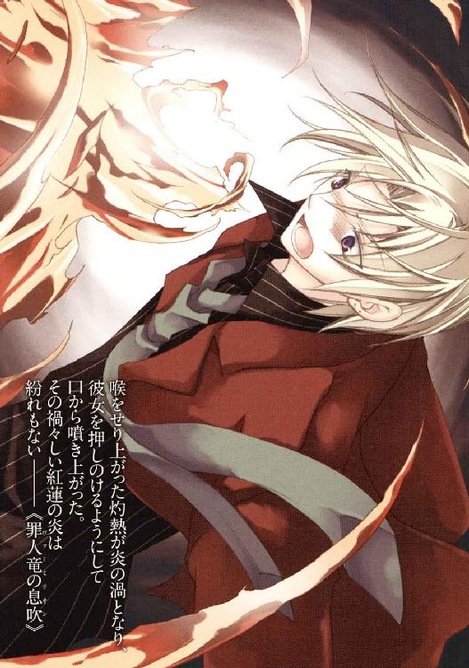
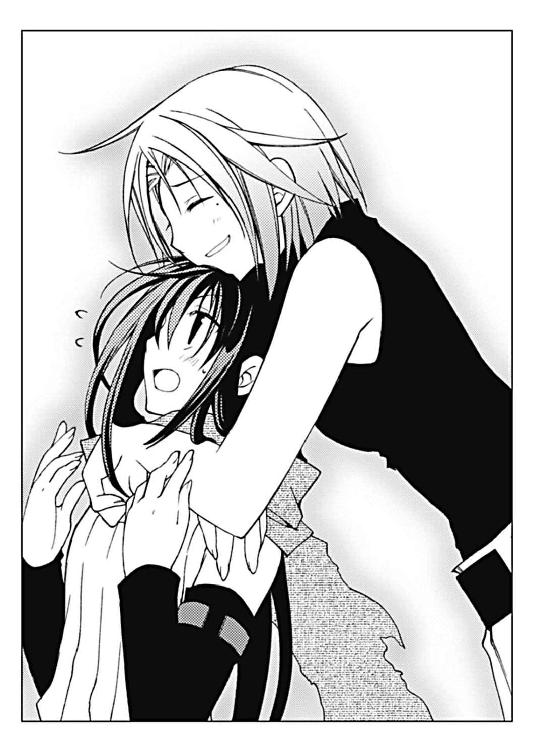

| L2 詐欺師フラットランドのおそらくは華麗なる伝説 L 詐欺師フラットランドのおそらくは華麗なる伝説 (富士見ファンタジア文庫) | |
| 坂照 鉄平 | |
| (2012) | |


Ｌ２
詐欺師フラットランドのおそらくは華麗なる伝説
坂照鉄平

富士見ファンタジア文庫
本作品の全部または一部を無断で複製、転載、配信、送信したり、ホームページ上に転載することを禁止します。また、本作品の内容を無断で改変、改ざん等を行うことも禁止します。
本作品購入時にご承諾いただいた規約により、有償・無償にかかわらず本作品を第三者に譲渡することはできません。
本作品を示すサムネイルなどのイメージ画像は、再ダウンロード時に予告なく変更される場合があります。
本作品は縦書きでレイアウトされています。
また、ご覧になるリーディングシステムにより、表示の差が認められることがあります。
口絵・本文イラスト 水城葵
プロローグ
まず、タフであれ。
開拓辺境で成功する秘訣として、もう百年も語り継がれている言葉だ。
イーネルアイグレス州国法に明記された『先駆者に登録した個人・団体は、開拓した辺境の土地の所有を認められる』の一文は、何人もの成功者を辺境に産み落とした。彼らが成り上がれた理由の一つは、まさしくタフであったからだ。
大地を征く体力だけではない。未知なる荒野へ踏み出していくガッツ。害獣や天災の脅威にも折れない野心。たった一つの成功を掴むまで、無限の失敗の底を探り続ける心の強さ──不屈の根性。先駆者が持つ、それがなによりも強力な武器だ。
だがそんな彼らでも恐れる「禁忌」が、辺境にはひしめいている。
一つ。バロックバレーの森へ入るな。悪名高いエル・ヴァゴ団の縄張りだ。
一つ。北オヂムの腐れ沼を避けて通れ。湧き出る毒は鳥をも墜とす。
一つ。〝チョップとマッシュ〟の駅馬車を使うな。二度と生きては降りられない。
他にも数え上げればきりがない。しかし一番に警戒すべき「禁忌」は、ある生物に関係する事柄だと誰もが言う。
それは山ほど巨大な体躯を堅牢な鱗で鎧い、豪壮なる翼で天を駆ける最大の生物。
あたかも死神の大鎌のごとき牙爪で岩を裂き、天衝く角で嵐を呼ぶ最悪の暴君。
辺境の、最も危険な一要素。即ち。
一つ。白峰ノルグに近づくな。
夕陽も凍える吹雪の中に、恐ろしい竜が棲んでいる。
◆□□◆
【ノルガンディア】
轟々とうねる風音の狭間に、硬い声が楔のように打ち込まれる。
じっと、凪ぐことのない白峰ノルグの猛吹雪の奥を見つめていた彼女──雪原に蒼銀色の偉躯を横たえた雪竜ノルガンディアは、長い首で大儀そうに傍らを見下ろした。
【ウーフィーグリッド】
呟く彼女の腹の横に、一人の男が立っている。
かなりの高齢で、硬い表情の顔には幾本もの皺が刻まれていた。髪は綺麗に剃り上げているが、眉と顎髭は貫禄を漂わせるほどに白い。筋骨隆々とした身体には茜色のぼろ布しか纏っていないのに、斬りつけるような寒風を意にも介していない風だった。
ウーフィーグリッドは彼女の眼を真っ直ぐ見上げ、重々しく口を開く。
【分かっていただきたい、ノルガンディア。必要な決定でした】
【いかにもな物言いね。里長のあなたらしい】
唸るように答えると同時、彼女は牙の隙間から嘆息をこぼした。
彼女たちが交わしているのは、人間の言語ではない。長く鋭い、笛の音にも似た、吹雪を裂いて響き渡る言葉──それは、竜の咆吼である。
【また、あの子一人だけを行かせることが、本当に必要な決定だった？】
【使命を果たせなんだ咎として......なにも私とて、真にその意味でアーティアを向かわせたわけではありませぬ】
にわかに声を尖らせるノルガンディアに、しかしウーフィーグリッドの声音は変わらない。吹雪の合間から、むしろ静かに告げてくる。
【葬星の火焔──《罪人竜の息吹》は我ら星守る茜鱗、否、この星に在る生命にとって最大の禁忌。触れる目も追う足も、少ない方が良い】
【あの子なら単独で《罪人竜の息吹》を持ち帰り得ると？】
【貴方ならそれはご存じのはず。それに............そろそろ、頃合いです故】
瞬間、ウーフィーグリッドの周囲が爆発した。
いや爆発ではない──雪面に突き立った巨大な氷の杭が雪を巻き上げたのだ。その轟音と振動は、爆発と呼んでなんら差し支えはなかっただろうが。
自分を閉じこめるように突き立った氷柱を、ウーフィーグリッドは無言で見渡す。そして静かな山のように変わらぬ表情で、ぽつりと言葉を紡いだ。
【《息吹》を振るわれる姿を拝するのは、何十年来でしょうな】
【早すぎる】
剣じみた牙の並ぶ顎から煌めく氷の細片をこぼし、ノルガンディアは眼下の男を睨みつける。尾が雪を薙ぎ、彼女の背後に雪煙を散らした。
【あの子はまだなにも知らない。焦って全てを失うのは愚かよ】
【無論、今すぐに全てを終わらせようとは考えておりませぬ。しかし里の者の目から離れた場で《罪人竜の息吹》に接触させるのは、悪くはありますまい】
【いずれ私がやらせたわ。人間の世界で、一人でやらせることじゃない】
吹雪をも震わせるほどの怒気を纏う彼女に、ウーフィーグリッドはあくまで態度を変えない。いや、その言葉は、わずかに勢い込んですらいた。
【ノルガンディア、心中は察します。あの娘に名を授けたのは貴方ですからな。しかし忘れてはなりませぬぞ、我々は星を守る者。......そして、あの娘は】
【誰に物を言っている、ウーフィーグリッド】
ぴしゃり、と。
彼の言葉を遮る形で、ノルガンディアは言葉を叩きつけた。短く、だが鋭く鮮烈なその咆吼に、ウーフィーグリッドを閉じこめていた氷の檻が砕け散る。
降り注ぐ氷の中で両眼を伏せる彼に、彼女は更に強い言葉で告げた。
【忘れたことなど一度もない──私は、あの子の母親よ】
【............失言でしたな】
剃髪した頭を深々と下げ、ウーフィーグリッドは口を閉ざす。
それ以上なにか言う気にもなれず、彼女は雪片まじりの溜め息をつく。そして再び、首を吹雪の帳の向こうに向け──ふと、困惑に顔をしかめた。
【......ねえウーフィーグリッド。今、誰か山を降りていったみたいなんだけど】
【なんですと？】
ノルガンディアの言葉に、彼は怪訝そうに眉根を寄せる。
無断で山を降りるのはノルグの里の掟に反する事だ。だが竜であるノルガンディアは、この山で起きる全てを精確に把握する。その知覚能力に間違いはない。
茜色の衣装を直すウーフィーグリッドに、彼女は遠くを見つめたまま頷いた。
【里の者ね。......軽く、小さい。子供？......これは......ミロ？ ミロ・デルッカ!?】
【なんですと!?】
先ほどと同じ言葉を──ただし今度はかなり切迫した声で──叫び、彼は雪に足を取られながらノルガンディアの頭の下まで走り寄る。
【まさかアーティアを追って......】
【あり得るわ、あの子すごく懐いてたから......あ、あ、感覚結界の外に！】
【いッ、いいいかがいたしましょうや、ノルガンディア!!】
【私に訊かないでよ！ 里のことは貴方の責任でしょ────!?】
張り詰めていた厳粛な空気を吹っ飛ばし。
子供が喧嘩するような咆吼が、吹雪の中にこだました。
第一章 「どの面下げて」 Sonata Ardentica
初めて鉄道を見たのはいつだったか。とにかく無骨で、黒煙を吐き汽笛を轟かせる鋼鉄の怪物には、ただ圧倒されるばかりであった気がする。
想像を超えて巨大な存在を目の当たりにした時、出来ることはそう多くない。圧倒されるか、感嘆するか、子供のようにはしゃぐのか──
「おお............!?」
──とりあえず、目の前の少女はその全てを網羅していた。
しきりに左右へ頭を巡らせる彼女に、バーン・フラットランドは密かに苦笑した。
「どうだいアーティア、無意味にでっかいだろ」
それが自分の手柄のように語る彼に、少女が振り向いてくる。
怜悧な雰囲気を纏う少女だった。
昼前の太陽に輝く銀色の双眸は涼やかに彼を見据え、雪のように白い顔は、どこか幼さを残す風貌に見合わない凜とした空気を帯びている。流麗な黒髪をしまい込んだ真新しい外套はサイズが大きすぎ、布の塊から頭が生えているように見えた。
少女──アーティアは外套に埋もれるように頷いてから、また背後に向き直る。
「実際、巨大なものだな......これが湖とは信じがたい」
古めかしい言葉で呟く彼女の前には、広大な湖面が広がっていた。
そうと知らなければ海とでも思っただろう巨大湖は、視界の端から端まで続いている。水平線すら望めるこの湖を初めて訪れた時は、バーンも度肝を抜かれたものだ。
砂塵の混じったブロンドをかき上げ、彼は湖一帯を見回した。
「ポルツィーノ湖は州国で一番でかい湖なんだ。十本以上の河がここで交差する。河川貿易の要って言われててね、集まってくる物ったらまあ、西の石炭から東の香辛料、北の南の噂話まで、ここで見つからない物はないってくらいさ」
「ほう............、ん？」
と、不意に口を噤むと、アーティアは湖のほとりに膝をついた。湖の水をすくい、手の平からこぼれる水滴に真剣な眼差しを注いで、ぽつりと呟く。
「............そうか、ここは──」
「な、なに？ なんかマズいことでもあったの？」
「──いや、なにもない。気にするな」
端整な顔を不安げに歪めるバーンに、彼女は肩をすくめた。
膝を払って立ち上がると、アーティアは大きすぎる外套を器用に身体に引っ掛け、彼の跨っている機械の後部へ飛び乗った。
「さっさと行くぞ。ぼやぼやしとる時間などないと忘れるな、弟子よ」
「湖見たいから停めろって言ったの君だろ......でも、そんなワガママすらも魅力的さ」
「言っとれ」
にべもない返事に肩をすくめると、バーンは操縦桿を握り、二輪駆動機のイグニッションを回す。荒野も走破するタフな機体は砂塵を物ともせず、猛々しい唸りで主に応えた。
走り出したトランプホイールの上で、アーティアがふん、と鼻を鳴らす。
「......噂話が集まると言うがな。《罪人竜の息吹》は星守り最大の禁忌だぞ」
「大丈夫、アテがないことはないんだ。もし空振りでも、なにかうまい話にありつけたらめっけもんだろ？ そろそろ路銀も稼がないとね」
誰かに聞かれるのを警戒するように声を落とす彼女に、バーンは気楽に答えた。そして前方、湖の上に見えてきた街の影を眺めやる──ほとりでなく、湖の上を。
「いろいろと仕切り直すにはもってこいなんだよ。あのカピロサって街はさ」
開拓街カピロサ。
浮動市場と呼ばれることもあるらしい。彼女、アーティア・アリア・ノルガンディアが知る街など片手で数える程度だが、ここが特異な街だということは分かった。
カピロサの建物は石造りが基本である。建材のグレンダ砂岩は見た目にも美しく、街中の水路と共に陽光を照り返す様は思わず見入ってしまうほどだったが──
「う、ぬう......っ!?」
──通りに溢れる人混みは、これまで見たどの街よりも騒々しかった。
辺りはマーケットを構えた辻商人たちで混み合い、水路にまで商品を載せた舟がひしめいている。景気の良い呼び込みや啖呵売の声、値段交渉の大音声が始終飛び交い、顔つきも肌の色も様々な人々が威勢良く闊歩していた。勢いに圧されてあらぬ方へ進み始めたアーティアの手を引き、バーンが雑踏の間を器用に抜けていく。
「大丈夫かい？ こっちこっち」
引かれるまま、目を回しつつ歩道の端まで下がる。水路から昇ってくる風に頬を撫でられながら、アーティアはもみくちゃになった外套を直して息を荒げた。
「せッ──狭すぎるぞ、この街は！」
もとより人混みは得意ではないが......それでもこの混み合いぶりは尋常ではない。
「トランプホイール、街の外に預けてきた理由が分かったろ？」
気遣わしげに彼女の背を叩いて、バーンが苦笑する。
「商売に交通に便利なとこだからね。漂泊商人とか旅人とか、脛ッ傷のある連中とかが州国中からやってくる。このくらいの人出ならマシな方さ」
「むう......しかし、この道の狭さはたまらんな」
「それも理由があって......カピロサは、幾つものボートの集合みたいな街なんだ」
不服げに嘆息するアーティアに、彼は地面を指さして見せる。
何の変哲もない石畳だが......彼女の鋭い感覚はその石畳が、否、地面全体がゆっくりと揺らいでいるのを感じていた。
「湖に浮かべた島舟──木と石で組んだ基盤の上に建物を造ってるから、歩道に割ける面積が限られてるんだよ。この湖、何本も河が流れ込むせいで変な水流があってね。ヘタに固定するより浮島にした方が安全なんだ。おかげで島舟の位置関係が毎日変わっちゃうから、移動の基本は足じゃなくて渡し船になるってわけ」
「地面全てが作り物ということか」
低く呻きながら、アーティアは嫌そうな顔で石畳を踏みつけた。
人工物は必ず壊れるというのが彼女の哲学である。その根拠のない信念たるや宿の二階にも上がれないほどだが......下が湖なら、まあ最悪、泳げばよかろう。
「街なら陸に造ればいいだろうに、まったく......」
「交易船の逗留場がはしりになった街だからね。観光地にもなっちゃってるし、今さら陸には上がれないよ。ほら、あれ見て」
ぶつぶつと呟く彼女に肩をすくめ、バーンは遠くを指さした。
何棟もの島舟の向こうに、大きな塔が頭を覗かせている。高層建築の多いカピロサでもひときわ目立つその塔は、おそらく街中のどこからでも見えるだろう。グレンダ砂岩の灰白色に輝く壁の上部に、巨大な時計の文字盤がついていた。
「あれだけ大きい時計塔は中央都市でもお目にかかれない。ポルツィーノ湖の水流を動力に利用できるカピロサだから造れた、観光スポットの目玉だよ」
「おお......確かに巨大だな」
「基盤に一番でかくてしっかりした島舟を丸々使ってるんだ。ハリケーンに巻き込まれたら転覆しちゃうからね。それでも事故はあるみたいだけど」
「当然だろう。自然の力にそう易々と抗えるものか」
「こんな話がある。ある大雨の日に、街の人は時計塔を閉鎖した。けど、文字盤に空いてる整備用通路の出入り口は忘れてたんだ。なまじ他の戸締まりが完璧だったもんで、後で様子を見に来た技師が扉を開けた途端、溜まった雨水が大砲みたいに噴き出したとか」
「間抜けな話だな............、？」
ふと、バーンの声がやけに遠くなっていることに気づき、振り返る。
「他にもこの街には見どころが多いよ。君、どこから来たの？......本当かい!? 僕の実家のすぐ近くじゃないか！ 偶然だなー......そうだ、南の出身ならマキロ芋麺は食べたことないよね？ そこにいい店があるんだ、よかったら一緒に────がぺ」
背後からマントを引っ張って首を締めてやると、いつの間にか通りすがりの女性に言い寄っていたバーンは声を詰まらせた。まんざらでもなさそうだった女性はアーティアの眼光に怯えて、そそくさと雑踏に逃げ込んでいく。
「......仕事もたいがいにせんか。ここに来た目的を忘れるなよ」
ふん、と鼻を鳴らし、彼女は引っ張っていたマントを離した。
──彼の『仕事』を見るのはこれが初めてではないが、つくづく情けない。
軽薄、腑抜け、根性なしと文句のつけようしかないこのろくでなしに、天は眉目秀麗たる容姿と類い希なる虚言の才能を与えた。その容貌を利用して「客」になりそうな女性に近づき言葉巧みに酔わせ、あとは頃合いを見計らってどろんを決めこむ......語るにみっともない生き様である。情夫だのジゴロだの言うらしいが、バーン自身は詐欺師と称することを好んでいるようだった。いずれにせよ、見苦しい。
「で、でもこの仕事も捨てたもんじゃないよ？ ほら、アテがあるって言ったろ。あれ、昔ここの仕事で知り合った人なんだから。彼女その道の権威だからさ、期待していいよ」
言い訳がましくまくしたてる彼を、アーティアはちろりと横目で見やる。
「で？ その『彼女』はどこに居るのだ」
「......この街って、ほんと人捜しに向かないよね」
眩しげな笑顔を浮かべ、バーンは明後日の方を見上げた。迷ったらしい。
ほとほと呆れた嘆息をこぼし、彼女は改めてしっかりと外套を巻き直した。
「足を使うほかあるまい。行くぞ」
「えー、のんびりやろうよ。ほら見て見て、なんか美味しそうなシチュー売ってる」
「......。......の、呑気なことを言ってるんじゃない。この与太者が」
一瞬ならず揺らいだ気持ちを引き締め、早足に歩き出す。とはいえやはり人波に流されかけ、結局バーンに先導してもらう格好になるのだが......と。
「──あれ？ なんだろ」
ふと、通りの一角に人だかりが出来ていることに気づきバーンが足を止めた。
アーティアにはよく見えなかったが、どうやら口論する二人を皆が取り巻いている状況らしい。人垣の向こうから聞こえてくるのは恫喝する男の声と、それに威勢良く切り返す女の声──こちらは幾分、虚勢の色が濃いようではあったが。
喧嘩だろう。辺境の開拓街で揉め事は日常茶飯事だ。
「ふん。活気があるのは結構だが、持て余すのは問題だな......ん、どうした」
「............いや、あのさ」
と、隣で騒ぎを見物していたバーンが、震える指で肩をつついてくる。
「いい知らせと悪い知らせがあるんだけど、どっちから聞きたい？」
「ぬ？ 言いたい方から言えばよかろ」
「じゃ、いい知らせから。......もう、人捜しで歩き回る必要はなさそうだよ」
その言葉の意味するところを察し──アーティアは、銀の双眸を半眼に細める。
「......悪い知らせは？」
「捜してる人が、今まさにそこでガラの悪いのにからまれてるんだよね」
「どちらも同じだろうが、たわけッ！」
乾いた声で笑うバーンを一喝し、彼女は腰を落とした。
その気配で何をするつもりなのか察したらしく、バーンは慌てて肩を掴んでくる。
「待った！ 止めるのはいいけど、顔！ 顔くらい隠してくれよ!? 事情も分かんない内からケンカで目立つのはマズいんだって、何度も言ったじゃないか！」
「......また辺境の慣習というやつか......面倒だな」
ぶつぶつとこぼしながら、アーティアは外套の下に着けていた襟巻を口元まで引っ張り上げる。夕陽で染め上げたような、綺麗な茜色の襟巻だ。
面倒だが仕方がない。開拓辺境ではどこでもそんな慣習がつきまとう。
そして──その面倒な人間の世界に在ることを選んだのは、彼女自身なのだ。
フードを被り姿勢を低くすると、彼女は影のように人垣の間を駆け抜ける。
上下揃いのスーツを着た男が、赤毛を振り乱して怒鳴り散らしていた。対峙する女性は男を睨み返しているものの、薄いケープを羽織ったその肩がかすかに震えている。生白い手足は細く、荒事が得意なようには見えない。
一呼吸で距離を詰めると、アーティアは男の鼻面を打ち抜くように肘を叩きつけた。
「っげぎゃッ!?」
妙な悲鳴を上げながら、男は人垣の方へ転がっていく。
女の方はぽかんと口を開け、吹き飛んだ男を眺めていた。そちらに声をかけようとした時──周りから数人の男たちが飛び出してくる。仲間を潜ませていたということか。
この程度の加勢など物の数ではないが......少々、煩雑ではある。
（............。顔、隠してればいいんだよね）
バーンの言葉を思い返し、アーティアは地面を蹴った。
男たちの対応は存外に早い。右から来る二人が彼女の側面へ回り込み、左へ詰めた一人が革棍棒を振り上げていた。そこそこに連携はとれるらしい、が。
身を屈めたアーティアは、振り下ろされた革棍棒のさらに下をくぐり抜ける。そのまま男の膝を踏み抜き、肩を蹴り、彼らの頭上にまで跳び上がった。
たたらを踏む男たちをはるか眼下に見下ろし、指で襟巻を下げ。
【──恐れて、伏せよッ！】
獣のような咆吼と共に、彼女の口から猛烈な──「吹雪」が吐き出された。
鋭い風音を撒き散らし、蒼銀色の風が唖然とする三人の男を呑み込む。
時間にすればほんの数秒。
雪片が風に溶け涼気だけが残ったその場に、アーティアは軽やかに着地する。全身を雪まみれにして倒れている男たちを含め、辺りは静まりかえっていた。
満足げにフードを被り直したところで、ようやく人混みを抜けたバーンが駆けてくる。マントを頭からほっかむりにした愉快な格好で、彼は両手をわななかせた。
「待って待って、ちょっと！......こんなとこで《息吹》使うことないだろ!?」
「？ なにが不満か。ほれ、ちゃんと顔も隠している。問題あるまい」
「顔出す以上に目立ちまくってることが大問題なんだよッ！」
「いちいちうっさいのう............、っ？」
小声で器用に絶叫するバーンに唸り返した時──背後で、靴が地面を擦る音。
振り向けば、最初に殴り飛ばした赤毛の男が鼻血を滴らせて立ち上がっていた。
「............テメェら......誰にケンカ売ったか分かってるのか......？ お、オレぁ、カピロッシ・ファミリーのモンだぜ！」
「げ、嘘っ!?」
情けない声で叫んだのは、バーンだった。
怪訝な顔をするアーティアを振り返り、彼はわざとらしく大声を上げる。
「マズいよトレーシー、こいつらカピロサを仕切るマフィアの構成員だ！ こりゃ早く街を出て、予定通りに東のスキップロックのステーションから南へ逃げなくちゃね！」
「？ 予定ではしばしここに逗留するはずだろう。それにトレーシーって誰だ。私はア」
「機転って言葉知ってるかなぁトレーシーっ!?」
堂々と名乗ろうとする彼女の口を、バーンが頭ごと抱えて塞ぐ。
そのまま赤毛の男に向き直り、彼は見苦しいほど狼狽しながらまくしたてた。
「違うんだ、実は僕ら......そう、宣教師なんだ！ 西部を席巻するゼーラスアマーラ教！ 神の愛をフォークとエルボーで伝える実践派でね、この子は偉大なるカピロッシ・ファミリーのあんたに祝福を捧げたっていうことで、どうですかお客さん!?」
「誰が納得するかボケ!?」
「おっしゃるとおりですッ!!......って、あ、ヤバ────!?」
怒鳴る男にやけくそじみた笑顔で叫び返したバーンは、途端にその顔を蒼白にさせる。
慌ててアーティアを離し自分の口を塞ごうとするが、呼吸ひとつ分──まさしく呼吸ひとつ分──だけ速く、その口から猛る炎が吐き出された。
「ほげぁ────────!?」
火炎の渦は男の鼻面をかすめ、弧を描いて宙へ伸び上がっていき......前触れもなく、弾けて霧散する。ほのかに焦げた顔を哀れなほど強ばらせ、男が尻餅をついた。
押さえた口から黒煙をこぼすバーンを指さし、男はかすれた言葉を絞り出す。
「......人間離れした軽業、今の炎に吹雪......テメェらまさか............ど、竜!?」
てんで的外れなその悲鳴に、アーティアは肩を落とした。
「......私のどこが竜に見えるんだ。竜が人間の街になど降りてくるものか」
憮然と息をつき、どよめく野次馬たちを睥睨する。まったく、勘違いも甚だしい。
「私は竜ではない。貴様らが言うところの............そう。竜徒だ」
一瞬の間。
どよめきが恐慌に化けた。
竜と、竜徒。開拓辺境では不吉を約束する言葉だ。
地上最古にして最悪の怪物、竜。その前に立つことは死を意味する。
それは彼らが砦の防塁を薙ぎ払う尾を持つからでも、咆吼一つで十万の精兵を恐怖に縛るからでもない──竜を真に最悪たらしめているのは、その《息吹》だ。
『竜の《息吹》は自然を支配する』。未だ真偽を問われている学説だが、烈風や霰を吐き出す竜がいるのは確かだ。夕暦二年、〝不遜なる〟レヴェルベリ卿の私兵団がコノプカ砂漠の双頭竜討伐に赴き、正午までには全員きっちり氷漬けにされた「真昼の凍結」事件は《息吹》の恐ろしさを説くのに今でも引き合いに出される。
生息数が極端に少なく、少し耳を澄ましていればまず遭遇する事はないのだが......辺境には、頼みもしないのに向こうからやってくる災厄もあるのだ。
それが竜徒──荒野に潜み人間を襲う、《息吹》を操る人間たちである。
「うわああああ大パニック!?」
「これで私たちを気にする余裕のある者はいまい。ほれ、深慮遠謀」
「だんだん君が信用できなくなってきたんだけど、僕......」
島舟が揺らぐほどの大混乱の中心で。
（............竜徒......）
彼女は地面に座り込み、言い合う二人を呆然と眺めていた。
吹雪を吐いた方はずいぶん小柄である。口調こそ古めかしいが、その透き通った声は女性の、おそらくはまだ少女のものだ。
そしてもう一人、炎の《息吹》を吐いた竜徒。
汚いマントをほっかむりにした間抜けな風体だが、体格自体は極めてスマートだ。いかにも人好きのする声は男のもので............何故か、ひどく聞き覚えのある声だった。
まさか──いやまさか。そんな、馬鹿な？
混乱する彼女の方へ、男がふと気づいたように振り向いてくる。そして小走りに駆け寄ってくると、顔を隠していたほっかむりを取り払った。
「──フェイ、久しぶり！」
「ばッ......バー、ン？............バーン・フラットランド？」
男──バーンを見上げ、呆然と呟く。彼は稀代の名匠の手になる彫刻のような端整な顔を子供のようにほころばせると、こちらに手を差し伸べてきた。
「びっくりした......よね？ いろいろあってさ、火ぃ吹くようになっちゃったんだ」
「ど............どッ、ど......ど......っ」
「あ、別に竜徒になったんじゃないよ。その辺話すと複雑なんだけど、実は──」
どうしてここに？
どうして《息吹》を？
訊きたいことは山ほどある。聞きたい言葉は、その倍もある。
だが、言うべきことならたった一つだ。
差し出された手を引っ張って、戸惑う碧眼を間近に覗き込むと、
「..................どの面下げて戻ってきたああああああぁぁぁぁぁッ!!」
フェイ・スクィントは音高らかに、バーンの横っ面に平手打ちを喰らわせた。
◆□□◆
ふと。
街中に満ちる喧騒をかき分けひときわ情けない悲鳴が上がったのに、彼は眉根を寄せて振り返った。無論、ここから何が見えるわけでもなかったが。
（ふん──人間は本当に騒々しいんだな）
狭くて騒がしく、醜く息苦しい。
人間の世界はどこも同じだ。故郷の山、白峰ノルグの清冽な空気とは比ぶべくもない。
（本当に......こんな世界は相応しくないんだ。彼女には）
彼女の、氷のように澄んだ銀の瞳はこんな堕落した世界を映してはならない。彼女の誇りが穢されようとしているのなら、自分がそれを守らなくてはならない。
理由はそれで十分だ──自分が彼女を、人間の世界から救い出す。
（今度こそ俺が助けるから......待ってて、アーティア！）
茜色の外套の下で小さな拳を固めると、彼は薄暗い路地を歩いていった。
◆□□◆
「というわけで......彼女が例のアテこと、フェイ・スクィントだよ」
──騒ぎを逃れ転がり込んだフェイの部屋で、バーンはくっきりと手形のついた顔をにこやかに笑みの形にして見せた。
腰掛けた椅子を軋ませ、フェイはぞんざいに断ち切った砂色の髪に手を入れる。
「............なにを当て込んで戻ってきたのか知らないけど」
呟き、彼女は視線を横に流す。本棚を埋める文書や謎の標本、明らかに出し忘れたゴミ袋の間で申し訳なさそうにしている窓からは、まだ表の騒ぎが窺えた。
「事情くらいは説明してくれるんでしょうね」
「もちろん。事情を知ってもらわないことには話になんない」
へらへら笑って肩をすくめると、彼はあぐらをかいて外套を丸めているアーティアを振り向いた。気づいて顔を上げる彼女を示し、口を開く。
「彼女はアーティア。もう分かってる、よね......竜徒だ。一見クールで取っつきにくそうだけど、案外迂闊なおまぬけさんだからそう構えないでぁだだだだだ」
「アーティア・アリア・ノルガンディアだ。白峰ノルグの里から来た」
「そ、そう......よろしくね」
淡々と言いながらバーンの関節を極める少女に、フェイはどことなく遠巻きに返事をする。ねじられた膝と腰骨を叩いて降参を訴えつつ、バーンは今度はフェイを指さした。
「ふぇ、フェイは、竜と竜徒専門の学者なんだ。もう二年くらい前かな、僕がこの街にヤサを借りてた時に知り合ったんだ」
「そうだったわね。ある朝起きたら、あなたは街を出た後だった──」
こちらの言葉に被せるように口を挟み、フェイが半眼で睨んでくる。
「──ちなみに三年前よ。あたしが人生のろくでもなさを痛感した日」
「いやほら。あの時は、筋モン相手のポーカーでイカサマがバレちゃってさ。街を出なくちゃ君にも迷惑がかかると思ったんだ。まったく金に汚い連中でね」
ようやく解放された身体をあちこちさすりながら飄々と言うバーンに、フェイは全く信用していない半眼を向けた。痩せた腕を組み、大きな溜め息をこぼす。
「......ま、その話はもういいわよ。さっきの一発で、とりあえず棚上げにしてあげる」
「ああ、フェイ。君の優しさは昔と変わらないんだね！」
「ただしッ！」
調子よく手を握ろうとするバーンをぴしゃりとはね除け、彼女は鼻先に指を突きつけてきた。視線は、彼の背後で部屋を見回しているアーティアに向けている。
「あの子騙そうってことなら協力しないからね。......竜徒にまで手を出すとは思わなかったわよ。しかもまだ子供じゃない、この最低男」
「ち、違うよ!? 誤解だよ誤解！」
あらぬ容疑──自業自得だが──に、バーンはぶんぶんと首を振る。
「確かに騙したこともあるけど、それだってそっち方面で騙したワケじゃないよ。だいたい子供ったって、あの子は......あれ？ ねえアーティア、君っていくつなんだっけ？」
「ん？ さあな......母様なら知っているかもしれんが」
「あなたたちね」
あっさり話を見失うバーンに、フェイがこめかみを押さえて呻く。
「......とにかく話を聞かせて。なんで戻ってきたの？ どうしてあなたが《息吹》を扱えるの。竜徒と一緒にいるのはどうして？ あたしになにをさせようっていうの？」
「助けが要るんだ」
矢継ぎ早に質問する彼女の瞳を覗き込んで、バーンは表情を深刻なものにする。
「州国竜研究の第一人者、フェイ・スクィント。君の助けが......どうしても要る」
「............真面目な話、みたいね。詳しく説明して」
居住まいを正したフェイに、改めて事情を話そうとした時──彼を押しのけ、アーティアが前に進み出る。彼女は真っ直ぐフェイを見つめて、口を開いた。
「──少し前のことだ。ノルグの里からある禁忌の呪物が持ち出された。私はその呪物を回収するため、人間の世界に遣わされている」
「禁忌......竜工芸、ってやつかしら？」
わずかに視線を宙にさまよわせてから、フェイは首を傾けた。
竜工芸──竜の身体の一部から造られる、神秘の力を持つ道具である。
牙を加工した剣は大河の流れをも断ち、髭を編み上げた護符はあらゆる厄災をはね除けるというが......力の強大さゆえに自らの身を滅ぼす竜徒も少なくないという。
しかし、アーティアはゆっくりと頭を振る。
「......《罪人竜の息吹》の伝説は知っているか？」
「？ 記録にあるくらいなら、一通り」
首を傾げ、彼女は散らかった机の上から一冊のノートを引っ張り出した。バランスを失い崩れ落ちていく書類は一顧だにせず、ぱらぱらとページを繰る。
「夕暦以前の話ね......『ニレッタ伯領のニグログルフュ』。戦争があるところには必ず現れ、手当たり次第に殺し、壊して回った最悪の傭兵」
「へー。僕、そんな話知らないや」
「そう思ったから教えてるのよ。黙って聞いてなさい」
散乱した書類を片付けるバーンを一瞥し、フェイは視線を紙面に戻した。
「破壊と殺戮の狂気に呑み込まれた彼はある時、雇い主であるニレッタ伯を殺害。領民も皆殺しにした挙げ句、領地を根こそぎ焼き払った」
「おっかない奴もいたもんだね」
「まだ可愛いもんよ、この頃は。......この後はあなたの方が詳しいんじゃないかしら」
適当な相づちに肩をすくめ、彼女は目の前のアーティアに向き直る。
「この辺り、不鮮明な記述が多いの。竜徒のあなたから──聞かせてもらえない？」
「む。......街を追われ、荒野を駆け山に潜む内に、ニグログルフュはその本能を研ぎ澄ませていった。端的に言えば、《息吹》に開眼したのだ」
軽く頷き、アーティアが話を引き取った。腕を組み、重々しく息をつく。
「砕き、殺し、灼き尽くす火焔。奴は狂気のままその業火を振るい......四頭の竜を喰らった晩、とうとう自ら竜へと変じた。力在る竜が総力を結することで奴自身は滅ぼされたが──その圧倒的な狂気に根ざした《息吹》だけは、消し去ることが出来なかった」
「だから古き竜たちは、雪深い白峰ノルグに《息吹》を封じ込めた......数百年の時を経てなお永久氷壁の中で燃え盛るそれがニグログルフュの残滓、《罪人竜の息吹》」
今度はフェイが話を引き継ぎ、手を鳴らすように本を閉じた。顔にかかる前髪をのけ、彼女は残念そうに肩をすくめる。
「竜徒と認識の差はないのね。で、この御伽噺がなんなの？」
「えーと......そこがまさに認識の差なんじゃないかな」
「うむ。永久氷壁というのもなんだが......これは御伽噺ではないぞ」
二人の言葉に首を傾げるフェイに、どう説明したものだかしばし考え──バーンは、おもむろにアーティアに向き直った。
「ところでアーティア。フェイは私生活においても非の打ち所のない女性でね」
「うん？」
「規律正しい生活態度だけじゃない、実に高潔な心の持ち主なんだ。昔、湖に落ちた子犬を助けに飛び込んで、そのまま飼い主探して走り回ってさ。見つけた飼い主がまたろくでなしだったもんだから怒りのショルダースローで天罰覿面......と、来た来た──！」
喉を駆け上がる灼熱を察知し、バーンが慌てて頭をのけ反らせた瞬間。
空気を震わせ、彼の口から紅蓮の炎が噴き出す。
「ッき────!?」
響きかけたフェイの悲鳴をも呑み込んだ火球は、狭い部屋を埋め尽くすように膨れ上がった。梁に張ったクモの巣を吹き散らすと、炎はぱっと霧散する。
熱波に煽られた埃が舞う中......椅子を転げ落ち愕然と見上げてくるフェイを、口からこぼれる黒煙を払いながら、バーンはアーティアと共に見つめ返す。
「......てことで。察しはついたと思うけど」
「禁忌の呪物《罪人竜の息吹》は──今は、この男の《息吹》になっているのだ」
尻餅をついたまま二人を見つめ、フェイはぱくぱくと口を動かしていた。
数秒もして、彼女は深く息をつくと、ゆっくりと足下を確かめるように立ち上がる。
「............。まさか......実在するものだったなんてね」
「取り乱す君も素敵だよ、フェイ」
真顔で言うバーンの脛を黙って蹴飛ばし、彼女はアーティアに話しかけた。
「──で、あたしになにをさせたいのかしら、ノルガンディアさん」
「アーティアでいい。ノルガンディアは母様に借りた名だ」
足を抱えて跳ねるバーンを半眼で見やり、アーティアが短く嘆息する。
「奴が《罪人竜の息吹》を宿したのは偶然だが......完全に同化してしまってな。摘出する手段を見つけるため、《息吹》を制御する修行をつけがてら道行きを共にしている」
「それであたしの研究から取っかかりを探そう、ってわけね......」
「あの、話の途中で申し訳ないけど......できれば当事者も混ぜて欲しいかなって」
間に立つまでもなく話を進めていく二人に、バーンが寂しげに口を挟む。
力なく肩を落とすと、アーティアは今度は深く、長々と息をついた。
「《罪人竜の息吹》は強大だ。このままでは、いずれこの男の意思を喰らい尽くす」
「っ、それは──」
「そう。その時は............この星に、ニグログルフュが再臨するのだ」
冷たく、厳しく、アーティアは声音を研いでいく。
「こやつを罪人竜に明け渡すわけにはいかん。力を貸して欲しい」
「この《息吹》がないと彼女、里に帰れないんだ。なにか思いつかない？」
独白めいた言葉をこぼす彼女の隣で、バーンがすがるようにフェイを見つめた。
二人の様子になぜか驚いた風に目を丸くして、フェイはそのまましばし黙りこむ。それから髪についた埃を梳くように手を入れ──あっさりと言ってきた。
「ないわね」
「早っ！ もうちょっと悩もうよ!!」
「分かってるわよ。......そうパッとは思いつかない、ってこと」
絶望的な顔で叫ぶバーンに邪険に答え、フェイはぐるりと周囲を示す。
吹き飛ばされた書類がそこら中に散らかっていて、棚にはファイルやレポート類が詰め込んであった。インクも香りそうな新品の本から触ったら指の形に陥没しそうな古書までが床に放り出され、戸板には書き込みだらけの地図も貼ってある。
「──他にも研究資料はたくさんある。ドンピシャの解決策があるとは思えないけど......片っ端からひっくり返していけば、なにか分かる可能性があるかもしれない」
「............協力、してくれるということで......いいのか？」
「あたしの研究にも役立ちそうだしね」
困惑の表情で首を傾げるアーティアに、フェイが薄く笑う。
途端、バーンが露骨な喜色を浮かべた。
「ありがとう、フェイ！ 君を頼って本当によかった!!」
「調子いいのは変わんないんだから、ったく......」
腰に手を当て、フェイは呆れた声で呟くが......細めた双眸に厭気の色はない。
「ただし、あたしも条件出すからね。資料を当たってる間、炊事洗濯その他の雑用、あなたに任せるわよ。適当な部屋掃除して使っちゃっていいから」
「あの頃は毎日やってたことだしね、オーケイさ。宿代が浮くのは助かるよ」
「前に使ってたベッド、まだ捨ててないわよ。埃を拭けば使えるんじゃないかしら」
「懐かしいなー。あの顔みたいな染み、まだ残ってる？」
部屋を見回し、昔を思い出す。彼女が私生活全般にだらしないためバーンが掃除しなければ一日たらずで家中にゴミがあふれたものだ──と。
「──おい、いつまで無駄口をたたいとる」
「ぅあっ？」
鼻先に丸めた紙束を突き出され、バーンは慌てて仰け反った。紙束を握ったアーティアが不機嫌そうに目を細めている。それほど長く話し込んでいたつもりはないのだが......
「うん、そうねー......無駄口たたいてる場合じゃないのよ、ホント」
猫が鼠を威嚇するように喉を鳴らすアーティアの手から、フェイが紙束を取り上げる。筒状に丸めてピンで留められた上質紙で肩を叩き、彼女は顔をしかめた。
「実は条件はもう一つあるの。今、国から仕事を回されててね。長くかかりそうなんだけど......資料を当たるのは、それが片付いてからってことになるわ」
「国から......って、議会から仕事回されたってこと？」
「そう。辺境の開拓護衛軍に、対《息吹》用の装備を考案しろってお達し」
訊ねるバーンに、フェイは舌打ちする。
「言われてほいほい考えつきゃ苦労しないってのよ、そんなの」
「そりゃ難しそうだ。ねえアーティア、君、なんか思いつかない？」
「ふん。人間の浅慮で竜の《息吹》をどうにかしようなど片腹痛いわ」
「それじゃ僕らがここに来た意味まで全否定なんだけど......」
そっぽを向くアーティアに、バーンは途方に暮れて呟いた。
困り果てる彼を見かねたわけではなかろうが、フェイが口を挟んでくれる。
「さすがにそう思ったらしくてね。......連中、こんなものを送ってくるって言うの」
言いながら、彼女は手にしていた紙束のピンを外した。
なにかの図面のように見える──『部外秘』の赤い判にはあえて気づかないふりをした──。紙面の中心、躍る文字列に囲まれた空白にひときわ鮮鋭に描かれたそれは、
「............剣？」
「魔剣、って言うらしいけど。連中の流儀によれば」
伝統的な形状をした広刃の剣の図を指し、フェイは肩をすくめる。
「ペノンブランカの方で発掘された物で、地元じゃ竜の溜め息を鍛えて出来たって言い伝えがある。これ解析してなんかの足しにしろってさ。今日、その剣がカピロサに着くはずなんだけど......受け取りに行く途中で、トラッキオの奴に因縁つけられてたってわけ」
言われ、バーンは先ほどの赤毛のマフィアを思い出した。
「最近、カピロッシの連中のちょっかいがひどいのよ。仕事の邪魔なんてしょっちゅう」
「な、なんでまた？」
「知らないわよ。とにかく気長に待ってもらうことになるわ、覚悟しといて」
丸め直した図面を適当に放り出し、フェイは渋い顔で宣告した。もとより他にアテがあるわけでもなし、待つのは一向に構わないのだが......
口元に手を当て、しばし黙考し──バーンは、おもむろに顔を上げる。
「──僕、カピロッシ・ファミリーに話をつけてみるよ」
「..................は!?」
裏返った声で叫び、フェイが目を丸くした。アーティアもぎょっとしたようにこちらを見つめている。軽く肩をすくめ、バーンはへらりと笑った。
「邪魔する理由だけでも聞いてみてさ、いけそうならどうにか丸め込んでみる。......ムシの良い頼みをしてるんだ、これくらいは働かないとね」
「ちょ──待ちなさい！ あなた、なに言ってるか分かってるの!?」
早足に詰め寄ってきたフェイが、鼻先をつき合わせて唸り声を上げる。
「......冗談なら早くそう言って。今ならまだ笑ってあげる」
「い、いや冗談なんかじゃないよ。本気も本気さ」
「ダメよ、絶ッ対ダメ。あたしみたいに平手一発で許してくれる連中じゃないのよ？ そんなことしなくても、言われたことはちゃんと調べてあげるから──」
懇願と言って良いほど深刻に言いつのるフェイに、バーンは片目を瞑って見せた。
「大丈夫、うまく立ち回るよ。だからこその〝嘘つきバーン〟ってもんさ」
「────────ったく......」
無造作に頭を掻いてから、フェイはどす、と胸に拳をぶつけてきた。吐息もかかりそうな距離から灰色の目が見上げてくる。
「その顔されたら、あたしは信じるしかないって分かってるんでしょ？」
「はは。あ、でも心配ないよ。多少はネタもあるしね」
「嘘だったら今度こそ承知しないからね」
もう一度胸を叩いてくる彼女へ微笑んで、バーンは踵を返して部屋の外へ向かった。成り行きを見守っていたアーティアは狼狽えたようにバーンとフェイを見比べ──わずかな逡巡の後、バーンの後を追う。と。
「......ねえ。嘘っていえば」
フェイがぽつり呟いてくるのに、バーンは足を止めて振り返った。
「さっき《息吹》を噴く時にしてた話はなんなの？ あたし犬なんて助けてないわよ」
「ああ。なんでも、僕が火を噴くのは自分でも信じられないような大嘘ついた時なんだってさ。それであんな分かり切ったデタラメを」
飛んできた辞書の角が頭に刺さったので、バーンは口を閉じた。
◆□□◆
「信じられん。まったくなにを考えとるのだ」
「し、仕方ないだろ？ あんな話聞かされて黙ってられるわけないって」
通りの向こうからやってくる二人の会話は、耳をそばだてるでもなく聞き取れた。
片方はまだ少女ながら、文句なしに美しい娘である。丈を詰めたスカートやその上に巻いたショートマントは旅路のせいかすり切れ汚れてはいたが、凜とした彼女の容貌にはよく似合っていた。もっとも隣の連れの男を見上げる表情は、怜悧な顔の印象を台無しにするほど見事な膨れっ面だったが。
「大した気概だな。......この前夜盗に襲われたときは、私が連中を叩きのめすまで河に潜って隠れていたくせに」
「や、我ながらよく息が続いたもんだよね」
「誇るな」
少女に頭をはたかれているのは、ずいぶん軽い印象の若者だ。
輝くブロンドに澄んだ碧眼と、絵に描いたような東部系の色男。細身の長身を包む上等なジャケットに、飾り紐やチェーンを主張しすぎずあしらっている。顔立ちも端整だが、いかんせん自分の肩までも背丈のない娘に必死で弁解する姿はあまりに情けない。
「女と見れば後先考えないその性格、どうにかせんかい」
「ご、誤解だよ！ これがきっかけでカピロッシ・ファミリーとパイプ作れればハクがつくと思っただけだって！......なんかさっきから機嫌悪くない、ねえ!?」
「............。知るか馬鹿」
すげなく言い捨て、少女は歩調を速めた。先刻、竜徒が現れるという事件があったためか、この島舟の人通りは比較的少ない。
「............」
目の前を通り過ぎていく少女と男を見送ると──彼は椅子を立ち、注文したまま一度も口を付けていないティーカップの下に数枚の紙幣を挟んだ。
年齢の読みにくい地味な顔だが、むしろ印象的と呼べる風体だ。......真昼のカフェで平然とバトラースーツなどを着込んでいれば、嫌でも記憶に残るだろう。
襟を正して踵を返し、近くの酒場へ入る。
気楽に立ち寄れる類の店ではない、高級サロンの奥。その中でも最上客のためにのみ使われる部屋に辿り着くと、彼は恭しく扉を叩いた。
「目標の両名、発見いたしました」
「んふッ......上首尾でしてよ、ウーノ。これでお父様の無実が晴らせますわ」
返ってきた声は、女性のものだった。まだ若い。というか、幼い。
鈴の鳴るような可愛らしい──そして幾分やかましい──声で、彼女はウーノではない、恐らく同じ部屋の中にいる人物に話を向けた。
「そろそろ働いていただきますわよ。しっかりとわたくしを守りなさいな」
「無論」
応えるのは、曇天を突き上げる岩山のような、低く重々しい男の声。
「荒野を拓き、民護る鎧......それが我ら〈抗竜党必死開拓団〉である」
◆□□◆
カピロッシ・ファミリーは、実はまだ新興と呼んでいい組織だ。
密造煙草が主なシノギだった少数組織を率い、カロージェロ・カピロッシがこの街に流れてきたのはそう昔の話ではない。辺境開拓の白熱で大規模な取引も横行するようになっていたこの地で一山当てた彼は、その勢いのまま街に君臨する。ほどなく街の実質的な支配権を握り大陸中にその名を轟かせたカロージェロは先駆者でこそないものの、一攫千金の開拓辺境ドリームを体現した男であると言えるだろう──
「さて。大の男が二人、雁首揃えてにらめっこってんでもねぇだろう」
──円卓の向かいに座った男を眺め、バーンは知らず唾を飲み込む。
ヴィッテマ・カピロッシ。
カロージェロ・カピロッシの実子にして、近年息を引き取った彼からファミリーの全てを受け継いだ男だ。その権力は、州国議会にまで深く根を張っている。
そんな相手をペテンにかけようというのだから、我ながら正気の沙汰ではない。
（......要は、それだけでかいチャンスにありついたってことだよな）
強引に楽観して、彼は無難な笑顔を取り繕った。
「時間を割いていただいたことに感謝を、ミスター・カピロッシ」
「ミスターはスタイルじゃねぇな。偉大な、と呼べ。皆、俺をそう呼ぶ」
気負うでもなく言い放ち、ヴィッテマは葉巻箱から上等の一本を取り出してヘッドを切り落とした。脇に控えていた禿頭の大男がすかさず火を点ける。
彼が頭を揺らす度に音がするのは、束ねた長髪に数十も編み込まれた極細の鎖が擦れるからである。がっしりした身体を包むスーツにも縫い込まれた鋼線が無数に光っていた。この刃物への徹底した警戒は若衆の時分、アウトロー気取りの少年にナイフで脾臓をえぐられたことが原因だというが......威圧目的としても充分すぎる風体ではある。
気持ちの上では完全に呑み込まれつつ、バーンはなんとか軋んだ声を上げた。
「で、ではグランデ・カピロッシ。早速、お話に入りたいのですが」
「まったく名案だな。そう......フェイ・スクィントのことで話があるそうだが」
すう、とヴィッテマの口から吐き出された紫煙の筋が、豪奢なシャンデリアの灯りを薄く陰らせる。彼はその煙を見上げて、小さく鼻を鳴らした。
「フェイ。六番島舟の学者先生だな......ありゃ、いい女だ。そうだろう？」
「は、はあ」
「あんないい女が、始終やぶ睨みで汚い部屋に籠もってるなんて、こんな勿体ない話があるか？ 当然、俺はないと判断した。ところがあいつは、なんべん俺の女になれと持ち掛けてもことごとく──ああ、なんの話だった？」
「......い、いえ......。なんかもう、目的の半分は果たせた感じです......」
カマをかけるまでもなく事情をぶちまけるヴィッテマに、バーンはぐったりと身体を椅子に沈めた──まだ、より難しいもう半分の目的が残っているのだが。
咳払いして座り直し、彼は怖じ気づいた根性が許す限りの不敵な笑みを浮かべた。
「僕がしたいのは、ビジネスの話です」
「ビジネスは良いもんだ。金と友人が増えていく」
「願わくば僕も良いお付き合いをさせていただきたいですね。......まあ、僕が今ここに居るのは、あくまでフェイ・スクィントの代理人としてなのですが」
愛想笑いの合間に、ちらりと相手を窺う。泰然と葉巻を燻らせるヴィッテマの目が、フェイの名を挙げた途端にほんのわずか変わったのをバーンは見逃さなかった。
視線をいなすように頭を振り──怖かったのだ──、話を続ける。
「実は、あなたの積極的なアプローチに、奥手な彼女は参っていましてね。今朝もあなたの忠実な家族に少々過激な愛の詩を贈られたようで」
「ふん？......おい、マルチェロ」
眉を跳ね上げ、ヴィッテマは取り巻きを振り返った。禿頭の男が心得た様子で部屋を出て行くと、ほどなく鼻に大きな絆創膏を貼った赤毛──先ほどフェイにからんでいた男を連れて戻ってくる。青ざめた彼に、ヴィッテマが視線も向けずに問いかける。
「トラッキオ。今朝はどこにいた？」
「ぼ......ぼッボス、お、おおオレッ、ボス、オレ──」
どうやら独断専行だったらしい──その顔は恐怖と絶望に真っ白になっていた。
バーンも呆れるほど怯えきったその様子に、ヴィッテマもさすがに毒気を抜かれたらしい。もういい、と手を振り、こちらへ肩をすくめてみせる。
「お前の言う通りらしい。まあ、ケツは後で持たせるとしよう。続けてくれ」
「はい。率直な話をしますと、彼女から手を引いていただきたい」
無遠慮な物言いに、トラッキオや取り巻きたちがぎょっとしてバーンを見つめる。
ヴィッテマは一度大きく葉巻の煙を吐き出して、ゆっくりと視線を持ち上げた。
「............タダで、と言うほどの世間知らずじゃないんだろう？」
「もちろん、彼女も相応の代価を払います」
平然と応じながら、彼はいつでも逃げ出せるよう構えていた足を脱力させた。
媚びるより強気に出て見せれば面白がって乗ってくると踏んだのだが......読み違えていたら魚の餌にされてもおかしくはない場面だった。
さも事情通の顔を造ると、バーンはさっき仕入れたばかりの知識を披露し始める。
「先日ペノンブランカで国の調査隊が発掘した、強力な魔剣をあなたに。竜の溜め息を鍛えた破格の一振りです、資産としてはもちろん......使い道の多い話でしょう？」
「なるほど............魔剣ときたか」
彼は、葉巻を灰皿に押しつけて唸ると──つまらなさそうに鼻を鳴らした。
「面白いネタとは思うが、旨味が少ない。国の連中に屁をかませるのは確かに痛快だろうがな。ヤッパ一本じゃ、あいつから手を引く気にはなれんね」
「と、思いまして。実は僕から、もう一つお話を用意させていただきました」
話を終わらせようとするヴィッテマに、バーンはすかさず告げる。
下拵えは終了。いよいよ本命の「嘘」の使い時だ。
「......ひと月前、『アビスパス』総帥が逮捕された事件のことを？」
「話は聞いてる。偉大なオヤジの二世同士だ、それなりに付き合いもあった」
興味の薄い声で答え、ヴィッテマは髪紐を弄る。
「竜の手引きをしたとか聞いたが、どこまで本当かは知らんね。......奴の話か？」
「彼の残したものの話です。事件の直前、彼が治めていた開拓街近郊で巨大なオーガンライト鉱山が発見されまして......その採掘権の処遇は、僕に一任されています」
──ぴたりと、ヴィッテマの手が止まった。
近年発見された新鉱石、オーガンライト鉱から精錬されるオーガンライト鉄鋼は、加えた衝撃を熱に変える特性を持つ稀少金属だ。
その鉱山の採掘権は、鉱山と同量の金塊ほども価値がある。
「彼とは親しくしていましてね。逮捕の直前あちこちへ分散した資産の一部の管理を任されています。その中にはもちろん──あなたのお気に召す書類もあるわけで」
黙り込むヴィッテマに、バーンは悠然と笑みかけるが......その実、胸を突き破ろうとしているかのような鼓動を抑えるのに必死だった。
『アビスパス』総帥シム・リム・アビスパ・ジュニアが逮捕され、その資産が宙に浮いているのは本当だ。ひと月前、バーンはまさにその騒動の中心にいたのである。
だが採掘権の処遇だの、管理を任されているだのというのは完全なでっちあげだ。すぐ見抜かれるような嘘のつき方はしていないが......そう日持ちのする嘘でもない。
金属光沢の混じる髪を撫でつけ、ヴィッテマが声を一段、低くする。
「......ちょいと、信じられない話に思えるな？」
「慎重は美徳です。西の湖岸の入湖用厩舎へ連絡をつけてください、そこに僕が使っている二輪駆動機があるはずです。彼から預かっているオーガンライト・エンジン仕様の試作品でしてね、フレームに『アビスパス』のロゴも刻印されていますよ」
間髪入れずに告げるバーンに、ヴィッテマは背後の取り巻きを振り返った。一人の黒服が即座に退室し......しばしして、一枚の書類を持って戻ってくる。
「──ふん、なるほど。確かにこんな酔狂な代物、あの悪趣味デブ以外に造れるもんじゃあない。よしフラットランド、お前を信用しよう」
受け取った書類に目を走らせ、ヴィッテマは微笑んだ。紳士的とすら言える微笑だったが──バーンは、その笑みにおぞましいほどの危険を感じていた。
（............完全に信用するわけはない、よなぁ......）
辺境を生き延びてきた臆病者の嗅覚を信じ、バーンは気を引き締める。
「書類の準備と輸送は手配済みですが、距離が距離です。少し時間がかかるでしょう。その間に、誠実の証明として魔剣の方を準備するという形では？」
「すべてを心得ているな。俺はその条件で、フェイに関わるのを止める、と......取引はそういう形に落ち着いたと思ったが、お前はどうだ？」
「相違なく、グランデ・カピロッシ」
媚びて見えない程度の笑みを口の端に乗せると、バーンは一礼して席を立った。脚が震えているのがばれないよう、早足気味に出口へ向かう。と。
「しかし、いい根性をしてる。あの『アビスパス』を裏切ろうっていうんだからな」
背後から追い掛けてきたヴィッテマの声に、ぎくりとして足を止める。
彼は面白がるような口ぶりで、こちらが振り返るのを待たずに続けてきた。
「女一人のために通すにはリスキーな話だ。そう思わないか？」
ゆっくりと──荒れ狂う鼓動を落ち着けるようにゆっくりと、振り返る。
答えなくてはいけない。沈黙の長さは失う信用の大きさだ。
音もなく唾を飲み込み、なんとか継ぎ合わせた笑顔から押しだした答えは。
「──まったくですね。それでも............彼女を、愛していますから」
ともあれ、彼に火を吐かせはしなかった。
「お待たせー。さあ、次は市場いこう、市場」
屋敷を出たバーンは、表で待たせていたアーティアの前を早足に通り過ぎる。
彼女は何かを言いかけ言葉を詰まらせてから、改めて口を開いた。
「......時間がかかったな。話とやらはついたのか？」
「ん？ ああ。まあ、ここまでは上手くいってるんじゃないかな」
訊かれ、バーンは小走りに追いついてきたアーティアを振り返った。歩調を落として水路に寄り、口笛を吹いて渡し船を呼ぶ。
寄ってきた舟に乗り込むと、バーンは老年の船頭に行き先を告げて腰を下ろした。そしてこちらは多少不安げに座り込む彼女に、先刻ヴィッテマと取り付けた話を説明する。
ほどなくして話を終えた彼に、アーティアは顔をしかめた。
「曖昧な話だな。連中は本当に手を引くのか？」
「うん、そこは大丈夫。マフィアが手下の前でそう言ったんだぜ」
小首を傾げるアーティアに、ぴっと指を立てて見せる。
「連中は名誉ってものを大事にする。誰に対してでもない、自分に対する責任さ。よっぽどのことがあれば別だろうけど、逆に言えばよっぽどのことがない限り、彼はまず約束を守るよ。......どっちみち、やばい橋ってことには変わりないけどね」
「ふん。要らん危地を招きおって、与太者が」
彼女が険しい顔で鼻を鳴らしたところで、舟が停まった。市場に着いたらしい。
渡し賃を払って舟を降りると、バーンは彼女の手を引いて人混みの中を歩きだす。どこか釈然としない表情を浮かべながら、アーティアはじとりと彼を見上げた。
「だいたい剣を渡すなどと一言も言っとらんかったろう。竜の溜め息を鍛えた魔剣というではないか、《罪人竜の息吹》を取り出す手がかりかも知れんのに」
「ふっふっふ、そこもちゃんと計算してるってば。周りを見てみてよ」
口の端をつり上げ、バーンは空いている方の手で周囲を示す。
この島舟にはカピロサに多い高層建築がほとんどない。テントと見紛うあばら屋から一戸構えの店舗まで、見渡す限り商店が続いていた。露店で串焼きのポテトと果汁ジュースを買い込みアーティアに渡してやりながら、バーンは得意げに胸を張る。
「ここはカピロサ一のマーケットでね。とにかく品数がやけくそに多いんだ」
「ぬう、確かに物が揃っているな」
受け取ったコップに口をつけ、アーティアは通り過ぎる店を流し見ていた。
「震え山羊の尻尾に、これはダダ樹の新芽か。む、キモンの蔓草に紅蜘蛛茸まであるとは......里の工芸師たちも目を剥く稀少品ばかりだぞ」
「ね、大したもんだろ。────ところでなんの店だい、そこ」
「さあ。それで、結局ここに来た理由はなんなのだ。......もう一本くれ」
「早いな君。つまりさ、売ってるとこには骨董の剣なんかも売ってるんだ」
食べ終えた串を突き出すアーティアへ、抱えた紙袋から新しい一本を渡してやる。どことなく幸せそうな彼女に苦笑をこぼし、バーンは辺りを見回した。
「だから多分、変な噂やいわくのついた剣の一本や二本、見つかると思うんだよね。それ魔剣って言い張ればごまかせるかなーって。ヴィッテマは刃物嫌いって話だから、たかが前金代わりの剣を詳しく鑑定させたりはしないよ、きっと」
「それは計算ではなく楽観だ、たわけ」
呆れたようにジュースをすすり、アーティアが溜め息をつく。
「やはり私もついて行くべきだったか」
「それはぜったい話が紛糾するだけだから待っててもらったんだけどね。とにかく、せいぜいハッタリの利いた剣を探さなくちゃ。魔剣っぽい剣ってどんなのだと思う？」
「知るか。......ふむ、だが里にも竜工芸の剣があったな。確か、夕暮クヌギと梟竜の尾羽を月光の染みた湧き水で清めた木剣だった。陽の光を裂き望むまま夜を生み出すという妙剣だったが、月の祝福の産物ゆえそもそも夜しか力を発揮できなくてな」
「それはいわゆる本末転倒............ん？」
残念そうな彼女に半眼で呟いた時......視界を、何かが横切っていく。思わず目で後を追うと、それはアーティアの頭にくっついて止まった。
「......花？」
その薄桃色の花弁をつまみ上げて、バーンは首を捻る。近くに花屋でもあるのだろうかと、アーティアと一緒に頭を巡らせたところで──二人は凍り付いた。
「............、なんだアレ」
彼らが見つめるのは水路の向こう、隣の島舟の集合住宅。
そのアパートメントの屋根に誰かが立っている。
四階建ての屋根に危なげなく立つその人物は、ずいぶん小柄に見えた。アーティアよりも小さいのではないだろうか。鮮やかな茜色の外套ですっぽりと全身を包んでいる。
誰かが彼に気づいたのだろう、市場のあちこちでざわめきが上がりだしていた。人々が見つめる中、外套の人物は堂々たる動作で頭に被っていた外套を払う。
少年、のように見えた。距離があるので短く刈った髪などから推測したに過ぎないが、問題はそこではなく、その少年がどうして真っ直ぐバーンを睨みつけているのか──
そして、どうして口元から花弁がこぼれているのかと言うことだった。
「あッ......あの、アーティア。アレまさか......まさかだよね？」
震える指で彼方の少年を指し、顔を引きつらせた途端。不意に、少年の姿が消えた。
「!? 消──」
「違う、上だッ！」
叫びかけたバーンを引っ張り、アーティアが真横へ飛び退く。その直後──ずだんっ、と凄まじい音を立て、たった今まで彼がいた場所に少年が着地した。
ゆらりと立ち上がる少年を遠巻きに囲んで、市場に不穏な雰囲気が漂いだす。
「ね、ねえ──あの子、今......」
「と......飛び移った、のか......？ あんな所から？」
渦を巻くざわめきを気にした様子もなく、少年は外套の下から左腕だけを出す。
その手には白く長い、動物の骨を磨いたような棍棒が握られていた。そして堂に入った動きで腰を落とすと──まるで獣が咆えるように長く、鋭い咆吼を轟かせる。
【────────!!】
「ど、竜徒だあああぁぁぁぁ────ッ!?」
悲鳴が先か、少年が口から花弁を散らせるのが先だったか。
瞬間でパニックに陥った人々の間をすり抜け、彼は瞬く間にバーンに詰め寄ってきた。
とっさに顔をかばった腕に、少年は振り上げるように棍棒を叩きつけてくる。それなりには痛いがやはり子供の腕力、大した重さはない──と。
腕に触れた棍棒から突如、旋風が巻き起こった。
「ッう、あ──!?」
一瞬で消えた風はジャケットをはためかせる程度の強さだったが......防御していた腕を弾き飛ばされた。重心が崩れ、身体がよろける。
「やめろ、やめないか！」
どこかでアーティアが叫んでいた。
少年は止まらない。ばさり、と外套を翻らせ、外套の下から右手を出す。石でも握り込んでいるのか、その拳は不自然な形に固められている。
「死ね、人間──！」
ぎらついた目で鋭く叫ぶと、少年は思い切り拳を突き上げた。真っ直ぐに顔面を狙ってくる小さな拳骨に、バーンが反射的に目を閉じた、その時。
「............やめろと言っとるのが聞こえんのか、この馬鹿者があ──────ッ!!」
アーティアが少年を怒鳴りつけた。否、叱った。
まさしく悪戯を叱る親そのものの大音声に、少年が目に見えて身をすくませる。そして次の瞬間──横合いから飛んできた何かが彼の顔にぶつかり、砕け散った。
少年はもんどりうって石畳の上に倒れ込むと、そのままぐったりと動かなくなる。
おそるおそるその身体をつついていると、アーティアが隣に駆け寄ってきた。手には、先ほど取り落とした串焼きの袋。......少年を沈黙させた物体は芋だったらしい。
「まったく──なぜこんなところにいるんだ、お前は!?」
「いや、気絶してるってば」
がりがりと頭を掻きむしるアーティアに言って、バーンは少年を見下ろす。
「この外套の色......竜徒だよね。知り合いかい？」
「ああ......ノルグの里の星守りで、私が《息吹》の扱いを教えていた子供だ」
苦い顔で呻いて、アーティアは少年の傍らにしゃがみ込んだ。
「手を貸してくれ。事情は分からんが、人目に付かない場所へ移した方がよかろう」
「え？ あ。う、うん──」
歯切れ悪く返事して、バーンは慌てて少年を持ち上げた。鍛えているのだろう、ぼろ布同然の服をまとう身体は見た目よりも重い。
（なんなんだよ、一体......）
腹の底がざわつくような、ひどく面白くない感覚を覚える。
その原因はおそらく、立て続けに降りかかる災難ではなく────のびている少年に向けられた、深い慈愛と親しみの籠もったアーティアの苦笑。
（......君のそんな顔を見るのは、初めてだ）
未だ混乱の続く市場の中心で空を仰ぎ、バーンは溜め息をつく。
太陽は南天にさしかかろうとしていた。
第二章 想い錯綜 My Comical Romance
「というわけで、ミロ・デルッカだ」
「............」
「挨拶はどうした、たわけ」
「あだだだだだ待って!? やばいって姉ちゃんそれ折れる折れる折れる────！」
いったい、どこから説明すべきなのか。
部屋の床に正座させられた少年と彼の足を思い切り踏みにじるアーティア、その姿を唖然と眺めるフェイ──三人を順繰りに見渡して、
「......うん。ミロ・デルッカだそうだよ」
「分かったわよそれはもう」
どこか他人事の調子で言うバーンに、フェイが両目を伏せて呻いた。とんとん、とこめかみを叩いて息をつくと、彼女はアーティアへ三白眼を向ける。
「その子は............あなたの知り合いなのかしら、アーティア？」
「うむ。ノルグの里の子供で、私が修行をつけていた」
腕を組んで頷き、アーティアはミロを見下ろした。よほど強く踏まれたのか足を押さえて悶絶している彼に視線を向け、フェイは椅子に座り直す。
「ということは、えーと......ミロ。あなたも竜徒なのね」
問われ、ミロは転げ回りながら挑発的な笑みを浮かべた。
「人間どもの低俗な名で呼ぶな。星の命を人間どもから守る......俺たちは星守る茜鱗だ。この茜色は託された誇りの証、竜徒なんて名で穢すことは許されない」
「その誇りを、今まさに床の埃で汚してるのには気づいてるかい？」
「うるさいな！」
指摘すると、彼は噛み付くように怒鳴り返してくる。まだ立ち上がれないようだが、バーンを睨む鳶色の瞳は明らかな敵意に満ちていた。
「......典型的な竜徒──いえ、星守る茜鱗の考え方ね」
「気を遣うな、呼び方など気にする星守りはいない。気にするのは未熟者だけだ」
言い直すフェイに手を振って、アーティアは長い溜め息をつく。
「......さて、ミロ。なぜここにいる？ 里長の許可を得て山を降りているのだろうな」
「き、許可なんか関係ない！」
よろめきながら必死に立ち上がり、ミロは大声で叫んだ。
「人間どもの世界をたった一人で探すなんて無茶だ！ だから俺が姉ちゃんを助け──」
「黙れ、未熟者。軽率に過ぎるわ」
ぴしゃりと告げるアーティアに、ミロは鼻白んで言葉を呑み込む。
睨み合う二人を交互に見て、フェイが半眼で嘆息をこぼした。
「──あのね。君、勘違いしてるわ」
「............勘違いだと？」
鋭く睨み返すミロへ、フェイは首をすくめる。
「《罪人竜の息吹》なら、もう見つかってるらしいわよ」
その発言に、バーンはぎょっとして振り向いた。
そしてフェイは止めに入る間もなく彼を指さすと、
「彼、バーンっていうんだけど。彼が《罪人竜の息吹》を呑み込んじゃったの。完全に同化しちゃってて取り出せないらしいけどね」
隠していた事実を洗いざらいぶちまけてくれた。
がくん、と外れそうなほど顎を落として硬直するミロとバーンに、その後ろで額を押さえるアーティア。三者三様の沈黙は──十秒後、ミロの絶叫によって破られた。
「お前のせいかああああッ!?」
「おわああッ！ フェイ、なんでバラしちゃうのさあああッ!?」
「......え、あ？ なにッ、秘密だったのこの話!?」
「......まあ、どのみち説明はするつもりだった、が......なんなのだこの徒労感は」
うろたえるフェイにぐったりと答え、アーティアは取っ組み合いを始めたバーンとミロに視線を向けた。子供とはいえ竜徒、バーンはあっさり組み伏せられる。
その前にしゃがみ込み、アーティアは見下げた口調で言ってきた。
「......少しは抵抗せんかい、お前」
「いや、したよ？ 手も足も出なかっただけさ」
「恥じろ。せめて」
「姉ちゃん、捕まえたぜ！ こいつ連れて里に帰ろう!!」
心底情けなさそうに頭を振るアーティアに、ミロが大声をあげた。必要以上に強く腕をねじるミロに、彼女は嘆息混じりに答える。
「言っただろう。《罪人竜の息吹》を取り出す手段が見つかっていない」
「そんなの必要ない！ この男ごと縛封牢に放り込んでおけば────」
「こやつが死ぬ時は、ニグログルフュがその身を掌握する時だ。縛封牢とて罪人竜の業火に耐えられる道理はない。摘出の手段はなんとしても見つける......それが私の贖罪だ」
「でも............！」
言いつのろうとするミロを、アーティアはすでに見ていない。立ち上がって襟巻を直し、成り行きを見守っていたフェイを振り返った。
「すまんが......今回のことが済むまで、ミロもここに置かせて欲しい。一通りのことが落ち着けば、私が責任を持って里まで連れ帰る」
「構わないわよ。こうなったら、居候二人抱えるも三人抱えるも一緒だわね」
大方そう言われることを予想していたのだろう、フェイは間をおかずに頷く。それから大儀そうに椅子を立つと、アーティアの隣に並んでバーンを見下ろしてきた。
「じゃあこの話題はお終い。で、もう一個の方の話はどうなったの？」
「あ、カピロッシ・ファミリーのこと？ そりゃもうバッチリだよ」
組み伏せられたまま親指を立て、彼はへらりと相好を崩す。
「国から送られてくる魔剣があるって言ってたろ？ とりあえず、それヴィッテマにあげることになったから。これでしばらく手ェ出されないよ」
言って、得意顔をするバーンの脳天に。
きっかり二秒の沈黙の後、フェイが踵を振り下ろした。
およそ三分後。
「偽物を用意するってことなら最初にそう言えばいいじゃない」
「............」
なにかをごまかすような早足で歩くフェイの背を、アーティアは半眼で見つめていた。隣を歩くバーンとミロも同様に、口を閉ざして彼女の後を歩いている。
時刻は昼時。
この島舟で一番大きいという通りは、立て続けに起こった竜徒騒ぎのせいか、先ほどとはうって変わって閑散としていた。それでも店を広げ、交渉を交わす者の姿がちらほらと見えるのは......さすが人間といったところか。臆病なくせに、欲深い。
「国の貸与品を売り飛ばすなんて指名手配モンなのよ、実際。ちょっと早合点して驚いちゃったとしても、あたしに罪はないわよねー」
「......だからって気絶するほど踏まなくてもよかないかなって思うよ、僕は」
独り言の調子で続けるフェイに、頭をさすりながらバーンが呟いた。
「命がけで働いてきたってのに、僕を待っていたのはすごい罵声と尖った踵。ああ、哀れなこの男に天も涙せよ！......なぐさめてアーティア」
「自業自得だ、馬鹿」
「おい！ 近づきすぎだ、お前ッ！」
思い出したように手を握ってくるバーンを冷たく振り払おうとしたところで、間に割り込んできたミロがその手をはねのけた。
「どっかいけ人間！ お前さえいなけりゃ姉ちゃんは里に帰れたのに......このっ！」
「あいて、なにすんだよ！ くそ、子供相手なら僕は強気に出るからな──！」
「......一生やっとれ」
押しのけ合う馬鹿弟子たちに溜め息をこぼし、アーティアは二人をおいて足を速めた。
フェイの隣に並ぶと、そちらを見上げて尋ねる。
「フェイ。今から例の──本物の方の魔剣を取りに行くんだったな？」
「そ。さっきの今じゃ、トラッキオも邪魔できないでしょ」
言って、彼女はいたずらっぽく笑った──目つきのせいで奇妙な迫力があったが──。
その答えに一度頷いてから、アーティアは声をひそめる。
「──危険だと思う。警戒はしているが、ヴィッテマとやらの監視がないとも限らん。本物の存在が知れればまずくはないか？」
「そーなのよねー......それ、考えなかったわけじゃないんだけど」
渋い顔をして、フェイは背後でミロとつかみ合っているバーンを振り返った。
「あいつがしくじることも考えとかないとね。本物渡して頭下げれば......まあ、命は助けてくれるでしょ。その程度の度量はあるだろうし」
頭を振り、陽気を装って言う彼女の顔に一瞬だけ影がよぎったのは──他にも払う代償があるということか。そしてそれは、軽いものではないのだろう。
首をすくめて、彼女は苦笑する。
「お節介すぎかしらね。昔の男に」
「あんな与太者にそこまでしてやることはない、とは思うな」
呟き、もう一度背後を見る。
ミロが真新しい革の外套──彼女が貸した物である。彼が着てきた茜色の外套は流石に目立ちすぎた──をはねのけ、バーンに指を突きつけて怒鳴っていた。
「お前の全部が気に入らない！ その軽薄な面、風体、性格、なにもかもだ！」
「軽薄とは聞き捨てならないね、僕はこれでも硬派で通ってるんだぜ！」
「底の知れた大ボラを！ さっきすれ違った女を追っていた目つき、俺は忘れないぞ！」
「うっわ、なんで確認してんのさ!? 性格悪いって言うんだよそういうのっ！」
否定はしないらしい。
低次元極まる口論を続けながら、ミロが歯ぎしりして拳を震わせる。
「なんでお前なんかが《罪人竜の息吹》を持ってるんだ！ くそっ、絶対認めないぞ！ お前なんかがアーティアの隣にいるなんて、俺は絶対認めない!!」
「なに言ってんだい、コレ大変なんだぜ!? 先週、修行サボってデートしてるの彼女にバレちゃってさ、言い訳むなしく火ぃ噴いた場所が保安官事務所の近くだったからもー上を下への大騒ぎ──あれ、今『アーティア』って呼んだ？ 『姉ちゃん』じゃなくて？」
「え？......あ、しまっ──!?」
「ははーん......さては君、アーティアに惚れてるな！ 本当は名前で呼びたいけど、勇気がないから陰でこっそりってところだろ！」
「うわあぁぁぁっ！ だだだ黙れバカ、聞こえたらどうすんだーッ!?」
今さらと言えば今さらな悲鳴を上げるミロに、バーンがへらへらと神経を逆撫でする笑顔を浮かべた。そして悠然と胸を張り、小鼻を膨らませる。
「君には悪いけど、あの子の心にそんなお子ちゃま根性が入り込む余地はない。愛に臆病な男に、愛は決して振り向かないのさ！」
愕然と言葉を失うミロに、見ててみ、と一つ肩をそびやかせ、バーンが小走りに駆けてくる。うんざりと足を止め、アーティアはやって来た彼を睨んだ。
バーンは即座に息を整えると、指先でそっと彼女の顎を持ち上げる。そして雪解けのせせらぎを思わせる透明な微笑を浮かべると、甘い声で囁いた。
「好きだよアーティア」
「死ね」
「どうだい、これが愛ってもんさ！」
「いま凄いこと言われてなかったかお前!?」
遠くで叫ぶミロにさも心外そうな顔をすると、バーンはそちらに駆け戻って口論を再開する。もう何か言う気力もなくし、頭を押さえていると......不意に肩をつつかれた。
振り向くと、フェイがにやにやと笑っている。
「人気者じゃない。どうよ、男に奪い合われる気分は」
「どうと言われてもな......」
苦い顔で呟き、アーティアは男二人を一瞥する。
「私も修行をつけてくれる母様を独占したいと思っていた頃はあったが、ミロの歳でまだそんなことを言ってるのは問題だな。当然、同レベルで張り合うあの与太者は論外だ」
「............。えーと、そうじゃなくて......あの、どこまで本気？」
「どこまでも本気だが」
肩すかしをくったような顔をする彼女に、アーティアは怪訝な顔で即答した。なにか悩ましいことでもあったのか、フェイはこめかみに指を当てて黙り込む。
そのままひとしきり呻いてから、彼女は軽く息をついた。
「まあ......あなたみたいな子もいた方がいいのかもね。ああいう奴のそばには」
そう言ってバーンを見る彼女の、何かを懐かしむような眼差しに──ふと、胸へ気持ちの悪い感覚がせり上がってくる。
暗く重く、身体を中から焼き潰すような不快感。この感覚は......
（..................、不安？）
馬鹿な。
頭を振り、思考を停める。何の不安を感じる必要があるというのだ。
巣くった不快感を拭おうと、アーティアはフェイに声をかける。つかえた吐息と共に押し出した言葉は、なぜかひどくとげとげしかった。
「や......奴を、よく知っているという口ぶりだな」
「ん、そうでもないわよ？ 彼と一緒にいたのは半年くらいだしね」
不思議そうに見返してくるフェイから、アーティアは反射的に顔を背ける。
その反応に訝しげな顔をしたものの、フェイは追及してこなかった。眉を持ち上げてすん、と鼻を鳴らすと、飽きずに言い合っている二人へ大声を上げる。
「ちょっと、二人ともいつまで遊んでるのよ！ 早く来なさい!!」
呼ばれたバーンは、口論を切り上げ振り返ってきた。そしてぱちくりと瞬きし、
「......荷物が着くの、十五番島舟だろ？ 船着き場に行くならここ曲がらないと」
傍らの路地を指さすバーンに、フェイが呼びかけた姿勢のまま動きを止めた。それから、無言で見上げるアーティアをちろりと見返す。
そしてひとつ、納得の表情で頷くと、感慨深げに呟いた。
「向こうだそうよ」
「自分の街だろう、お前」
「み、道覚えるの苦手なのよッ」
呆れて呻くと、フェイはわずかに顔を紅潮させる。踵を返して道を戻りながら、彼女はぶつぶつと言い訳じみたことを呟きだした。
「竜の研究なんかしてると大陸中の資料を漁らなきゃいけないのよ。その点じゃ便利な街なんだけど、毎日建物の位置が変わるわ島舟は狭いわ......やってらんないわよ、もう」
「そういうものぐさな考えだから部屋が片付かないんだよ」
溜め息混じりに、バーンが口を挟んでくる。
フェイはそちらを三白眼で睨み返し、器用に片方の眉をつり上げた。
「いいじゃない。あなたが片付けてくれるんでしょ？」
「ていうか誰か片付けないと、君ほんとにゴミに埋まって死にかねないからね──」
困った風に言いながらも、バーンの顔は笑っている。
「............」
「......姉ちゃん？」
気安げな二人を見ている内に、またあの不快な感覚に襲われて、アーティアは知らず足を止めていた。ミロが話しかけてくるのにも気づかない。気づけない......
フェイの言葉が、頭の中一杯に響いている。
『一緒にいたのは半年くらいだしね』
（私は............まだひと月も共にはいないな）
なぜ、そんな事が気になるのか分からなかったが。
ぐっと口元を引き結ぶと、彼女はバーンたちの後を追いかけた。
◆□□◆
十五番島舟は、カピロサの中でもとりわけ特殊な場所である。
他の島舟にはあれだけ溢れていた露店や商売人が見あたらない。あるのは背の低い倉庫ばかりで、島舟全体が墓場のように静まりかえっていた。
「......ぶ、不気味なところだな」
嫌そうな顔であちこちを見回しながら、ミロが借り物の外套を揺らした。
四人が歩いている通りは他の例に漏れず狭い造りなのだが、無人のせいか空気がうそ寒い。ゴーストタウンにでも迷い込んだ気分になってくる。
黒ずんだ石畳で靴底を鳴らして、バーンはミロを振り返った。
「ここ、議会政府がカピロサから買いとった『国有地』なんだ。民間人が店を出すにはバカ高い税金がかけられるんで、こうして寂れきってるってわけ」
「国からの公的貨物はほとんどこの島舟に届くの。たまにあたしが請求した資料を受け取りに来たり、暇な子供が探検に来る以外にほとんど人は来ないけどね」
彼の言葉を継いで、フェイがおどけた仕草で両手を広げる。
「これだけの石を切り出しておいて......ふん。人間は罰当たりだな」
鼻息を吹き、ミロが憤懣とした声を上げた。その様子を横目に見ながら、アーティアが試すように石畳を踏み鳴らしている。
そちらへ冗談めかして笑いかけ、バーンは滑らかにまくし立てた。
「あ、気をつけてアーティア。めったに整備しないもんだから、この島舟の基部は水蟻に食い荒らされててね。石畳の薄いとこ踏み抜いたうっかり者が引きずり込まれて、白骨死体で港に流れ着く事件が毎年絶えないんだ」
「............え？ あ、ああ──そうなのか。うん、気をつける」
「や、嘘だけどね」
ぱっと視線を跳ね上げ咳払いするアーティアに、バーンは即座に告げる。そして次の瞬間には叩きつけられるであろう怒声と反撃に備えて、両腕で顔をかばった。が、
「ん、そう......嘘か。なら安心だな」
気のない声でそれだけ言って、彼女は視線を逸らした。
いつもの彼女なら、罵声と共に尻の一つも蹴飛ばしてくるところなのだが......
（......なにか怒らせるようなことでもしたかな）
他愛のない嘘でからかい、女の子をナンパし、余計な騒動に首を突っ込み後には引けなくなり、自分一人では手に負えなくなり............心当たりは星の数ほどあるが、どれも今に始まったことではない──自慢するようなことでももちろん、ない──。いずれにしても彼女は威勢良く怒り、手も足も出してきたものだが、今回のような態度は初めてだ。
不安になり、なにを言えばいいかも分からないまま口を開こうとした、その時。
「──お待ちしておりましたわ、皆さん」
辺りに響いた声に、四人は足を止める。
いつの間にか目的の荷揚場に着いていたらしい。島舟の中まで引かれた水路と、その岸に並ぶ繋留柵。凝ったような空気は変わらないが──そこには、人の姿がある。
「誰、あんたたち？......いつもの運び屋じゃないわね」
尖らせたフェイの視線の先には子供が座っていた。
......座っている。なぜかそこにしつらえられている豪奢な椅子に、年端もいかない少女が座っているのだ。
少女自身も甚だ周囲の空気から乖離している。年齢が二桁に届くかどうかという矮躯を包むのは壮麗な意匠のドレスで、薄紅色の布地は遠目にも分かる高級品だ。二つに結った透明感のあるブロンドを結ぶリボンも同じ素材だろう。背後にはバトラースーツを着込んだ男が控えている。男はなぜか室内用の巨大なチェストなどをベルトで背負っていたが、細身のくせに足はぴしりと揃えられ揺るぎもしない。
令嬢と、その執事。馬鹿にされているのかと思うほど記号的な出で立ちではあった──チェストはさておくとして──。
「んふッ。わたくしはそちらを存じておりましてよ、フェイ・スクィント女史。バーン・フラットランドに、竜徒アーティア。......そのチビジャリはどなた？」
「な!? お、お前の方がチビじゃないか！」
いきなり吐き捨てるような口調に変わる少女に、ミロが慌てて怒鳴り返した。少女は彼を完全に無視し、袖口から翡翠と鋼玉をちりばめた扇を取り出す。
「礼儀として名乗らせていただきます──わたくしはキャロライン。先駆者シム・リム・アビスパ・ジュニアが一人娘、キャロライン・リム・アビスパですわ!!」
「げえぇッ!?」
ガチョウを絞め殺したような悲鳴を上げたのは、バーンだった。
──シム・リム・アビスパ・ジュニア。
ひと月前、《罪人竜の息吹》を巡って彼らと一悶着巻き起こした複合企業『アビスパス』の総帥である。その騒動の果てに州国反逆罪に問われ、今は最果てのサルタナ刑務所に収監されていると噂に聞いたが、その彼の娘............よもや穏便な用件ではあるまい。
少女はぱちん、と扇を開くと、椅子の肘掛けに身体をもたれさせた。
「キャロりんと呼んでもよろしくてよ」
「呼ばないけど、なんの用？ あたし、荷物取りに来ただけなんだけど」
「つまんない女ですわね。......荷物とは、コレのことですの？」
素っ気ないフェイに口を尖らせたものの、キャロラインはすぐに淑女然とした微笑を取り戻す。そしてちろり、と肩越しに背後を見た。
彼女の視線に応えて、執事姿の男が背負ったチェストを地面に下ろす。棚を固定するフックを外し、中から出した細長い木箱をこちらに見えるよう掲げ持った。ベルトで封印された木箱の大きさは──ちょうど、サーベルが一本収まるほどか。
「調査隊から預かりました。『アビスパス』は州国議会とも懇意にしておりましてよ」
「そりゃ結構だわね。じゃ、とっとと引き渡してもらおうかしら」
「......君ってホント物怖じしないよね......」
鼻を鳴らすフェイの背後に隠れ、バーンはこそこそと囁いた。後頭部の辺りにミロの軽蔑の視線が突き刺さるのを感じる。
キャロラインは身軽に椅子を飛び降り、泰然と胸を反らした。
「渡して差し上げるのにやぶさかではないのですけれど......その前に、バーン・フラットランドと竜徒アーティア。お二人にご協力いただきたいことがありますの」
「────え？ ぼ、僕ら？」
話の矛先が向いてきたことに、思わず間抜けた声を上げて自分を指さす。
キャロラインはゆっくり頷くと、不意にその顔を哀しげに曇らせた。
「謂れなき投獄から早ひと月......待つのは女の務めといえど、これ以上お父様を監獄なんて暗黒地帯にはいさせられませんわ。もう尻尾とか生えてるかも知れません」
「尻尾？」
「改造計画ですわ。地獄の冥王と契約した魔ドクターが、夜ごと囚人をクリーチャーに変えていくのです。議会の陰謀に違いありません。最後は大砲とか生えます。ああなんてこと、お父様キャノン......でもそんなお父様も素敵」
「誰か止めようよ」
「あたし嫌だからね」
得体の知れない妄想に頬を染める少女を指さし、小声で囁き合う。
ひとしきり身悶えしてからキャロラインは、突然こちらへ扇を突きつけた。
「脳改造の前にお父様を助け出さなくてはなりません！ あの事件、あの場所に立ち会っていたあなた方には裁判所に出向いて全てあなた方が仕組んだことと証言し、お父様の身代わりに監獄に入っていただきますわ!!」
「む、無茶苦茶言ってんじゃないわよ！ 誰がそんな条件を──」
「──わかった、オーケイだよ」
いかにも子供じみた要求に抗弁しかけたフェイを、バーンが遮った。
驚いたように振り向いてくる彼女にこっそり笑って見せてから、一歩前に進み出る。
「ただ、当然知ってると思うけど......州国裁判所が判決を撤回するには、かなり時間がかかる。あのジェクソン郡のアシュレイ・ガマー事件なんか、その典型だろ？」
ところどころを強調したさも常識を語るような口ぶりに、キャロラインがうろたえる。
「............う、ウーノ。そうなんですの？」
「なにぶん法律に疎いものでして......ああおっしゃられるのであれば、そうなのでは？」
「そうですわね。もちろん存じ上げておられますわ！」
「わあ、可愛い反応」
ウーノというらしい執事の青年と小声で囁き合い、怪しい文法で堂々と言ってのけるキャロラインに、バーンはぬるい笑顔を浮かべた。
実際のところ、裁判所の対応は概ね早いし、ジェクソンでそんな事件は起こっていない。アシュレイ・ガマーは昔ナンパした修道女で、朝になったら髭が生えていたという忘れがたい人物である──シスターが化粧をしているのはおかしいとは思っていたのだ──
余計な思い出を振り払って、彼は芝居のように腕を広げてみせた。
「でも、剣はすぐに必要なんだ。ヴィッテマ・カピロッシとの契約でね、それがないと僕らは殺されてしまう。身代わりにもなれないってわけさ」
「ヴィッテマ・カピロッシ......んふッ、大物ですわね」
腕を組み、彼女は鼻を鳴らす。どうにも粗野な挙動の目立つ御令嬢だ。
「だから、こうしよう。僕とアーティアは今この場で、剣を受け取る代償に君の父親の無実を証言するって証文を書く。その証文と引き替えに荷物を渡して欲しい」
「......え？ それは──」
「もちろん剣の所有権まで渡せとは言わないよ。それは証言を終えた時でいい。その権利にはヴィッテマだって逆らえないから、君が望むなら剣はいつでも君の手に戻る」
「う──え、ええ、と............？」
「つまりこういう格好だ。時間がないから、僕らは報酬である魔剣を前借りする。君はその所有権を切り札に持つんだ──いざ僕らが証言と身代わりを拒んだら、ヴィッテマから剣を奪い返せばいい。騙されたと知れば、彼はどんな手を使ってでも僕らを殺しにくる」
一気にまくし立てるバーンに圧され、キャロラインは目を白黒させる。頭から煙でも噴きそうな様子だったが......断るそぶりはなさそうだ。
かかった──内心でほくそ笑む。
実は証文という物は、州国法においては法的な拘束力を生まない。裁判所の人間が立ち会うなら別だろうが、どのみち偽証を約束する証文など認められるわけがない。そもそも剣の所有権はキャロラインでもフェイでもなく、州国議会にあるのだ。いわば、最初から存在しないものを代償にしたのである。
考える暇を与えないことで権利を錯覚させる、たたき込みと呼ばれる詐欺師の常套手段だが......せいぜい子供か、世間知らずの田舎者を騙す程度にしか使えない。
ついに頭を抱えてうずくまるキャロラインを、ウーノがハンカチで扇いでいる。オーケイを引き出すにはもう一押しかと、さらに言葉を続けようとした時。
「否ああぁぁぁッ!!」
突然大音声が響き渡り、その場の全員が動きを止めた。
「騙されるな、その小僧の言うことはすべて嘘！」
「......！ いた、あそこだッ──!?」
声の出所に気づいて、ミロがそちらを──近くの倉庫の屋根を指さす。
屋根のプレートの端に、一人の男が仁王立ちに構えている。
巨漢だった。背丈だけでなく、体格も並みではない。つけられるところにつけられるだけつけた筋肉に、限界まで張り詰めた灰色の服が今にも弾け飛びそうである。
男は彼らの眼前に飛び降りてくると、鼓膜をぶん殴るような大声を張り上げた。
「──むっはっはっはぁッ！ また会ったな小娘、小僧おおぉぉぉう!!」
「ぎゃあああっ!? で、出たあああッ!!」
裏返った悲鳴を上げ、バーンは回れ右をして一目散に逃げ出した。
その後を追い、呆気にとられるアーティアたちの間をすり抜け灰色の影が走る──一息に駆けて来た男に体当たりを喰らい、彼はあっけなく転倒した。
転がったバーンの背を踏みつける男に、アーティアが低く呻く。
「見覚えのある顔だ。確か......ブロック、だったな」
「いかにも。ブロック・キャリバー、ここに推参」
木の皮でも食い千切れそうな歯を剥いて、男は二の腕に縫いつけられた、竜を貫く剣をデザインした紋章を見せつけるようポーズを変更する。
男の名はブロック・キャリバー。辺境を拓き、国土を広げることを第一義とする州国議会最大派閥【抗竜党】の意志を体現する最強の開拓団〈抗竜党必死開拓団〉の団長だ。やはりひと月前、《罪人竜の息吹》の騒動に関わった男である。
「アビスパ家令嬢の護衛など命じられた時は党本部に討ち入りまで考えたものだが、目的は貴様らというではないか。さあ、決着をつけようぞ！ これは天の配剤であるッ!!」
「フン──いいだろう。幾度挑もうと、私の牙は負けはしない」
ぞっとするような冷笑を浮かべ、アーティアは腰の後ろに吊した革袋に手を伸ばす。
取り出したのは、二の腕半ばまでを包み込む蒼銀色の手袋──十指に縫いつけられた刃が岩をも裂く、竜の鱗と牙で織り上げた竜工芸である。
始まりには合図も予兆もなかった。
ブロックが地面を──というかバーンを──蹴る。彼女は眉一筋すら動かさず、氷上を滑るような動作でその突進を回避した。
だがブロックは一瞬たりとも立ち止まらず、キャロラインたちのもとへ駆け戻る。
それを待って、ウーノがチェストの中からなにか大きな物体を取り出した。ブロックはひったくるようにその物体を受け取り、素早く肩に担ぎ上げる。
「むははは。私とて竜徒と素手で渡り合うつもりはないわッ！」
「......ッ!? みんな、逃げろ────！」
背筋を嫌な予感が駆けていくのに、バーンは転がるように通りの端へ逃げていった。続いてフェイがあたふたと、アーティアとミロは素早く、ブロックの前から退避する。
そして────無人の荷揚場に大爆発が巻き起こった。
耳をつんざく轟音はもはや音ではなく暴力だった。震動と爆風が収まり怖々と顔を上げれば......煙の向こうに、巨大な物体を担いだブロックが立っている。
樽の底を抜いて継ぎ合わせたような木製の筒で、握って担げるようグリップが取り付けられていた。側面にライフルのような操作桿がついており、その後ろには木箱──白ペンキで「爆薬」と書かれている。
ブロックが操作桿を前後させると、筒の中でばちん、と金属が噛み合う音がした。
「解放ッ、ネオ・魔剣グラム裏式〝大涅槃グラディウス〟！ 強力な発条でダイナマイトを射出する、魔剣の常識を覆す魔剣であるッ！」
「そんな剣があるかああああッ!!」
無駄とは知りつつ絶叫するバーンに、近づいてきたフェイがこそこそ耳打ちする。
「ち、ちょっと......なんなのよアレ」
「さあ──なんか彼、自作の変態凶器を『魔剣』って言い張る悪癖があるみたいで」
「......せめて刃物の範疇に留めなさいよね」
ピントのずれたことをぼやいて、彼女は眉根を寄せる。
火薬の臭いが立ちこめる荷揚場に、キャロラインの声がやかましくこだました。
「んーッふふ！ さあ、大人しく服従なさい！ 命は助けてあげましてよ!!」
「断る」
キャロラインのそれよりはるかに短く──しかし、数倍重い言葉が響く。
軽く開いた右手の刃を顔の高さに構え、アーティアが錐のように眼を細めた。
「望むなら、奪ってみせろ。......それが人間の慣習だろう」
「よくぞ言ったァッ！」
彼女に応えたのは、足を踏ん張ったブロックである。
同時にばぃんっ、と奇音が響き、彼が担いだ筒から採掘用のダイナマイトが束になって飛び出した。筒に仕掛けがあるのか、導火線は既に着火されている。
「！ フェイ、こっちこっち！」
彼女の腕を引き、バーンは近くに放置されている手押し車の陰へ避難する。
直後、アーティアが口を開き──咆吼と共に《息吹》を解きはなった。
【────────!!】
逆巻く吹雪はダイナマイトの導火線を引きちぎり、爆薬自体をも凍てつかせる。
ブロックは慌てた様子もなく、素早く操作桿を操りスプリングを待機位置に戻した。そして再び筒の先でアーティアを照準した、その瞬間──
吹雪を目くらましに回り込んでいたミロが、棍棒を振りかざし背後で跳躍する。
「────んむっ!?」
何かを察したのか、ブロックは担いだ筒で背後を薙ぎ払う。
舌打ちしたミロは靴底で筒に触れると、力に逆らわず弾き飛ばされた。彼がふわりと着地すると同時──ブロックの胸に、距離を詰めたアーティアの右腕が叩きつけられる。
「うが............ッ!?」
狒々がライフルで撃たれたような呻き声を上げて、ブロックはよろめき後ずさった。アーティアも追撃に拘泥せず、即座に距離を取る。その隣に素早くミロが駆け寄った。
並んで立つ二人の姿は──そうであるのが当たり前のように自然だった。
「く......迂闊！ その小童も竜徒か!!」
角張った肩を上下させ、ブロックは荒々しく息を整える。鉤爪で殴られたはずなのに傷一つない胸板を威圧的に叩くと、彼はミロを睨みつけた。
「黙って下がればこの場は見逃す！ だが、手を出すのならば容赦はせんぞっ!!」
「ふん、人間ごときが笑わせる！ 俺だけでも十分だ!!」
「馬鹿者。平静を欠くな」
棍棒を振り回して叫び返すミロに、アーティアが鋭く言い放つ。冷たく突き刺すような声だったが......彼を見る銀の瞳は、教示を与える師のものだ。
「慢心して勝てる相手ではない。油断するな、二人でかかる」
「......分かった」
その言葉を最後に呼吸を揃え、二人は同時に駆け出した。
迎え撃とうとブロックが振り上げた大筒を、高く跳び上がったミロが押さえ込む。揺らいだ体勢の隙を突きアーティアが回し蹴りを放つが、それは予想していたのか、ブロックは左腕で受けきって見せた。だがその間に、ミロはもう背後へ回り込んでいる──
死角を突き、空振りを誘い、隙を作って好機を生む。畳みかけるような連携の中、彼らの間には目配せひとつない。
そこにあるのは共に歳月を重ねてきた者たちだけが持ちうる、確かな信頼。
「すご──さすが、竜徒............っ」
息の詰まるような彼らの攻防を見つめ、フェイが呆然と呟く。
専門の研究者とはいえ実際に竜徒の闘いを見るのは初めてなのだろう。文明を棄てた環境で鍛え上げる彼らの身体能力は人間を凌駕する。驚くのは当然なのだが......
（......なんだよ、それ──）
奥歯で言葉を噛み潰し、バーンは、ぎゅっと拳を握りしめる。
（竜徒じゃなきゃ......僕じゃ、あの子の助けになれないっていうのかよ）
それはほとんど言いがかりに近い感情だった。実際、あの場に割り込んでいっても二人の足を引っ張るのが関の山だ。そんなことは分かっている。だが。
立ち入ることのできない世界に立つアーティアが、自分を無言で拒絶しているような気がして────気づけば、彼は荷車の陰を飛びだしていた。
「っ、バーン!? どこ行くのよ！」
背後から困惑したフェイの叫び声が追い掛けてくる。だが、足は止めない。バーンの視線の先には、観戦を決めこんでいるキャロライン・リム・アビスパ。
今なら、魔剣を奪取できる──！
「............！ あら、小賢しい真似をなさいますわね！」
接近に気づき、キャロラインが素早くこちらを向く。が、態度がいくら大きくても所詮は幼い少女──その少女の眼光に一瞬怯んだ自分が情けないが──。世間体さえ気にしなければ、単純に体格差で彼女に勝ち目はない。
かなりみっともないレベルで覚悟を決めるバーンに、しかし彼女は哀れむような笑みを浮かべた。直後──ヴヴッ、と皮膚を波立てるような空気の振動が彼を襲う。
その不快な感触に思わず足を止めた瞬間、キャロラインの背後から唸りを上げる黒い煙のようなものが立ち上った。鋭く刻むような音を響かせるそれは、
「は............蜂ぃッ!?」
「んーっふふふ！ 大陸中から選りすぐって取り寄せた、可愛い蜜蜂たちですわッ！」
彼女が扇を振り回すたび、蜂の群れが動きに合わせて飛び回る。見れば背後でウーノがチェストの棚を開けていた──蜂の巣まで仕舞ってあるらしい。
「さあ、その男を鏡を見るたび『ひい』と叫ばずにはいられない顔になさいッ!!」
「ぐ、具体的にはなにをどうされるのそ────!?」
得体の知れない指示に従い一斉に飛来する蜂の中へ、バーンは悲鳴ごと一瞬で呑み込まれていった。衝撃すら感じる羽音の中、キャロラインの高笑いがきんきんと響く。
「んんーッふっふっふ！ 無様、無様ですわよフラットランド！ 大人しく従うなら寛容も見せますのに......でも、もうダメですわ！ 問答無用にダメダメですわッ！ まあせいぜい安心なさい、裁判所で口がきける程度には手加減してあぴぇっ!?」
「うん、ありがとね」
自分の半分も背丈のないキャロラインの頭へ嘆息を落とし、蜂の群れから無傷で歩み出てきたバーンは、彼女の鼻を摘んで言葉を遮った。
ばたばたともがいてバーンを振り払い、キャロラインは赤くなった鼻を押さえる。
「どッ......どうしてッ!? どうしてわたくしの蜂が襲いかからないんですの!?」
「切り札持ってるのは君だけじゃないってことだよ」
得意げに告げ、バーンは右手をかざしてみせた。その小指に、黒い指輪──金属製ではない、草の葉や糸を編み込んだ素朴な造りのリングが嵌っている。
「こいつは竜工芸の虫除けでね。蜂くらいじゃ近づけもしないって寸法さ！」
「む、虫除けじゃない！ 厄払いの護符だと何度言えば────!!」
遠くでアーティアが怒鳴っているような気がしたが......とりあえず、彼女に貰ったこの指輪が虫除け以上の役に立った覚えはない。
卵の殻のような蜂の壁の中で、バーンはゆっくりと手を差し伸べる。
「大人しく剣、渡してくれるかな。女の子相手に腕力ずくってのは情けないしね」
「ううううう～」
悔しげに扇を折り曲げ、キャロラインは噛み付くように睨んでくる。本当に噛み付いてきかねない形相にうっすらと涙すら浮かべ、彼女は自棄じみた声で叫んだ。
「ウーノッ!? こッ、この男をなんとかなさい！ 今すぐに、早急にっ!!」
「承知しました」
「──へ？」
間抜けた声を上げるバーンのすぐ傍らで、小さな金属音がする。
背筋を突き上げる悪寒にとっさに飛び退けば──一瞬遅れて、その空間を一筋の銀光が切り裂いていった。光に巻き込まれたバーンの前髪が数本、宙を舞う。
「............失敬。ですが、次は外しません」
ぞっと青ざめるバーンに軽く目礼し、いつの間にそこに現れたのか、執事姿のウーノが抜き身の細剣を優雅な動作で突きつけてくる。
ぽかんと口を開けるキャロラインを背に庇い、彼は黒い瞳を少しだけ細めた。
「キャロりん様をお守りするのが私の務めですので」
「言わされてるんだ、それ」
「慣れればしっくりきますよ」
律儀に答えてから、ウーノは改めて剣を閃かせる。
泡を食って逃げまどうバーンを眺めつつ、キャロラインが困惑混じりに哄笑する。
「......えーっと............ん、んーっふふふ!? いかがでしてフラットランド、このわたくしも知らないウーノの隠し芸！」
「なんで君が知らないんだよ!?」
「しょーがないでしょ！ お祖父様の部下を借りて来てるんですのよッ！」
だすだすと地団駄を踏む彼女の異常なソプラノに頭が痛くなる。
そつなく剣を構えるウーノに歯がみして、バーンは必死に相手を見つめていた。なんでもいい、どんな小さなことでもいい。つけいる隙が必要だった......と。
耳障りな唸りを上げる蜂の壁の向こうに、ゆっくりと動く影が見える──フェイだ。
無言で見つめていると、彼女は忍び足でキャロラインの後ろへ回り込んでいく。そして放置されていた木箱を掴んだ瞬間、ふと、キャロラインがそちらを向いた。
『............』
互いが互いを無表情に見つめたまま、数秒が過ぎ。
「........................ずらかるわよ、バーン！」
「ウ────────ノ！ その二人を止めなさあああいっ！」
フェイが背後からウーノを蹴り倒すのと、キャロラインが甲走った怒声を上げるのはほぼ同時だった。魔剣の箱を抱えて駆け出すフェイへ、蜜蜂の群れが殺到する。
慌てて蜂を追い払いながら、バーンは転びかけた彼女を抱き止めて叫んだ。
「フェイ、先に行って！ 舟の準備を！」
「わ、分かった、早くしてよ！............船着き場ってこっちよね!?」
「あっちだよ!! ここまで真っ直ぐだったろ!?」
「道覚えるの苦手なんだってば!!」
見当違いの路地へ向かいかけた足をそそくさと引き戻し駆けていくフェイを見送ってから、バーンは通りの中央──アーティアたちの方へ向き直る。
死角から鉤爪を振り抜こうとしていたアーティアを振り向きざまの裏拳で吹き飛ばし、ブロックが巌のような顔をさらに猛々しく引き締めた。
「隙あり！ 奥義......螺旋ッ、円月剣ンンンッ!!」
無意味に力強い掛け声を上げ、ブロックは体勢を崩したアーティアへ螺旋でも円月でもなければ、そもそも剣ですらない跳び蹴りを放つ。
「ッ！ 危な────」
とっさに、バーンはそちらへ駆け出そうとした。
アーティアはびくりと身をすくませ振り返ってくる。見開かれた瞳の奥には何かを訴えるように光が揺れていた。鏡のような銀の眼が語るのは......
............叱責？
困惑に足を止めた途端──横合いから滑り込んできたミロが、鋭い咆吼を響かせた。
【──────!!】
視界を閉ざすほどの花弁が吹き荒れる。大きさも種類も様々な花の《息吹》は、同時にミロが突き出した棍棒が巻き起こした風に乗り、ブロックを押し包むように舞い踊った。
「ぬぐッ......こ、小癪うぅううぅッ!?」
呼吸もできないほどの花弁に圧され、ブロックは失速して地面へ墜落する。その隙に、ミロとアーティアはすでに船着き場の方へ駆け出していた。襟巻と髪を風に踊らせ、彼女はほんの微かな笑みを浮かべると、短く、何かを囁く。
小さな声だったが、その言葉は不思議とはっきり聞き取れて、
──助かった、ミロ──
驚くほど深く、胸の最奥に突き刺さった。
思わず立ち止まり、走る二人の背を見送ってしまう。
（なんなんだよ、いったい............）
泥の斜面をどこまでも滑り落ちていくような感覚。
全て空回りしている。無茶をして魔剣を奪おうとしては結局フェイに助けられ、柄にもなく荒事に飛び込もうとしては彼女の意を汲み損ねて足を引っ張りかけ──
（............カッコ悪いじゃないかよ、くそッ）
誰に対してか分からないまま毒づいて。
音もなく歯を軋らせると、バーンは二人を追って走り出した。
◆□□◆
「まッ────たく役に立ちませんわね、あなたたちはッ!?」
だすだすだす、と石畳を踏み鳴らし。
キャロライン・リム・アビスパは不甲斐ない従僕たちを睨みつけた。
大見得を切ったブロック・キャリバーは花に埋もれてもがいており、尻に足跡をつけたウーノは蜜蜂をチェストに追い戻しながら微笑を浮かべている。
「そうおっしゃらず。キャリバー氏もご健闘なされたわけですから」
「あなたも同類ですわよ、どーるいッ！」
「やあ、ご覧下さい、風来花ですよ。珍しいですね」
「どーおーでーもーよーろーしーくーてーよおおぉぉぉぉッ!!」
だすだすだすだすだすだす
宙を舞う淡紅色の花弁を呑気につまむウーノに、より激しく地団駄を踏む。
マイグラントとは常に気流に乗って空を漂っている不思議な花で、地面に落ちると半刻を待たず枯れてしまう。種子も根もないこの花がどこでどうやって繁殖しているのか、そもそも本当に植物なのか、学会では論議が尽きないという。生花は貴重だが......もし彼女が望めば一両日中に、籠一杯のマイグラントが部屋へ届けられるだろう。
彼女は、州国筆頭先駆者──シム・リム・アビスパ・ジュニアの娘なのだから。
（そう......今のわたくしの存在は、全てお父様あってこそ）
唇を噛み、改めて意識に楔を打つ。
小さな貧民街から、孤児だったキャロラインを拾ってくれたのは彼だった。
だから彼に恥をかかせぬよう、死にものぐるいで上流階級に相応しい教養と気品を身につけた。彼に敵対する者はあらゆる手段を講じて打倒し、逃げれば荒野の果てまでも追いかけた。そうしていつしか、蜜蜂の姿の胡蜂になり果てた──全ては彼への愛ゆえに。
（今こそお父様への恩を返す時だと言いますのに......この男は）
聞こえよがしに嘆息し、キャロラインはバトラースーツの背中を睨みつけた。
彼、ウーノ・フェレトロは辺境へ出向くと言ったキャロラインに、祖父がつけてくれた使用人である。彼女のお気に入りのチェストを平然と担いできたのは大したものだが、いかんせん彼女がどれだけ養父を愛しているのか理解していない。養父の次に愛する祖父の部下でなければ蜜蜂たちにめった刺しにさせているところだ。
「とにかく、すぐにでも連中を追い掛けますわよ！ キャリバーっ、いつまでのびてらっしゃるおつもり!? さっさと起きなさいなッ!!」
やっと上体を起こしたブロックに向かい、彼女は癇癪を爆発させる。竜徒と一戦交えることも考え【抗竜党】からその道のスペシャリストたる〈抗竜党必死開拓団〉を借りて来たのだが......団長からしてこの体たらくでは期待は出来そうもない。と。
「────うわ、団長!? なにやってるんですか！」
背後から頓狂な声が聞こえてきた。
振り向くと、入港用水路を遡ってくる船が見える。大きくはないが、船室付きの立派な動力櫂式。異常に吃水の深い船体には、橙と黒で縞模様に塗られた菱形──『アビスパス』の徽章が掲げられていた。叫んだのはその舳先に立っている男だ。軍服のような灰一色の格好は、ブロックと同じ〈抗竜党必死開拓団〉の制服である。
身軽に飛び降り繋留柵に舟を繋ぐ男の背に、ブロックが迫力ある声をかけた。
「予定を五分オーバーだぞ、スクィージ君。こちらはすでに一戦交えてしまった」
「こっちまで爆音聞こえましたよ、ったく......ここ、議会の土地なんですよ？」
スクィージと呼ばれた男は、非難がましい声を上げ歩いてくる。それなりに締まった身体だが、知性の香る瞳と油で整えた茶褐色の髪は開拓団の荒くれらしからぬ風体だ。
観察する彼女の視線に気づいたか、彼はこちらに向き直ると右拳を左胸に当て、左手を腰の後ろに回す〈抗竜党必死開拓団〉式の敬礼姿勢を取る。
「スクィージ・キャンドルブック以下〈抗竜党必死開拓団〉一同、到着いたしました」
「遅くてよトンチキ。さっさと仕事にかかりなさい！」
「と、トン......？」
「むっはっは。心配無用」
と、いきなり野太い笑い声をあげ、ブロックが花弁を蹴立てて立ち上がった。
「首尾はどうかね」
「言われた通り、団員をカピロサ中の島舟に分散して配置しました。フラットランドたちを発見次第、連絡が入る手筈です。本部は二番島舟の酒場ですね」
「うむ、上出来である。......して、例のものは？」
「......それですよ。大変だったんですから」
うんざりと疲れた顔をして、スクィージが肩を落とした。一瞬ちらりとキャロラインの方を見てから、その目を水路のモトリス船に向ける。
「運用試験かなにか知らないですけど、狂気の沙汰ですよありゃ。予定をオーバーしたって言いますけど、あんなん乗せてりゃ入湖検査で引っかかるのは当たり前でしょ」
「お祖父様のご好意をバカになさるんですのッ!?」
「いや別に。管理は付き人さんに任せろって言われてますんで、あとお願いしますよ」
「ウーノとお呼び捨て下さい」
激昂するキャロラインをこれ以上ないほど適当にあしらうスクィージに、ウーノがずっと変わらない微笑で頭を下げた。
──彼が運んできたものは『アビスパス』の開発した新技術の試作品だ。キャロラインの手助けと試用を兼ね、祖父が送ってくれたものである。輸送のために最新のモトリス船まで貸し出しているのだから、文句を言われる筋合いなどない。
（............、まあアレが本当に役立つとは、わたくしも思っていないんですけれど）
口に出さずに呟くと、彼女はこっそり首を巡らせた。
いつのまにか船に上がったウーノが船室の扉を開けている。その奥に見えた不気味な光が一瞬、こちらの目を貫いたような気がして──キャロラインは身震いした。
◆□□◆
喧騒は、実は嫌いではない。
白峰ノルグにいた頃はよく里の子供たちの笑い声や獣の鳴き声、川や風の流れる音をぼんやりと聞いていた。それぞれが、それぞれの命を星の上に巡らせている──それを感じることで自らも命の中に溶け込んでいくような感覚はひどく心地良い。もっともそれは、星守りとしての未熟さの証明でもあるのだが......
「うわ、なにやってんだよ君！ 早いよそれ、まだ生煮えじゃないか！」
「う、うるさい！ 食べられればいいだろ！」
「ちゃんとアク抜かないと食べられないんだってば────うわああぁぁッ!?」
......とりあえず、この騒音が耳に障るのは未熟がどうこういう問題ではあるまい。
「まあまあ。あっちはあっちに任せといて、ほら。座って」
嘆息するアーティアに、フェイが机に紙束を広げながら言ってくる。
「あたしは部屋を貸す。あいつらは昼食を作る。で、あなたは竜徒として研究に協力する。やることやれば、みんなが満足できるって寸法よ」
「......奴らを一緒にしておくと、やれることもやれなくなりそうな気がするが」
目を細め、部屋の扉を見る──ちょうどダイニングの方から何かをひっくり返したらしい悲鳴やら罵声やらが響いてきたが、フェイは肩をすくめるだけで強引に振り切る。
「好きにさせるわよ。......バーンも名誉挽回しときたいとこだろうしね」
「名誉？ なんの話だ」
「秘密。それよりこっちも始めましょ。うふふ......竜徒から直接話を聞いた学者なんて、大陸史を繙いてもあたしが初めてよ。革命起きるわね、革命」
「......そ、そうか」
舌なめずりする彼女に身じろぐと、アーティアは咳払いしてソファに居住まいを正した。揃えた膝の上で両手を握る彼女に、フェイは気楽に足を組み替える。
「難しいことは無いわよ、少し質問するだけ。......あたしたちは竜徒の生活や風習だのについて、ほとんどなにも知らなくてね。殺した人間の首を干して化粧して軒先に吊してるって本気で信じてる奴だっているんだから」
「やらんぞ、そんなこと。......里の話をすればいいのか？」
「ほかにも聞きたいことはあるけど、大体そんな感じね」
頷くフェイに、ほっと息をつく──何をさせられるのかと心配だったが、それなら自分でもできることだ。少しだけ姿勢を崩し、アーティアは宙を見上げる。
「......白峰ノルグの里は、雪竜ノルガンディアに守護された星守りたちの集落だ。私はそこで、ミロのような子供たちに基本的な修行をつける役を担っていた」
「ふんふん......修行っていうのは、やっぱり人間と闘うための？」
こちらの言うことをメモに取りながら、フェイは質問を投げかけてくる。
竜徒は人間を襲うもの──乱暴な認識だが、それは事実だ。
『文明の発展は星を滅ぼす毒である』
豪賢の誉れも高い果実竜マシュラトが太古の昔に嘆いたように、人間は辺境開拓に熱狂し、星の命を削って刹那の栄華を貪り続けている。彼らを誅罰することは即ち星を守ることにも繋がるのだ。が──アーティアは静かに問いを否定する。
「人間との闘争は、星守りが到達すべき目的ではない」
「......いいわね。さっそく一般論を覆せそう」
にやり、と唇の端を持ち上げて、フェイはペン先にインクをつけ直す。彼女が先を促すように見つめてくるのに、アーティアは腕を組んで話を続けた。
「まず教えるのは、星の命を感じる術だ。水の流れに身を委ね、風を浴び、太陽と月に震え、大地の鼓動を聞く。己を取り巻く命の奔流を感じるのだ。......この星に生きるものはすべて始祖なる竜から生まれたということは、確か人間も知っているはずだったな」
「まあ......確証のない学説の一つ、って感じだけどね」
紙になにやら書き付けているフェイの答えを待って、静かに息をつく。
「自らが星の上に生きる、始祖竜より生まれた命の一つであると認識できたら、次は心の内へ潜り、太古の竜の記憶に触れる。その域にまで己を理解し、深く己の本質に向き合うことができたとき......星守りは《息吹》を宿す」
「《息吹》を宿すのは、つまり人間と闘うためでしょ？」
「違う。《息吹》に開眼するのは結果で、目的ではない。竜の記憶も含め完全に己を理解し得たとき、肉体の枷は解き放たれる。............つまり、竜になるのだ」
からん──乾いた音を立て、フェイがペンを取り落とした。
彼女は何度か指でこめかみを叩いてから、やぶ睨みの目をさらに細くする。
「............。ん、今なんて？」
「だから──星守りが目指す原点の話だったはずだな？ 私たちが修行を重ねるのは人間と争うためではない。心身を研ぎ澄ませ、竜という命の祖へ逆行するためだ」
「え、ええ、と..................ええと......っ!?」
何度も瞬きをし、両手を頭へ膝へ往復させ、立ち上がったと思ったらまた座り──全身全霊で混乱を表明するフェイを、アーティアは嘆息混じりに見つめた。
やはりこの話は人間には衝撃的らしい。以前バーンに同じ話をしてやったら慌てふためいた挙げ句『もう君、修行禁止』とよく分からない要求をしてきたものだ──勢いに圧されて頷いてしまったような気がするが、どうだったろう......──。
「つッ、つまり......竜は、もともと人間だってこと？」
「ニグログルフュの伝説を知っているなら驚くことはなかろう。人に限った話でもない。鳥も獣も植物も、命は等しく竜へ還る可能性を秘めている」
なんとか言葉をひねり出すフェイに小首を傾げ、アーティアは眉根を寄せた。
「そして力ある竜ほど、存在は《息吹》に純化する。生物であることを脱却し、《息吹》そのものに......踊る風に、さざめく海に、凍てつく吹雪に己を還し、星の命と同化する。私たちが究極的に目指すのはその領域だ。到達した者は数えるほどだがな」
「............なん、ていうか......予想以上に革命的ね、それは」
のろのろとペンを拾いながら、フェイは長く息をつく。
「竜徒って、単に人間をいてこますのだけが目的なんだって思ってたけど」
「そういう星守りも多いぞ。ノルグの里長は人間を根絶することが先決と考えているし、私もそうだからな。............この頃は、なぜかそうは考えられないんだが」
最後にぽつりと付け足してから、アーティアは苦笑を浮かべて頭を振った。
「つまらないことを言ったな」
「............いえ、興味深い話だわよ」
そう言うと、フェイは口の端をつり上げた。ペンを放り出し、頭の後ろで手を組むと、それまでよりも幾分ゆっくりとした口調で言ってくる。
「アーティア。あなたって、竜徒らしくない」
「......それは、前にも言われたことがあるな」
「ミロ君みたいに人間と見れば噛み付くような素振りもないし、こうして真面目に研究にもつき合ってくれる。......おまけに可愛いとこまで見せてくれるし」
双眸を細め、フェイはからかうように微笑んだ。
「人間とケンカするのが嫌なの？」
「む──そう、ではない......と思う。ただ里を出て、人間全てが堕落した存在ではないと知ったんだ。だから............、むう」
喋りながら考えている内に、結論に行き詰まる。
アーティア自身、分かっていないのだ。
かつて信じていたはずの星守りの信念を、今はなぜか是とすることができない。胸にわだかまる正体不明の感情がそれを拒んでいる。
腕を組んで黙り込む彼女に、フェイは薄ら笑いを浮かべたまま軽く言い放った。
「あなた、ケンカしたくない人ができたのよ。だから悩むようになったんじゃない？」
「うん？」
「今朝ここに来たとき、あたしになんて言ったか覚えてる？」
言われて、記憶を探る──が、よく覚えていない。何か言っただろうか？
深刻な表情で考え込むアーティアに、フェイは肩をすくめる。
「バーンを助けたいから力を貸せ──って言ったのよ。使命のため、とかじゃなくて」
「............そ、そんなことを言っていたか、私は？」
「ちょっと脚色してるけど、まあ大筋ではね」
腕を組んで更に記憶をさらうが、どうしても思い出せない。
しかし、それは奇妙にしっくりと胸になじむ言葉だった。なるほど──どうやら自分は、あの与太者を罪人竜ごときに明け渡すことが我慢ならないようだ。
うむ、と唸ってフェイの目を見......それから、顔を曇らせる。
「......で、どうしてそれが私の思考の鈍りに繋がるんだ」
「............。もう、あなた、なんていうか............抱きしめていい？」
「うぁ──な、なにをする？ フェイっ!?」
いきなり机を乗り越え首根っこを押さえにかかってくるフェイに、狼狽して声を裏返らせる。慌てて逃げだそうとしたところを背後から取り押さえられ、幼子でも抱くように抱えられた。......悪意がないのは分かるのだが、くすぐったい。
そのままじたばたともがいていると、不意に部屋の扉が開け放たれた。髪留めの布を巻いたバーンが、大きな盆を抱えて軽快な足取りで入ってくる。

「お待たせ、ご飯だよー......って、うわ。なにやってんの君ら？」
目を丸くするバーンに、フェイがアーティアの頭に顎を乗せたまま笑う。
「バーン。この子可愛いわよ」
「知ってるけど......まあ、気が合うみたいで良かったよ」
「お前らな」
バーンが机に皿を並べ始めると、フェイもようやく彼女を解放してくれた。ほうほうの体で隣のソファに避難したところで、今度は巨大な瓶を抱えたミロがよろめきながら入ってくる。不自然に爽やかな笑みを浮かべ、バーンはそちらを振り向いた。
「やあ、遅かったねミロ。早くしないと料理が冷めちゃうぞ」
「おッ......お前という奴は............っ!!」
真っ赤な顔で唸り、ミロはどすん、と身の丈ほどもある巨大な瓶を床に下ろす。ぜえぜえと呼吸を整える彼を感服の眼差しで見やり、バーンは頭を振った。
「やー、君の体力には惚れ惚れするね。わざわざそんなクソ重いもの持ってこなくても、中のピクルスだけ出してくりゃいいのに」
「お前が持ってこいと言ったんだろうがッ！」
怒声と共にミロが拳を突き出すが、よほど疲れているのかあっさり避けられている。
四人が集まったこの部屋は居間として使われているらしく──少なくともフェイはそう認識しているらしく、他の部屋よりは整頓されていた。それでも暖炉の中にまで紙くずや古着が散らかっている有り様だが、この家には二人以上で食事するスペースの確保されている部屋がここしかないらしい。
机に並ぶのは、エビや貝を米と一緒に炊き込んだ固煮飯だ。西部の乾燥地域の料理だが少量の水と乾燥米とあり合わせの具材で作れるため、辺境を旅する者にはなじみ深いメニューである。アーティアも、バーンの作るこの料理を何度か食べたことがあった。
木の匙を口に入れた途端、彼女は驚いて目を丸くする。
「......前に食べたものと違うのか」
「あ、気がついた？ せっかくだからフレッシュスパイスとか、街でしか使えないものを使ってみたんだ。悪くないだろ？」
「うん。美味いな、これは」
弾んだ声で答えると、バーンはよし、と呟きガッツポーズをとった。
横目にその様子を見たミロが、強がるように鼻を鳴らす。
「気をつけてくれよ姉ちゃん──毒でも盛ってあるかも知れない」
「ミロ......いい加減にしないか。少しおかしいぞ、お前」
「姉ちゃんこそおかしいよ、あんなに嫌ってた人間たちと馴れ合ってるなん......痛っ」
「匙をくわえたまま喋るな、みっともない」
言いつのろうとするミロの頭を机ごしにはたき、アーティアはしかめ面で嘆息した。里では大人びた子だと思っていたが、まだまだ内面は未熟のようだ。
膨れっ面で匙を皿に突き刺すミロに、フェイがしみじみと溜め息をこぼす。
「こんな坊やも、将来は竜になるのねー......嘘みたいな話だけど」
「今のままでは、その高みへは至れんだろうがな」
早くも中身を半分ほど片付けた皿を膝に抱え、アーティアは低く呟いた。
「確かに才はあるし、心根も清い。この歳で《息吹》を宿した者など里にも例がない」
「へえ。凄いじゃない、ミロ君」
「ふん、姉ちゃんの教えを守っただけだ。......き、気安く呼ぶなよ人間ッ」
小鼻を膨らませてから一拍おいて言い捨てるミロに、フェイが口元をにやつかせる。からかっているらしい。溜め息をつき、アーティアは続けた。
「《息吹》は命の本質を映す。咲き誇る剛き生命、花の《息吹》──始祖なる竜にも誇れる立派な《息吹》をミロは宿した。が......その《息吹》の生む花が問題でな」
「花？......そう言えば、なんか珍しい花が多かったような」
髪留めを解いていたバーンは天井を見上げて呟き、ややあってぱちんと指を鳴らす。
「そう、風来花なんかあったよね。生花を見たのは初めてだよ。あと雪解けスミレと砂鈴蘭と......あ、オスキッドの宿り木の花も混じってたっけ。他には、確か............」
「......あ、待ってバーン。それってもしかして──？」
彼が列挙した花の名に、フェイがふと眉根を寄せてこちらを振り向いた。気がついたらしい彼女に頷き返し、アーティアは浅く、長く息をつく。
「そうだ。ミロの《息吹》が生む花は──どれも根を張らない」
ミロが息を止めたのが気配で知れる。
雪解けスミレは雪解け水と共に山頂から流れてくる小さな花で、水中に広げた花弁で養分を蓄える奇妙な花だ。砂鈴蘭とオスキッドの宿り木は擬似根と呼ばれる毛細管で、他の樹や動物に取りつく寄生植物である。そのいずれもが地面に根を張らない花だ。
「理想ばかり先行し、地に足をつけて物事を把握していない証拠だ。まだ未熟者よ」
「未熟だってさ」
「だ、黙れっ！」
完全に他人事の調子で笑うバーンに、よほどお前が言えた義理ではないと告げてやろうと思ったが、それより先にミロが彼の足を蹴飛ばしていた。
「お前なんか、さっき全然役に立たなかったくせに!!」
「うぐ──そ、それ今関係ないだろ!? それに役立ったろ、ハチ追っ払ったじゃん！」
「それはお前の手柄じゃない、竜工芸の──そうだ、なんでお前が竜工芸を持ってるんだ!? さては、姉ちゃんから盗んだのか！」
「ちッがうよ人聞き悪いな！ もらったんだよ、ねえアーティア!?」
「う？ あ............ま、まあな」
右手の指輪を振り回すバーンに、アーティアは視線を逸らして呟いた。しかしミロには聞こえてしまったらしく、彼は愕然と顎を落とす。
「う、嘘だ！ デタラメで俺を騙そうって魂胆なんだ、そうなんだなっ!?」
「本当だってば！ なんか、足りない材料を髪の毛で代用したって言ってたけど！」
「なに──────ッ!?」
「言うな、馬鹿！」
大声で言うバーンの頭に、アーティアは木匙を投げつけた。
──星守りは他者へ竜工芸を託す時、そこに己の想いを込める。
旅立つ者には〝絆〟を繋ぐ血の染みた品を渡し、苦難に臨む者には〝強さ〟を与える竜の牙を渡す。まじないや願掛けに近い慣習に過ぎない。
......問題は、髪を使った竜工芸には〝心〟を託す意味があるということである。
「勘違いするなよ、ミロ。あまりに危なっかしいので厄払いの護符を編んでやったんだ。人間の街で竜の髭など手に入らないから、私の髪で代用した。それだけだ」
「そ............そう、だよな。そうとも。こんな奴に姉ちゃんが、ここ」
「言うなと言っとる!!」
せっかく隠して喋ったことを暴露しようとするミロへ空のゴブレットを投げつける。
髪を使った事に代用以上の意味はない。だが──その意味をバーンに知られるのは、よくない。よく分からないが、よくないのだ。
ぶつぶつと赤い顔で呻くアーティアと、それぞれ頭を押さえて呻く男たちを眺めていたフェイが、ふとミロの腰に革帯で提げられた棍棒に目を留めた。
「──ねえアーティア、ミロ君のあれも竜工芸よね」
「ん──あ？ ああ......そうだ」
ふと意識を引き戻されて、アーティアは顔を上げて答える。
「草原竜の翼の骨を凍石英と落陽瓜の樹液で磨いた物で、羽根より軽く石より硬い。瞬く間だが、旋風を呼ぶこともできる。ノルグの里に伝わる逸品だ」
「へえ......意外とシンプルにできてるのね」
「命の欠片に宿る力を転用することが竜工芸の本義だからな。竜の一部さえ使っているのなら、大げさな加工はほとんど必要ない」
残りの料理を乱暴にかき込み──自分のは投げてしまったのでバーンの匙を奪って──答えるアーティアに、フェイはなにやら納得のいった風に頷いた。
「だったら、あり得る話なのかもね」
ぽつりとこぼし、彼女はおもむろにソファを立ち部屋の隅へ行った。そして立てかけてあった木箱──キャロラインから奪取した魔剣を持ってくると、机の上に載せる。
全員が見つめる中、フェイは木箱のベルトを解いて蓋を床に投げ捨てた。
「これが例の魔剣────『憂鬱卿の手鏡』って識別銘らしいんだけど」
箱の中には木屑に埋もれた、一振りの剣が収められている。
図面で見た通りの外見で、覗き込む四人の顔が広めの両刃に映っていた。ただし柄と握りは発掘の際に破損でもしたのか、間に合わせに真新しい木で作られている。
「妙な名前だな......確かに顔は映るが」
「伝説があるのよ」
胡散臭げに唸るミロに、フェイが苦笑をこぼした。
「これは夕暦以前、ある心配性の領主が造らせた物なの。哲人竜ヴィーヴュロッツの溜め息を鍛えたこの剣は持ち主の心の深淵を映し込むとか。領民の叛乱を恐れた彼は、それで自分の欠点を見つめ直して善政を敷こうってつもりだったらしいわね」
「そりゃ前向きな人だね」
気のない声で相づちを打つバーンに肩をすくめて、フェイは続けた。
「ところが領主はこの剣でとことん小心な自分の器を知り、いよいよ鬱になって政治に手が付かなくなっちゃったもんで、結局暴動を招いて処刑されたとか」
「......救えん話だな」
「まあね。でも──この剣が存在すること自体には大きな意味がある」
げんなりと呟くアーティアに、彼女は不意に表情を真剣にする。
「人間が竜の力を制御できた、って証拠なのよ。資料を渡されたときは半信半疑だったけど......竜工芸に近いの。竜の溜め息で造られた、この剣はね」
「竜工芸に............で、でもそれって伝説なんだろ？ 本当の話なのかい？」
疑わしげに剣と彼女を見比べるバーンに、フェイは肩をすくめた。
「理論上の可能性はあるのよ。......ちょっとミロ君、そっちの端持って」
「な、なんで俺が──」
ミロの抗議は完全に無視して、フェイは机の端に手を掛けた。いかにも渋々といった顔で彼が反対側を持ち上げると、床に敷いていた敷布を抜き取る。
麻に似た布地だった。まだ新しいようだが、床の埃で薄汚れてしまっている。
「これ、あたしが考案した《息吹》用の絶縁体なんだけど」
「へえ....................................って、は!?」
何でもないことのように告げるフェイに一度頷いてから、バーンが声を裏返らせた。ところどころ虫食いのある布に視線を落とし、フェイは首をすくめる。
「仕事の試作品よ。......鍛えた鉄は、ほんの少しだけ《息吹》に抵抗力があるの。竜徒の蒸気の《息吹》を一緒に浴びた二人の騎兵の内、精錬鉄のお守り人形を持ってた方だけが辛うじて生き延びたって例もあるしね」
「そ、そうなの？」
こちらへ訊いてくるバーンに、アーティアは無言で頷き返した。
確かに、金属には《息吹》が通じにくい。自然としての命の形を奪われているがゆえに命の咆吼たる《息吹》が届かないのだと言う者もいるが......確証のある説ではない。
「だから、徹底的に鍛えた特注の鉄片を仕込んでみたんだけど......一回使うだけで極端に脆くなっちゃってね。議会も納得してくれなくて、失敗作に終わったってわけ」
「だからってそんなもん敷物にしなくても」
「もったいないじゃない。......とにかく、程度に問題はあるけど竜の力を抑える方法はないわけじゃないの。魔剣の伝説も案外、本当かも知れないってことよ」
呆れ顔のバーンに唇を尖らせて、フェイは手にした布を適当に丸めて放り出す。大雑把な所作に肩をすくめて、彼は魔剣の箱を床に下ろした。
「......ま、研究の話はあとにして、早く食べちゃおう。ダミー用の魔剣も探しに行かなくちゃなんないし、けっこう忙しくなるよ」
「ふん、お前一人で行けばいいだろ。さっきは一番働かなかったんだからな」
「だ、だからそれはさぁ──」
棘のある言葉を投げるミロに、バーンが情けなく眉を下げる。横目にそちらを見ながら席に戻り、フェイがずっと放置していた皿に手をつけた。
そして匙を一口くわえた瞬間、表情を変える。
「......バーン。あなた、覚えてたの？」
軽い驚愕と懐旧の入り交じった目を向けるフェイに、飽きずにミロと口喧嘩していたバーンがきょとんと振り返る。ややあって、ふと気づいたように苦笑を浮かべた。
「ケルボ貝のトマト煮。フェイ、好きだったよね」
「あなた貝キライなくせに、おかしいと思ったのよ。よく覚えてたわね」
「ダイニングにすごい量の空き缶があったしね。好きだからって、そればっか食べて生きるのいい加減やめようよ。子供じゃないんだからさ」
二人が気安げな笑みを交わし合うのに、アーティアは無意識に呼吸を止めた。
まただ。
今朝からずっとそうだ──あの二人が話していると、得体の知れない感情が湧き上がってくる。粘つくようなその感覚に耐えられず、アーティアは抱えた皿に視線を落とした。
（......どうしてしまったんだ、私は）
舌先まで転がり出たその言葉を、慌ててかき込んだ料理ごと飲み下す。
美味かったはずの料理は、なぜかひどく味気なかった。
と、同じく料理をかき込んでいたミロが、魔剣を見ながら疑わしげに呟く。
「しかし──剣の伝説は嘘臭いな。人間ごときが竜の息など手に入れられるのか？」
「そうね。ガラクタかも知れないし、本当に『魔剣』なのかも知れない。それでも全力を尽くさなきゃならないのが大人の仕事ってことよ。社会見学になったわね、坊や」
「誰が坊やだ！ だいたいお前はさっきから......」
からかうフェイにミロが怒鳴り返そうとした瞬間、突如、耳障りな音が鳴り響く。
──窓ガラスが砕けたのだと気づいた時には、室内にその破片が降り注いでいた。
「っ!? な、ななっなに!? なんだっ!?」
飛び散る破片に慌てふためいたバーン──とっさに顔をかばっているのは感心すべきなのだろうか──が床に転げ落ちる。反射的にそちらを向こうとしたアーティアの視界の端を、壊れた窓から飛び込んできた黒い影が横切っていった。
「あ............ッ!?」
フェイの悲鳴──舌打ちして立ち上がり、アーティアはそちらを振り返る。
そこには床に突き倒されたフェイと、彼女を押さえつける切迫した形相の男がいた。
黒い上下のスーツに、後ろへ撫でつけた燃えるような赤毛。そして顔の中心には巨大な絆創膏。その野卑な容貌には、見覚えがある。
「っトラッキオ......あんた、正気!?」
「うるせえッ、黙ってろ！」
組み伏せられた格好で気丈に叫ぶフェイに、男──カピロッシ・ファミリーのトラッキオは右手に握った小さな機械を彼女の頭に押しつけた。
ドラム状の部品を収めたフレームから伸びる、グリップと細長い筒──拳銃。
「と、トラッキオ！ 僕たちを監視してたのか!?」
机にすがって立ち上がったバーンが、青ざめた顔で早口に訊ねる。トラッキオは黙って彼を睨み返すだけだったが、その推測を否定する材料も思いつかない。
「待て、待て待て待て、落ち着こう。なにがあったか知らないけど、僕らきっと助け合える。そのためにもまず、そのピストルをしまおうよ。ね？」
「ごちゃごちゃうるせえ............!!」
猛獣のような声で唸り、彼は銃の撃鉄を起こした。がちり、と金属音が響く。
緊張に凍り付く部屋の中、トラッキオはぎょろりとバーンを睨みつけた。
「テメェのせいで、オレは崖っぷちに立たされてる！ 手柄を立てなくちゃならねぇんだよ──今朝のことをチャラにできるようなでっけぇ手柄を！」
「......それで今朝と同じく独断専行って、思いっ切り泥沼じゃないのかな」
彼が呟いたのは聞こえなかったらしく、トラッキオは凄絶な笑みを浮かべる。余裕を見せたかったのだろうが、切羽詰まったその表情には露骨に焦燥が滲んでいた。
「ずいぶんと面白ぇ話を聞かせて貰ったぜ......！ そっちの二人、竜徒だそうだな？ しかも魔剣はダミーを用意するたあ、いけねぇなぁ......そいつぁまったくいけねぇ話だ」
「うわ、それぜんぶ外で立ち聞きしてたの!?」
「チャンスは逃せねぇからよぉ。ここで本物の魔剣を持って帰れば、テメェの取引はご破算。オレはボスの信用を回復できるって寸法だ！」
「だからって窓破って入ってくることないと思う......」
弱腰なバーンの指摘には答えず、トラッキオは左手で床を探っていた。油断なく......というよりは余裕なく三人を睨みながら、彼は魔剣の木箱を探り当てる。そして『憂鬱卿の手鏡』を掴み引きつった笑みを浮かべると、フェイをこちらへ突き飛ばした。
──その瞬間、弾かれるようにミロが駆け出す。
「ッ!? ミロ、よせ！」
アーティアの制止も間に合わない。
竜工芸の棍棒を抜いたミロは、一呼吸でトラッキオとの間合いを詰めた。勢いのまま鋭く振り抜いた棍棒は、しかし振り上げられた拳銃に受け止められる。そのままトラッキオは器用に身体を丸め、ミロの胸を蹴飛ばした。
「ひ、ひッ......!?」
慌てて床を掻き後ずさるトラッキオが引きずる魔剣。その剣先が──不意に小さく震えたように見え、アーティアはとっさに踏みとどまる。
「み、ミロ、ダメだ！ あいつマジでキレてる、本当にピストル使いかねないぜ!?」
「......だから、このまま逃がすと......？ ふん......臆病者め......」
突き飛ばされたフェイを支えて叫ぶバーンに、ミロは蹴られた胸を押さえて呻く。鳶色の目は闘志と決意に研ぎ澄まされ、バーンの方など見向きもしない。
「黙って震えてろ............役立たずには、アーティアの隣にいる資格なんてない！」
バーンが言葉を詰まらせる。
同時に、ミロは再び駆け出していた。より鋭く、床を滑るような低い姿勢で迫る彼にトラッキオの顔が引きつる。構えていた銃の存在も忘れて、彼は左手の魔剣を振り払った。
腰の引けた、しかも左手での薙ぎ打ちを、ミロは易々とかいくぐる。が、
「ッぐ、ぁ......!?」
金属が肉を叩く、くぐもった音が彼の背を打ち据えた。
苦痛ではなくただ疑問に目を見開き、ミロは床に崩れ落ちる。
何が起こったのか、きっと彼には分かっていない。全てを見ていたアーティアにすら、目の前の光景は信じがたかった。
「────へ............へ、へへ」
足下に倒れるミロを見下ろし、口元を崩したトラッキオの左手。
そこに握られた魔剣『憂鬱卿の手鏡』──その切っ先が、蠢いていた。
蛇のように、あるいは竜の尾のように。直線だった刀身がしなり、蠕動し、持ち主であるトラッキオを守護するように威嚇的に空を裂いている。
「すげぇ──なんなんだ、こいつはすげぇぞ......！ なるほど、魔剣ってわけだ!!」
「貴様............!!」
歯を軋らせて、アーティアは歓声をあげるトラッキオを睨みつけた。
床に伏せるミロは、身じろぎ一つしない。微動だにしない彼に怖じ気づいたのか、トラッキオは声を引きつらせてじりじりと扉の方へ移動していく。
「こ......こ、このガキがいけねぇんだぜ。オレを誰だと思っていやがる......カピロッシ・ファミリーだぜ。さ、逆らう奴が馬鹿なんだ............！」
震える声で言い捨てると、トラッキオは扉を蹴り開け部屋を飛び出した。
同時に、アーティアは倒れたミロへ駆け寄ってその小さな身体を抱き起こす。
──脈は、ある。剣で殴られたはずだが外傷は見あたらず、触れた感触では骨も折れていないようだった。思わず肩を脱力させる、と。
「!? ち、ちょっと！ どこ行くのよ!!」
突然、フェイが大声をあげた。
振り向けば──バーンが、震える脚で立ち上がっている。
「き、決まってるだろ。奴を追っかけるんだよ！」
「ばッ......正気!? 今の見てたでしょ、あの魔剣、本物よ！」
「だけどあれがなくっちゃ、君だって困るじゃないか──！」
それ以上は取り合わず、バーンは部屋を飛び出していく。なおも言い返そうとしていたフェイは叫び掛けた言葉を呑み込み、頭を掻きむしった。
「あーもう、似合わないことしてんじゃないわよ!!」
「フェイ、ミロを頼む！」
鋭く叫んで、アーティアは返事を待たずに部屋を飛び出した。
狭い廊下を駆け抜けながら、茜色の襟巻を強く握りしめる。
フェイの言うとおりだ。
似合わない────あんな命知らずの無謀な振る舞い、腰抜けで臆病で嘘つきな、彼女の知るバーンの姿ではない。
【あの............バカ！】
叫んだはずの竜の言語は、不思議と弱々しく喉を震わせた。
第三章 思慕迷走 Limp Whizzkid
トラッキオの後を追うのは難しくなかった。
島舟上の道は入り組んでいるとはいえ、なにしろ抜き身の剣を持っているのである。通行人の悲鳴が上がる方を目指して走っていく内に、その背中が見えてきた。
「────っ!? く、クソっ！」
しきりに振り返りながら走っていたトラッキオも、すぐにこちらに気づく。その瞬間、蔓草のように伸びた魔剣が宙を走り、狭い通りを縦横無尽に薙ぎ払った。
路面が、壁があちこちで火花を散らし、逃げ遅れた通行人が悲鳴を上げて転倒する。
とっさに顔を庇いながら、バーンは横手の路地へ飛び込んだ。
「しッ──シャレになってないよ、あいつ............!!」
おそるおそる路地から様子を窺い、バーンは及び腰で通りに出た。
辺りには無数の傷が刻まれ、砕かれたガラスや樽が散乱している。倒れて呻いている者の姿もあったが──出血している者はいないようだった。
（あの剣......刃がついてないのかな）
そんなことを考えるが、すぐに頭を振る。
意味がない。たとえなまくら刀でも、頭を殴られたら死ぬしかないのだ──
（死ぬしか────）
ぞくり、と悪寒が背筋を這い上がり、思わず踏み出しかけた足が止まる。
......いったい何をやっている、バーン・フラットランド？
喧嘩は、そもそも向きではないのだ。痛くて怖くて、なにもいいことがない。
危険は嘘とハッタリで、スマートに切り抜けるもの。
身体を張って殺し合いなど──〝嘘つきバーン〟のスタイルではない。
（............でッ、でも......それでも、さあっ............!!）
全身を縛る怯えを強引に無視して、バーンは再び走り出した。
道が開け、目の前にポルツィーノの湖面が広がる──無数の商船や渡し船、観光客向けのゴンドラが行き交うそこは、島舟の狭間に開かれる水上市場だ。
「どけええぇぇっ！」
トラッキオは、ひしめく小舟を次々に飛び移っていく。刃物を振り回して怒鳴る彼に混乱が巻き起こり、ひと跳びごとにつっかえているが、このままでは逃げ切られそうだ。
後を追うべく適当な舟を探していると、突然、背後で鋭い叫び声が上がる。
「待て！」
驚いて振り返れば、切り刻まれた通りを小さな人影が走ってくる──アーティア。珍しく息を切らせた彼女は目の前で急停止し、怒鳴り声を上げた。
「迂闊だ、馬鹿者！ 一人でどうするつもりだった!?」
「ど、どうするもなにも......」
剣幕に圧倒されて口ごもる彼に、アーティアはさらにまくし立てる。
「考えなしに飛び出すな！......ミロがやられたんだぞ!? お前一人でなにが出来る！」
──その言葉に、頭が真っ白になった。
彼女はまだなにか叫んでいたが、それももう耳には入ってこない。言葉は吐き出される前に霧散して、危うい衝動が躊躇と怯えを塗り潰していく。
拳をきつく握りしめて、バーンはかすれた声で呟いた。
「............で、きるさ......」
「......なんだと？」
「あいつ捕まえて、やっつけて、剣を取り戻す──ぼ、僕だって出来る。全部、僕が全部やってやる！ 黙って見てろっていうんだよ!!」
言い放つバーンに、アーティアが愕然と言葉を呑む。
その隙に、湖へ向き直る。口元からこぼれる黒煙──自分を騙しきれなかった大嘘の代償は、アーティアには見られなかったようだ。
（嘘でも、なんでも............やるっきゃないだろ、バーン！）
胸の奥で、《罪人竜の息吹》が嘲笑うかのように脈動する。
歯を軋らせ、バーンは助走をつけて湖へ飛び込んだ。通りがかった洗濯屋の舟に危なっかしく降り立つと、舟の主らしき女性の悲鳴に耳を貫かれながら辺りを見回す。
水上市場のほぼ中心にトラッキオの姿が見えた。混乱を招くためなのか焦っているだけなのか、魔剣は子供が癇癪を起こしたように手当たり次第に周囲を薙ぎ払っている。舞い上がる悲鳴と水飛沫に思わず竦みかけ......それでも、バーンは舟を飛び移っていく。
耳の奥にアーティアの言葉が蘇ってきた。
『お前一人でなにが出来る──』
彼女はただ、一人で動くことの危険を説いただけなのだろう。
そんなことは分かっている。が──
（臆病だって、腰抜けだって............竜徒じゃなくたって！）
──ぎしぃっ、と。
不穏な音を立て、彼はひときわ古くて汚い小舟に降り立つ。トラッキオが占拠している舟はもう目と鼻の先で、先ほどから周りの湖面を何度も魔剣が叩いていた。
まだこちらに気付いていないトラッキオの背を睨み、大きく息を吸い込んで。
「僕がッ......全部やってやるんだ──────!!」
『嘘』と共に、バーンは紅蓮の炎を吐き出した。
轟然と湖の水を巻き上げる炎は、トラッキオが気づいた時にはもうその眼前にまで迫っていた。驚愕の絶叫が炎の狭間に呑み込まれようとした時──魔剣の刃が閃く。
剣は幾十幾百の輝線となって吹き荒れ、炎を切り刻んで、吹き散らし、かき消した。
「ッう、嘘だろ............!?」
愕然と声をあげるバーンに、トラッキオは青ざめた顔を引きつらせる。
「ひ──て、テメェ......フラットランド!? い、今なにをしやがった!?」
恐怖に囚われ錯乱した彼がめちゃくちゃに振り回す魔剣は、その混乱を反映したように元の長さの数倍にまで伸び上がると、狂ったように刀身を踊らせた。逃げることも出来ず立ち尽くす──と。
不意に誰かに襟首を掴まれ、バーンは舟底に引き倒された。
同時に、仰向けに倒れた彼の鼻先を魔剣の刃が通り過ぎていく。空気も焦がすその速度に息を詰める彼の耳元で、聞き慣れた声が上がった。
「っこの......愚か者が！」
バーンを引きずり倒した格好のまま、アーティアが声を震わせる──襟首を掴む手もかすかに震えているのは、信用できない人工物の舟の上を跳んできたせいか。
「軽々しく《息吹》を使うな！ 罪人竜に意識を喰われたいのか!?」
「し、しょうがないだろ!? こんなヤバい状況じゃ、四の五の言ってられ──」
「だから考え無しに動くなというんだ！」
起こしかけた身体を、再度乱暴に押し倒される。
顔に触れる髪の感触に言葉を詰まらせる彼に、アーティアは囁くように叫ぶ。
「......今日のお前はおかしい！ いつもの腰抜けの与太者はどこに行った！ なぜ無謀をしでかす!? い──いくら、フェイのためでも、お前が死んでは終いだろうが!!」
「え......ふぇ、フェイは関係ないだろ!? なんで彼女が出てくるのさ！」
瞳を揺らすアーティアに、バーンは慌てて抗弁した。
胸ぐらを掴む手を掴み返し、困惑の眼差しで彼女を見つめ返す。
「おかしいのは君だよ、いつも困難には立ち向かえって言ってるのに！......それに君、気づいてる？ 十五番島舟からこっち、ちゃんと目ぇ合わせてくれてないだろ！」
「あ──ッ!? だ、お前、そ、そんなことは今──」
急に口ごもって離れようとするアーティアを、今度はバーンが引き止める。
銀色の瞳を真っ直ぐ覗き込み、彼は必死に言葉を紡いだ。
「なにか怒らせたんなら謝るよ！ でも、そうやって黙って抱え込むなんて、全然らしくないだろ!? どうしちゃったんだよ！」
「──────ッ知らんわ、馬鹿！ 私は............私は、なにも知らないッ!!」
どん、と強く舟底に肩を押しつけられる。歯を軋らせるアーティアの白い顔が、一瞬だけ、なぜか泣いているように見えた──と。
彼女の後ろに影が持ち上がる。
獲物を見つけた蛇が鎌首をもたげるように大きく振り上げられたのは......魔剣の刃。
悲鳴を上げている暇はない。バーンは彼女を突き飛ばしざま舟を飛び出した。同時に、振り下ろされた魔剣の刃が舟を粉砕する。
飛び散る木片にあちこちを打たれながら、二人は湖へ落下した。
「............ッぷはッ！ あ、アーティア！ こっち、こっちッ！」
湖面に顔を出したバーンは、近くに漂ってきた別の舟によじ登りアーティアへ手を差し伸べる。まだ真新しい舟だが、持ち主は逃げ出したらしく姿が見えない。
自分も逃げ出したい気持ちを抑え、彼よりは数段危なげなく泳いできたアーティアを舟に引き上げると、バーンはおそるおそる視線を湖の中央に向けた。
「へ──はははッ!! すげえぞ......ハンパじゃねぇ、こいつはハンパじゃねぇッ!!」
たがの外れた笑声を上げるトラッキオ。
その手に握られた魔剣『憂鬱卿の手鏡』は......もはや、剣の形をしていなかった。
伸びた刃は幾本にも枝分かれし、トラッキオを守護するように取り巻いている。柄元から切っ先まで、直線にすればこの水上市場を両断できそうな長さだ。ざわざわと辺りを睥睨するように蠢く長大な剣は、まるで鋼の大樹。
「心映し、姿を変える────魔剣の伝説は真実だったか......！」
濡れて貼り付いた長い髪をぞんざいに後ろへ払い、アーティアが苦々しく呟いた。
怪訝な顔でそちらを向くと、彼女は視線を動かさずに続ける。
「......ここに来るまでの傷で分かった。あの剣には刃がない」
「あ、ああ......やっぱりそうなんだ」
「威嚇的に見せようとしているが、自分に近づくものを滅多やたらに振り払うことしかできていない。相手を殺す覚悟もない............怯えているだけの小者にすぎん」
取るに足らないことだとでも言うように鼻を鳴らすが、アーティアの顔からは憂色が消えない。刃があろうとなかろうと、近づけない事に変わりはないのだ......と。
ふと奇妙なものに気がつき、バーンは両目を細めた。
哄笑を上げるトラッキオの背後に、黒い雲のようなものが漂っている。
黒雲は低く唸りを上げて────突如、トラッキオへ襲いかかった。
「っげあぁぁああぁあッ!? はッ......蜂ぃぃいいぃッ!?」
驟雨のごとく襲いかかる膨大な数の蜜蜂の中から、悲痛な絶叫が聞こえてくる。
「............は、ハチかぁ......」
もうどうにでもなれという気分で呟き、バーンは肩を落とした。と。
小さく舟を揺らして、二人の背後に誰かが着地した。
「失敬」
声が聞こえると同時、舟がもう一度揺れる。声の主が跳躍したのだ。
その人物はさらに数艘の舟を渡り、トラッキオの乗る舟に迫る。そしてメチャクチャに振り回される魔剣を全て紙一重で避け、彼の喉元に細剣を突きつけた。
片手で剣を保持し、空いた手で襟元を整えながら──上等のバトラースーツを着込んだ男、ウーノ・フェレトロが物静かな声で告げる。
「剣を落としなさい。さもなくば、貴下の首が落ちることになりますよ」
「あ......ッ、ひ？ う、あッ......!?」
状況にまだ頭がついていっていないのだろう、トラッキオは目を白黒させて喘ぎ声をこぼした。それでも喉に添えられたレイピアをわずかに押し込まれると、裏返った悲鳴を上げ剣を舟底に放り投げる。同時に水上市場全域にまで広がろうとしていた鉄の枝が陽炎のように揺らめき、空に溶けるように消え失せた。
そして......湖上に、甲走った高笑いが響く。
「んーッふっふっふ！ ウーノ、そのままその三下を押さえておきなさい!!」
水路から一隻の動力櫂式船が悠然と進み出てきた。その舳先に立ち、こちらに扇を突きつけるブロンドの少女は......やはりというか案の定、キャロライン・リム・アビスパ。
「さあお二人とも、最後通告です！ 大人しく従うか否か、十秒以内に決」
「断る！」
「ぜんぶ言い終わるまで待てませんの、あなた!?」
即座に叫び返すアーティアに、キャロラインが扇を振り回す。
顔にかかった髪を払い、アーティアは凍えるように低い声で告げた。
「屈するつもりはない。貴様の牙で、挑んでくるが良い！」
「上ぉ────お等ですわぁ────ッ!!」
だすだすと船上で地団駄を踏むと、キャロラインは扇を頭上に掲げ、それから真横に振り抜いた。何かの合図らしきその動作と共に、彼女の背後で大声が上がる。
「ひとォ────つ！」
『人に仇なす全ての邪悪を！』
「うあ、やっぱり来た......」
同時に、モトリス船の船室から男が二人飛び出した。鉱山夫のようないかつい体格を、見覚えと嫌な思い出のある灰色の制服で包んでいる。
と、先ほどと同じ声が、今度はへなへなと座り込むバーンの後方に現れる。
「ふたァ────つ！」
『不屈の闘志で粉微塵！』
「ッえ......!? なっなな、なんで後ろに!?」
弾かれたように振り向けば、彼方の島舟に数人の男の姿がある。
唱和した声こそ違ったものの......その前にかけられた号令は、間違いなく先ほどと同一のものだった。無論、一瞬で移動できる距離ではない。
「みィ────っつ！」
『みなぎる気迫と気合い！』
「よォ────っつ！」
『世のためお国のために！』
「いつつゥッ！」
『いつでも命懸けッ!!』
どこに隠れていたのか、ボートや貨物舟の上、水上市場のあちこちに制服の男たちが姿を現す。そのたびに、それぞれの場所で同じ声が上がっていた。と。
近くの湖面に気泡が湧き上がり......湖から、巨大な影が跳び上がる。
高々と跳んだ影はバーンの眼前に降り立つと、ひときわ大きな声を上げた。
「──我ら竜断つ人の剣！ グラムっ！ フェンっサぁああぁぁあぁあズッ!!」
「ぎゃああああッ!?」
悲鳴を上げて後ずさり──バーンは縁につまずき湖へ転げ落ちた。
呆れ顔のアーティアの視線を何とか無視して舟に這い上がり、彼は飛び乗ってきた男、〈抗竜党必死開拓団〉のブロック・キャリバーを指さした。
「......なんッで水の中から出てくるんだよ!?」
「度肝への急襲である！ 効果は覿面のようだな！」
「呆れられてんですよ、それは」
得意げに分厚い胸を張るブロックの背後から、小型のボートが近づいてくる。半眼で櫂を操っているのは〈抗竜党必死開拓団〉の制服を着た青年だ。
「スクィージ君、『憂鬱卿の手鏡』は？」
「確保しました。......触らないでくださいよ、あんたに持たせたらなにが起こるか」
「うん？ よく分からないことを言うな君は」
心底不可解な顔をして、ブロックはスクィージの足下の魔剣──万が一にも触れないようにか、ぼろきれで巻いてある──を見下ろし、哄笑を上げる。
「むははは、今度は逃がさんぞ。目障りな小童もいないようであるしな」
「関係ないだろ。......か、代わりに僕がいるぜ」
反射的にそう答え、バーンは一歩、前に進み出た。
アーティアが振り向いてくるのが分かったが、そちらは見ない。そこに浮かぶ表情が驚愕か、それとも別のなにかなのか──確かめるのが怖かった。
脚を震わせ、腰の引けたファイティングポーズなど取ってみせるバーンに、ブロックは片眉を持ち上げる。それから、にやりと真っ白な歯を剥いてみせた。
「──天晴れ大丈夫の志。だが小僧、吹くからには覚悟があるのだろうな！」
恫喝に空気を震わせ、ブロックは右手を天に掲げる。そして大きく息を吸い込むと、街中に響き渡りそうな雄叫びを上げた。
「総員ッ、出でませええぇぇぇいッ!!」
号令と同時、彼らの舟を囲うように五つ、〈抗竜党必死開拓団〉が現れた場所で禍々しい気配が膨れ上がった。ボートに、島舟に、モトリス船上にゆらりと立ち上がった──まさか今まで伏せていたのだろうか──人影を見て、バーンは絶句する。
「な、んだ......と............っ？」
震えた声で、アーティアが呻いた。闘いにあっては常に冷静で怜悧な彼女には珍しい事だったが、それも無理からぬ話だろう。
姿を見せた五人の人物は────全員、ブロック・キャリバーだった。
よく似た別人、とも思えない。あんな無用に逞しい筋肉とやけくそにむさ苦しい空気を纏った人間がこの世に六人もいてはたまらない。さらに彼らは何のつもりか、顔をそれぞれ赤や青に塗りたくっている。刈り込んだ髪まで染めている徹底ぶりだ。
五色のブロックはそれぞれ微妙に異なるポーズを取って、口々に叫ぶ。
「真っ赤ブロック！」
「真っ青ブロック！」
「真っ緑ブロック！」
「真っ白ブロック！」
「真っ黒ブロック！」
「畏れよ威容！ 讃えよ雄姿ッ！ 大っ分っ身っ......キャリバあぁ────ズ!!」
そして自らポーズを決めて堂々と宣言するブロックに、バーンは稲妻に打たれたようによろよろと後ずさり──ふと、半眼で小さく呟いた。
「......発音に無理のある奴いなかった？」
「聞き流すのが粋である」
存外あっさり認めるブロックに嘆息して、バーンは彼方にいる緑色の巨漢を見やる。
ブロックは即座に気を取り直すと、腰に吊った鞘からサーベルを抜き放った。他の団員が提げている物の倍は分厚い、長大な代物である。
「開拓の進歩は人間の進歩。優秀な開拓者をあらゆる辺境で活躍させるため、人の科学はついに、人を造り出すことに成功したのだっ!!」
「はぁ......!?」
「『アビスパス』の新技術でな。イデンシだかなんだかいう〝命の組成譜〟を〝命の器〟なる物体に植え込み、見た目も中身もそっくり同じ生き物を複製する............詳しくは部外秘ということだが、むっはっは。使える技術ならば仔細に及ばん」
「こ、この現状に疑問とかないのか、あんた......？」
一応指摘はしてみるものの、ブロックが動じると考えたわけでもない。案の定、彼はバーンの言葉など歯牙にも掛けず得意満面にポーズを変えていた。
「試験段階と言うことでちょっとあちこち色素に異常が出てしまったらしいが、そこはそれ、分かりやすくてちょうど良いわと自己完結！ 一同、攻撃準備！」
彼がサーベルを振り上げると、五人のブロックがそれぞれの傍の団員たちから何かを受け取り、それを肩に担いだ。どことなく見覚えのある、筒型の装置。
「......ッやばい!? アーティア、逃げ──」
「ファイヤあああぁぁ────ッ!!」
豪声一発、肉厚のサーベルが振り下ろされる。
同時に、しゅぱっ、と独特の音を立てて、ブロックたちが担いだ筒から何かが射出された。白煙を曳いて空中を蛇行する五つの物体はあらぬ方向へ飛んでいくが、内の一つがこちらへ向かってくる。バーンがとっさに湖へ身を躍らせると、一瞬遅れて──舟とブロックを巨大な爆発が呑み込んだ。湖のあちこちで巨大な波と水柱が巻き起こる。
「だあおぉああぁあぁあおああ!?」
「ば、馬鹿団長おおぉぉぉぉおっ!!」
バーンと、巻き込まれたらしいスクィージの悲鳴が共に湖へ沈んでいく。ひっくり返ったボートにしがみついて咳き込みながら、バーンは辺りを見回した。
爆音の残響に震える湖面には焦げた舟の残骸が見える──人の姿はない。
「あ......アー、ティア............？ アーティアッ!?」
「──だあっ!! ッは......落ち着け、うるせぇな。............あっちだろ、ほら」
と、同じボートにすがって浮かび上がってきたスクィージが、面倒臭そうに顎をしゃくる。そちらを見れば、なるほど。観光客向けのゴンドラの上に、焦燥の滲む顔で周囲を見回す少女の姿があった。漂っているこちらに気づくと、ほっと表情を緩ませる。
彼女の無事な姿に思い切り脱力し、安堵の息をついた、その時。
「──むはははは！ 見たか小僧ども、必殺・爆裂大迫力斬りの威力ッ!!」
「......あ、生きてる」
突然ざばあっ、と湖面に顔を出すブロックに、彼は驚くでもなく呟く。本人も特に疑問はないらしく、悠然と手近のボートに上がってサーベルを振り回していた。
「これぞ【抗竜党】の最新武装、対竜徒用噴進爆弾！ いったいどこへ飛んでいくのか、撃ってみるまで分からないのもご愛敬ッ！」
「早い話が失敗作ってことじゃないのか、それは!?」
「笑止！ 理論上、下手な鉄砲は数を撃てば当たるものである！ 次弾用意！」
「くっそー、明らかに論点を履き違えてるくせに指摘が難しい勘違いを!!」
「お前も憤るところを取り違えてるけどな」
スクィージがぼそりと告げてくるが、聞こえないふりを通す。
別の小舟に這い上がってから、バーンはアーティアの方へ叫んだ。
「アーティア、逃げよう！............魔剣は取り返したから!!」
「............あ!? おまッ、いつの間に！」
ボートが転覆してからずっと水中に隠していた『憂鬱卿の手鏡』を振り回すバーンに、スクィージが目を丸くする。慌てて乗り込もうとしてくる彼を足で踏んで必死に阻止していると、遠くからキャロラインが嘲笑を浴びせてきた。
「んふッ、大甘ですわフラットランド！ 【抗竜党】に準備させた爆弾はごっそり百装！ ひとり頭二十発の包囲網、よもや突破できると思いましてッ!?」
「国のお金をそーいうところに突っ込ませるんじゃないッ！」
「負け犬の遠吠えが心地良いですわね！ んーっふふふふ............ふ？」
扇を広げて得意絶頂に胸を反らすキャロラインが、不意に動きを止める。
哄笑の形で固まった顔の真ん中に──鋼の筒が突きつけられていた。
「うッ、動くんじゃねぇぞ、クソガキ......！」
「ひ............、っ!?」
かたかたと震える手で彼女の眉間に拳銃をポイントしているのは──いつの間にそこへ上ったのか、顔を赤黒く染め鬼気迫る形相をしたトラッキオ。
見れば、モトリス船の傍らのボートにウーノが倒れていた。爆発のどさくさで不意でも突かれたのだろうか、ぐったりと伏して動く様子もない。
「フラットランド！ 魔剣を俺によこせっ！ さ......さもなきゃ、このガキィぶっ殺して湖に捨てッちまうぞおッ!!」
「貴様！ 子供を人質にするなど、恥を知れ卑劣漢がッ!!」
雷鳴のような声で、モトリス船に同乗していた赤色のブロックが叫ぶ。例の噴進爆弾を準備していたせいで彼の接近に気づかなかったのか。
「っ──は、早くしろ！ オレがやらねえとでも思ってるのかッ!?」
「ままま、待て！ 待て待て待て、待てッ！」
追い詰められた表情でわめき散らす彼に、バーンは大声で叫び返した。
──要求を呑まなければ、トラッキオは本当に彼女を殺すだろう。アーティアは彼に人を殺す覚悟はないと言っていたが、自棄になって引き金を引く危険性は高い。もちろん、バーンに彼女を助ける謂われはない。人質が殺されればその時点で〈抗竜党必死開拓団〉が彼を取り押さえるだろう。だが────
恐怖に硬直し、青ざめた顔で唇を震わせているキャロラインからは、先ほどまでの高慢な物腰はかき消えていた。当然だ。どれだけ態度が大きくてもまだ子供なのだ。
縋るようにバーンを見つめる翡翠の瞳が、うっすらと涙に濡れていた。
（もう..................ああ、もう！ どうしてこう............クソッ！）
がりがりと濡れたブロンドを掻きむしり、バーンは両手を振り上げる。
「わかった──わかったよ、君の勝ちだ！ 剣を渡す！」
葛藤の末に吐き出したその言葉に──一番驚いていたのはキャロラインだった。
目を丸くする彼女を乱暴に船縁まで引きずっていき、トラッキオが叫び返してくる。
「よし、ここまで持ってこい！ 早くしねぇか!!」
「オーケイだ！......あの、悪いけど舟こいでくれない？ 僕やったことないんだ」
「あ？ あ、ああ......いいけどよ」
ようやく舟に這い上がったスクィージは困惑顔をしつつも了解してくれた。近くを漂っていた小櫂を拾い上げ、モトリス船の方へこぎ出す。
「......なにか、得意のペテンをしかけようってハラか？」
器用に舟を操りながら訊ねてくるスクィージに、バーンは溜め息を返す。
「あそこまでキレてたら、人の話なんか聞きゃしないよ。......素直に渡すさ」
「よし、そこまでだ！ そこから剣を放れ！」
舳先からキャロラインの身を乗り出させるトラッキオに従い、バーンは渋面のままモトリス船へ魔剣を放り上げる。がしゃん、と音がして剣が見えなくなると、トラッキオは引きつった笑顔を浮かべて見せた。
「よし、よぉし......オレはもう行くぜ。追ってきたりしなけりゃ、このガキは途中で捨てていく。だが妙な素振りを見せてみろ......コイツの頭はその場で粉々だ!!」
布で巻かれた魔剣をキャロラインと共に抱え上げ、彼は船の後部へ移動する。そこから近くの島舟へ飛び移ると、何度も振り返りつつ走り去っていった。
彼が通りの彼方へ消えるまで待って、赤いブロックが静かに呟く。
「スクィージ君。奴を追い、アビスパ嬢を保護したまえ」
「了解。......あんたに言われるのは、なんか釈然としないな」
低く唸り、スクィージは舟を飛び移って島舟に上がり駆けていった。その姿が見えなくなるより早く──湖の中央で、ブロックがサーベルを振りかざして大声を上げる。
「さて小娘！ 妙な邪魔が入ったが、続きといくぞ！」
「......良いだろう。挑む牙には臨むまで！」
「ちょ──!? ちょっと、ちょっと待って！」
視線を交錯させる二人に、バーンは慌てて大声を上げた。
「アーティア、無理だ！ ブロック・キャリバーが六人いるんだぜ!?」
「だが、このまま退かせてはもらえまい......!!」
硬い声で唸るアーティアに応えるように、五人のブロックが噴進爆弾の照準をつける。当たる保証はないが......無事で済む保証も同時に、ない。
鉈のようなサーベルを構えるブロックを睨み、彼女は双眸を覚悟に研ぎ澄ます。
「指一本でも動く内は戦ってみせる！ お前はなんとかして奴を追い掛けろ！......おッ、お前には......あの魔剣が必要なんだろう!!」
「────な──」
言葉を失い、バーンは舟の上で立ち尽くす。
（なに言ってるんだ、君は────？）
ブロック・キャリバー六人を相手取ると言うのか？ 〈抗竜党必死開拓団〉もいるというのに。勝ち目も命の保証もない戦いを、たった一人で──魔剣を取り戻すために？
冗談じゃない。
（冗談じゃない！）
胸の奥に灼熱が灯る。
いつもならその勢いに怯え抑えつけようとする熱を、今は抑制しない。
暴れるままに、求めるままに、バーンは怒声を張り上げた。
「............わかった、それってすっげぇナイスアイデア！ あの魔剣はなにより大事だから、ここは君に任せて僕はトラッキオを追っかけるよ────ッ！」
瞬間、喉を高熱が駆け上がる。熱は逆巻く猛火となって彼の口から吐き出されると、睨み合うアーティアとブロックの間の湖面に突き刺さった。
轟くのは爆発音──一瞬で沸き立ち破裂した水が、辺りに白く立ちこめる。
「ぬぇい、小賢しい！ 総員警戒、島舟に連中を上げるなッ！」
煙る視界の向こうで、ブロックが破鐘のような声で指示を飛ばしていた。
バーンは漂う舟を危なっかしく飛び移り、アーティアのゴンドラにまで辿り着く。突然の事態にうろたえていた彼女は、こちらに気づくと柳眉を逆立てて口を開いた、が。
「バカじゃないのか、君は！」
「ッあ............う......ッ!?」
機先を制して怒鳴りつけるバーンに、彼女は言葉を呑み込む。
その隙に、バーンは有無を言わさずアーティアの身体を抱え上げた。そして抱き寄せた彼女の耳元に小さく、だが断固とした声で、告げる。
「──君が一番大事に決まってる!!」
その言葉が、彼女に届いたかどうか。
アーティアもろとも湖へ飛び込んだバーンには、分からなかった。
◆□□◆
「信じられん！ まったくなにを考えとるのだ！」
「し、仕方ないだろ!? あの状況じゃ水ん中逃げるしかなかったって!!」
二人が戻ってきた時、すでに太陽は水平線の向こうに沈みかけていた。
ずっと気を揉んでいたのだろう、疲れた顔をしたフェイは居間に入ってきた彼らに顔を輝かせて駆け寄り──全身ずぶ濡れのその様子に、半眼を造る。
「......どうしたの、それ」
「いや、何度か湖に落ちて......あ、ゴメン。魔剣とられちゃった」
頭を下げるバーンの隣で、アーティアがふん、と鼻を鳴らした。
「敵の命を助けるために、危険を冒して追った意味を自らなくしたのだ。愚か者め」
「だ、だって僕のせいで殺されたみたいになったら寝覚め悪いじゃん。まだ子供だよ？」
「いいから落ち着きなさい、あんたら」
がりがりと髪を掻きむしると、フェイが会話を断ち切って肩を抱いてくる。濡れた服の上から二人の背中を叩いて、彼女は心底からの安堵に声を緩ませた。
「剣なんかどうにでもなる。......無事でよかった、本当に」
「ん。......フェイ、ミロの様子は？」
くすぐったそうに身じろいでから、アーティアはふと不安げに顔を曇らせる。
フェイは肩越しに、部屋の真ん中のソファを指さした。そこには例の《息吹》の絶縁体という敷布をかけられて横たわるミロの姿がある。床に敷いていた物を怪我人にかぶせる神経はどうかとは思うが、口には出さないでおく。
「大丈夫、眠ってる。......とりあえず着替えなさい、服貸してあげるから」
「助かる」
彼女の言葉に頷いて、アーティアは滴の垂れる襟巻を外した。それから腰のショートマントをほどき、続いて肌に貼り付いた上衣の裾に手を掛け──
「──って!? ち、ちょっと待ったぁッ!!」
あまりに自然な動作に反応が遅れ、バーンは慌てて制止の声を上げた。不思議そうな顔をして動きを止めるアーティアに、腕を振り回してわめく。
「いきなりなんてことしてんのさ、君は!?」
「......？ 服、脱いどるんだが」
「ここで脱ぐなよ！ 僕いるじゃん!?」
「うん、いるな。......だからなんだと？」
「ええと──アーティア。廊下出てすぐ向かいが寝室だから、そっちで着替えて。ある物適当に着ちゃっていいから」
ぱたぱたと手を振るフェイに、アーティアは怪訝そうに眉根を寄せた。襟巻とマントを抱え、首を捻りながら彼女が居間を出て行くと──フェイは半眼でこちらを見る。
「どうしたのよ？ 裸程度で慌てるもんでもないくせに」
「どうしたって......どういうこと？」
いま慌てずにいつ慌てろというのか。
彼の反応に目を細め、彼女はにわかに声を低くする。
「......昨日今日知り合ったわけじゃないのよね」
「うん。ひと月くらい前かな」
「じゃ、今さら照れることないじゃない。抱いたんでしょ、あの子」
「............。そ、その......ええと..................いや、一回も」
「はあ!?」
目を逸らして呟くバーンに、フェイが世界の終わりでも見たような顔をする。
「なにッ──なんで!?」
「なんでって言われても！」
「おかしいじゃない！ 別にそうしろってわけじゃないけど、あんな素直な子コマすなんてワケないはずでしょ!? あんた、あたしのときなんて出会った半日後には──」
「うわああああッ!? フェイ、声デカいって、声!!」
隣の部屋どころか家の外まで聞こえそうな声をあげる彼女に跳びかかり、バーンは慌ててその口を塞いだ。もごもごと呻くフェイを押さえ、嘆息する。
「そりゃさ......僕だってそうしたいって思うよ。でも、できないんだよ」
「──だから、なんでよ？」
「........................、嘘つきたくないんだ」
手を払いのけて首を傾げるフェイに、バーンは頭をかきながら呟いた。
「たぶん......たぶんだよ？ あの子が好きそうなこと言って、喜びそうな性格演じて抱こうと思えば、できるんだ。さっきの見たろ、彼女ノーガードもいいとこだから。でも、それをやっちゃえば────きっと僕、もうあの子と真っ直ぐ向き合えなくなる」
「............」
「たぶん......僕は、アーティアに恋してる。生まれて初めて、心の底からさ。この想いだけはきっと、嘘なんかついてちゃ届かないんだよ............って、思うんだ、けど......」
ふと、言っていることの恥ずかしさに気付いて顔を背ける。
こぼれ落ちそうなほど丸くした目でその横顔を眺め、フェイはしばし唖然としていた。それからいつものやぶ睨みを造り直すと、ゆっくり口を開く。
「......要するに、嘘って選択肢なくなったら口説き方がわかんなくなったってこと？」
「......い、いやそう言っちゃうとさ、あの............うん、はい。その通りです」
「ダサっ！ あんた世界一ダサっ!!」
「だって下手なことして嫌われちゃったらどうするんだよっ!?────っぐし！」
「あーもう、鼻水拭きなさいよ鬱陶しい」
涙目でまくし立てクシャミをするバーンを突き放して、フェイは身を翻す。煉瓦造りの立派な暖炉に適当に薪を入れ、放り込んであった紙くずにマッチで点火し火種を作った。火はすぐに薪へ燃え移り、徐々に大きくなっていく。
「......さっきトラッキオを追っかけてったのも、そういうこと？」
火掻き棒で薪を整えながら訊いてくるフェイに、バーンはジャケットを脱ごうとしていた手を止め振り返った。揺れる炎を見つめたまま、フェイは肩をすくめる。
「らしくないでしょ、あんなの。いいとこ見せたかったってとこかしら」
「ん──そう、だね。ちょっと違うけど」
宙を見上げて少し考え込んでから、バーンは苦笑を浮かべた。脱いだジャケットを壁にかけ、ソファで眠るミロへ視線を向ける。
「......羨ましかったんだよ、ミロが。子供のくせにケンカ強くて、やばい時だってアーティアの助けになれて。何年も一緒にいただけあるよ、ほんと」
片手でシャツのボタンを外しながら、フェイの隣に行く。ズボンも脱ぎたいところだったが、着替えを取りに行くよりもまず暖まりたかった。
「あれだけ息の合ったとこ見せられちゃうと、思い知らされるね────僕は、アーティアのことなんにも知らないんだなってさ。それでムキになってたんだと思う」
「百戦錬磨のナンパ野郎が、今さらの初恋で苦労してるってわけね」
くすくすと笑み溢すフェイに、バーンは苦笑で応える。
続けて口を開きかけ──横目に彼の胸を見ると、彼女はびくりと身体を震わせた。
「ちょッ......バーン!? どうしたのそれ！」
「あ、大丈夫だよ？ これはずいぶん前の傷」
火掻き棒を取り落として叫ぶフェイに、バーンは軽く手を振ってみせる。
無駄な肉のないすっきりとした身体には、無惨な傷が刻まれていた。
胸板を、焼きごてで塞いだような傷跡が真一文字に走っている。腹には痛々しく焼けただれた火傷の痕。焼けた鉄板でも押し当てたような有り様だった。
「アーティアに出会った事件でついた傷さ。火傷の方は......あの子を騙したとき、落とし前つけるために。一生消えないってドクターに言われたけど、服着てりゃ見えないしね」
「............」
気楽にそれだけ言うと、バーンは暖炉へ手をかざす。冷え切った身体に熱が染み渡っていく感覚に痺れている彼を、フェイはしばらく息を呑んで見つめていた。
しばしして、彼女はおもむろに立ち上がり、寝ているミロの方へ歩いていく。
「──ほら少年、いい加減起きなさい。若いんだから寝過ぎんじゃないの」
怪我人にするには乱暴すぎる手付きで彼を揺り起こし、フェイは唐突に告げてきた。
「ちょっと、ミロ君と散歩してくる」
「は？」
「診療所に薬もらいに行って、ついでに買い物してくるのよ。しばらくかかるから」
早口に言い、彼女は寝ぼけ眼で呻くミロをずるずると引きずって歩き出す。そして部屋の出口で立ち止まると、不意に振り返ってきた。
「半年くらい一緒にいたけど......あたしのために怪我したことはないわよね、あなた」
「......うん、たぶん」
「時間じゃないってことでしょ。どっちもね」
そう言い残し、フェイはミロを引きずって部屋を出て行った。
『──............あ、あれ!? ここは......あ、あの男はどこに行った!?』
『なんとかしたわよ。いいから、大人しくついてきなさいミロ君』
『どういうことだ!?......違う、気安く呼ぶなと、お前────！』
騒がしい声が遠ざかっていき、ばたん、と玄関が閉まる音がする。
苦笑して、バーンは暖炉の火に視線を戻した。
ぱちぱちと爆ぜる薪を見つめながら、しばしぼんやりしていると。
「......む？ ミロの声が聞こえたようだったが......」
静かに扉を開けて、アーティアが部屋に戻ってきた。着ている服は落ち着いた色の綿のシャツにロングスカートである。サイズが大きかったらしく、袖からは指先しか見えていないしスカートも裾を引きずっていた。首を捻る彼女に、肩をすくめて答えてやる。
「フェイと薬もらいに行くんだって。少し時間かかるってさ」
「そうか。......また寒そうな格好をしているな、お前」
「そうでもないよ、暖炉に火ぃ入ってるし」
「む、私も当たらせてくれ。寒い」
言うと、扉を閉めて小走りに駆けてくる。髪が濡れたままでは確かに寒いだろう。
彼の隣に座って火に手をかざし、アーティアは浅い息をついた。
「やれやれ............さんざんだったな」
「いや、ほんとにね。魔剣の伝説、マジだとは思わなかったよ」
「結局、奪われたしな」
「だ、だからそれは────ごめんなさい」
抗弁しかけるが、言い訳が思いつかず素直に頭を下げる。
降伏したバーンを、アーティアは少しの間睨みつけてから──視線を緩め、その頭をぽんと叩いた。驚いて顔を上げると、彼女はほんのかすかに、笑っている。
「お前が魔剣を渡すと言ったとき、な。............実は少しほっとした」
目を逸らし、アーティアは暖炉に視線を移す。
炎の朱を映した銀色の瞳が、少しだけ細くなった。
「お前、おかしかったからな。意味のわからない蛮勇を見せたり、無茶な追跡に飛び出していったり。私の知らん、誰か別の奴になったのかと思ったほどだよ」
「意味わか......キツくない、それ？」
「だが違った。あんな子供でも女と見れば尻尾を振らずにいられない────そんな与太者は、私がよく知る、嘘つきで臆病な馬鹿弟子しかいないだろう」
「え？ あ、アレそういう認識だったの!? 違うからね、言っとくけど！」
とてつもない事を言い出すアーティアに、バーンは慌てて主張した。アーティアはわずかに振り向いてにやりと笑い、珍しく意地の悪い声で言ってくる。
「そうなのか？ では、やはりフェイのためだな。ふふ......昔の嘘はもう暴かれたんだろうに、未練がましいぞお前」
「な、なんでそうなるんだよ............ちょっと待って。君、酒飲んでない？」
こちらを見上げる彼女の瞳が微妙に揺れている事に気付き、バーンは顔をしかめた。アーティアはかくん、と操り人形のように首を傾げ、怪しい発音で答えてくる。
「さけ？ 知らんぞ......水なら着替えた部屋で、水差しから一杯もらったが」
「それフェイの寝酒だよ！ 匂いで気付こうよ!!」
頭を抱え、絶叫する。......フェイは昔からラムをデキャンタに移して寝室に持ち込む妙な癖があったが、今もそれは変わっていないらしい。
アーティアは極度に酒に弱い。グラス一杯で腰が立たなくなった事もあるくらいだが、飲んだ量が少なかったのか、今はかろうじて意識があるようだった。
「まったく......なんなんだろうね、その隙の多さ」
「ぬう............誰の隙が多いというのだ、たわけ......」
苦笑するバーンに自覚のない答えを返し、アーティアは膝を抱える。爆ぜる炎を見つめる横顔は、眠そうにとろんと緩んでいた。
そのまましばし、二人とも無言になる。
話題ならいくらでもあるし、話さなければならないことも多くある。
だが今は、ただ並んで座っているだけのこの時間がひどく貴重で、愛おしい。長い年月をかけ積み重ねた信頼はないが──確かに、それとは違う何かがあった。
（............なら、それで満足しとけってことなのかな）
そっと顔を上げる。納得しきれないところは残るが、それはきっと、これから解決できる。彼女と一緒に。フェイの言うとおり、時間じゃない、のだろう。
いつの間にか陽は沈み、部屋の中には暗闇が薄く網を張っている。
暖炉の火が作るわずかな灯りの輪の中で、ぽつりとアーティアが呟いた。
「フェイは......いい人間だな」
「え？ ああ、そうだろ？ それは請け合うよ」
「《罪人竜の息吹》のことがなくとも......力を貸したくなる。......だから、フェイのために頑張るのは......いいことだ。とても。だが......ええ、............むう......」
「あー、いいよいいよ。酔いが覚めてから聞くからさ」
「駄目だ。いま聞け」
苦笑して顔を逸らしかけた彼の耳を、アーティアが掴んで引き戻す。その力の強さに抗議の声を上げようとした時、すとん、と肩に何かがぶつかった。
──アーティアが頭をもたれてきたのだと気付いた途端、一瞬で顔に血が上る。
「っ!? あッ──う、えっ......!?」
「彼女を助けるのは良いが、その......なんだ..................、あまり独りにしてくれるな」
暖炉にくべるような、小さな、儚い声。
酒精のせいか服装のせいか、凜と冷たい空気と鋭さが溶けた彼女の顔は幼子のように無防備で──本人には絶対に言えないが──呼吸を忘れるほど、可愛らしかった。
心臓が痛いほど跳ね上がり、《罪人竜の息吹》など比較にもならない熱が胸を焦がす。
火よりも赤く染まったバーンの顔をちろりと見上げ、アーティアは小さく身体を揺すった。そして少しだけ目を伏せ、ことさら素っ気なく呟く。
「......一番大事なんだろう？」
今度こそ、バーンは完全に沈黙した。
「──なんッ............て役に立たないんだ、あいつは！」
夕暮れの空に、憤慨の声がこだまする。
茜一色に染まった通りをのんびりと歩きながら、フェイは肩をすくめた。
「生きて帰ってきただけで万々歳よ。あいつケンカ弱いんだから」
言うと、ミロが不機嫌そうに睨み返してくる。ぼろぼろに汚れた竜徒の衣装はただでさえ目立つというのに、遠慮のない大声で叫ぶものだから人目を引いて仕方がない。
「大体、お前が捕らわれていなければあんな奴、俺とアーティアの敵じゃなかったんだ」
「はいはい、感謝してるわよ。お礼のキスとか欲しい？」
「だッ!? そ、そういうことを言ってるんじゃない！ この人間が！」
腰を屈めて顔を覗き込んでやると、ミロは面白いように赤面して声を裏返らせた。こちらを押しのけ先に進む彼の背を眺めやり、フェイは薄笑いを浮かべる。
「だから人間は嫌なんだ......こんな堕落しきった場所で、アーティアはよく耐えられる」
「あんたの根性が足りないんじゃない」
「黙れっ！ アーティアを人間どもの穢れから守るためだ、俺だって耐えてみせる!!」
足を止めて声を張り上げるミロを、怪訝そうに眺めてすれ違っていく老年の保安官に内心冷や汗をかき......フェイは、じっとミロの目を見つめた。
「──ミロ君、あの子が好きなの？」
「..................命よりも大切な人だ」
突然の問いに、しかしミロははっきりと言い放った。
多少は意外な気持ちで鳶色の双眸を見つめると、彼は臆することなく睨み返してくる。
「ノルグの里でも彼女ほど強く、誇り高く、魂の美しい人はいない。俺は彼女の隣に立って、彼女を護るに相応しい竜徒になるんだ。そのためなら、低俗な人間の街にだって耐える。......あんな男がアーティアと共にいる余地なんか、与えるもんか」
「あ、そう──」
歯切れ良く言い切るミロを見下ろし、フェイは自分の前髪に息を噴き上げた。
──この少年にとってアーティアは、つまり、そういう存在なのか。
（根のない花ってのは、うまいこと言ったもんかもね）
諦観と共に嘆息を噛み切り、彼女は顔をしかめた。
「............あのね。あんた、それじゃ百年かけてもあの子は振り向かないわよ」
「なんだと？ お前になにが分かる、人間のくせに！」
「そう、あたしは人間ね。じゃ、アーティアは？」
忌々しげに怒鳴るミロへ、間髪入れずに問い返す。その静かな語調に怯んだのか、口を閉ざしてうろたえる彼を睨み、フェイは鼻を鳴らした。
「竜徒？ 師匠？ それとも神サマ？......なんでもいいけどね。そんな根性であの子をモノにしようとしてるんなら、いい加減、お子ちゃまが過ぎるわよ」
言葉を詰めたミロの鼻先を、ピシリと指で弾いてやる。
バーンのこともそうだが、今日は他人のお節介にばかり気を回している気がする。こんな分別くさい役回りは自分のスタイルではないというのに。
驚いて立ち止まるミロを抜き去り、なおフェイは言葉を続けた。
「尊敬するのは結構だけど、ホントにあの子が好きならほどほどにしときなさい。それじゃあんた、いつまでも誰でもない誰かよ」
「......か、関係ないッ！ アーティアは俺と、ノルグの里に帰るんだ!!」
小走りに後を追いかけてくるミロへ、フェイは意味ありげな笑みを口元に刻む。馬鹿にされたと思ったのだろう、ミロが憤った顔でさらに何か言いかけた──その時。
「お待ちなさい、フェイ・スクィント！」
突然、行く手にかん高い声が上がった。
嫌な顔をしてフェイが立ち止まると、人通りの中から二人の人間が現れる。
周囲の迷惑そうな視線を無視し二つに結ったブロンドを揺らすのは、華奢な身体を薄紅色のドレスにくるんだ少女だ。十五番島舟で出会った──キャロラインとか言ったか。あの時はチェストを担いだ執事がいたが、いま彼女の背後に控えているのは、いかにもかったるそうな顔をした〈抗竜党必死開拓団〉の制服を纏う若い男である。
「んふッ──怯えなくてもよろしくてよ。たった一人の下僕しか連れずにカチ込みなんてエレガントでない真似、わたくしがするとでも思いまして？」
「下ぼ............このクソガキ」
背後で男が呟くが、彼女には聞こえていないらしい。黙っていれば人形のような愛くるしい顔を憎たらしい笑みに歪め、キャロラインが鼻を鳴らす。
「フラットランドはどちらに？ わたくし、彼に借りを返さなくてはならないのです」
「バーンに？ なんの借りよ」
「......う、うっさいですわね、察しなさい！ とまれ、わたくしもアビスパ家の女！ 不本意とはいえ、受けた恩にはきちんと筋を通させていただきますわ!!」
顔を真っ赤にしてだすだすと地団駄を踏む少女に、フェイはうんざりと嘆息した。腰の棍棒へ手を伸ばしているミロを抑えるつもりで、ぞんざいに訊き返す。
「で？ 要はどうしたいってのよ、あなた」
「態度のでかい女ですわね......わたくしも、魔剣『憂鬱卿の手鏡』はフラットランドたちへの切り札として確保しておきたいところですのよ。そこで──」
一度言葉を切り、キャロラインはドレスと揃いの上等な手袋をはめた手で口元を隠す。
そして意味ありげに双眸を細め、おもむろに告げてきた。
「──『アビスパス』はカピロッシ・ファミリーから魔剣を取り返すまで、共闘態勢を敷くことを提案させていただきますわ」
◆□□◆
同時刻、二番島舟の中心に建つ巨大な邸宅。
ヴィッテマ・カピロッシは自室にしつらえた荘重な細工の姿見で、髪の毛に編み込んだ鎖を整えていた。こればかりは自分でやらないと安心できない──刃物に対する脅迫的な警戒心は自分の最大の病だが、今さら克服できるとも思えない。いずれ死ぬ日の朝を迎えても、自分は鏡を覗いて鎖を編んでいることだろう。
数十本の鎖をくわえて重たくなった髪を革紐で括ると、誰かが部屋の扉を叩いた。
「──グランデ・カピロッシ、報告が」
声は部下の一人、マルチェロのものである。タフで頭も切れる、父カロージェロの代からファミリーにいる古強者だ。忠誠に篤い彼を、ヴィッテマも何かと重用している。
「入れ」
「失礼します」
短く告げるとすぐに扉が開き、剃髪した大男が入ってきた。どんな荒くれ者でもひと睨みで黙らせることが出来そうな強面は、厳しく引き締められている。
「トラッキオが戻りました」
「ふん？」
しゃらりと髪の毛を鳴らし、ヴィッテマは剃刀を当てたばかりの顎に手をやった。
トラッキオにはバーン・フラットランドの監視を命じたのだが、昼過ぎに彼らしき男が水上市場で騒ぎを起こしたという報告が入っている。しかも、まるで生き物のように蠢き伸び上がる剣を振り回していたらしい。
今朝の失敗で後がなくなったと思い詰め、フラットランドの言っていた魔剣を奪ったというところか──愚かで、無意味な真似をしたものだ。
「あれも馬鹿なりに可愛いところがあったんだが......まあいい、言い分だけは聞いてやろう。すぐに呼べ。ついでだ、魔剣も持ってこい」
「できません。トラッキオは魔剣を持っていなかったので」
一瞬だけ、沈黙が降りる。
踵を返しかけた格好で立ちどまって、肩越しに視線を送った。跳ね蛇でも睨み殺せそうな彼の眼光に臆せず、マルチェロは硬い声で続ける。
「首と一緒にどこかで落としたようです──殺されて、表に捨てられていました」
第四章 『棺』が開く System Of A Dawn
それはひと月も前のこと。
【では、母様。そろそろ発ちます】
そう言って一礼する彼女を見下ろし、雪原に横たわった巨大な竜──白峰ノルグを守護する、雪竜ノルガンディアは尾の先で軽く雪を巻き上げた。
【また《息吹》を貸してあげることくらいしかできないなんて、私は駄目な母親ね】
【いえ。《罪人竜の息吹》を取り戻せなかったことは、全て私の責任ですから】
ノルガンディアの心中を表すような曇天に吹きすさぶ吹雪は、しかし彼女たちの会話を妨げはしなかった。幾重にも折り重なった透明な咆吼を交わし、ノルガンディアは眼下で苦笑を浮かべる愛娘のもとまで首を下ろした。
【その割りには............なんだか楽しそうじゃない？】
【......そ、そんなことは。私は使命を果たせなんだ咎として、今一度人間の世界へ降りるのです。恥じ入りこそすれ、楽しかろうはずがありません】
じとりと眼を細めるノルガンディアに、アーティアは慌てて直立不動の姿勢をとる。そのまましばし見つめていると......娘は観念したように肩を落とした。
【──降参。母様には敵わないよ】
【ふふ。いったいなにが楽しみなの？ 誰にも言わないから、教えなさい】
悪戯っぽくウインクしてみせると、アーティアは気恥ずかしそうに微笑む。そして誰もいない雪原を見回してから、雪の上に下ろした顔にこっそり囁いてくれた。
【......里の皆が言うほど、人間は野蛮な連中ばかりじゃないよ。私はあの街で、すごく心の綺麗な人間に会えた】
くだけた口調で言うアーティアの声は、心なしか弾んでいるように思えた。
途端──周囲を包む吹雪が、雪崩のごとき雪嵐に変ずる。きょとんとして首をかしげる娘を見据え、ノルガンディアは山自体を震わせるように低く、重く喉を鳴らした。
【......アーティア、まさか──────男ね？】
【......、え？】
【ダメよ、ダメ。男なんて信じちゃダメよ。連中はケダモノよ。女を利用することしか考えてないの。口先だけなんだから。地獄の小鬼なの、信じたら負けよ。喰われるわよ】
【ま、待って母様。違うから待って。落ち着いて。どうしたの？】
詰め寄る彼女の顔を必死に押し戻しながら、アーティアが困惑顔をする。はっと我に返り、大きく首を持ち上げると、彼女はゆっくり雪花混じりの吐息をこぼした。
【────ごめんなさい。取り乱したわ】
【いいけど......なにかあったの？】
【訊かないで。母さんの中ではカサブタかきむしるような話だから】
半眼の娘から目を逸らし、ノルガンディアは早口に言い切った。人間だった頃の忌々しくも腹立たしい記憶が蘇りかけ、頭を振る。
【とにかく、気を緩めないように。............どれだけ心を許した相手でも裏切れる、それが他の生命には無い人間の恐ろしさよ】
【──肝に、銘じます。............それではお元気で、母様】
【行きなさい。いずれこの雪の中へ帰るときまで、星の祝福はあなたと共にある】
研ぎ上げた名剣のように隙なく一礼すると、アーティアは踵を返して歩いていく。
去りゆく小さな背中を吹雪の向こうに見送り、ノルガンディアは双眸を細めた。
（あの子も、もう年頃なのねー......）
口元に微笑を湛えて、しみじみと息をこぼす。
娘の瞳には間違いなくこれまでにない輝きが見えた。少しは心配もしていたが......人並みに恋の一つも知れたとすれば、人間の世界に触れさせた事に意味はあった。
だからこそ────今回の決定は、あの子の母親としては納得しがたい。
【ウーフィーグリッド............真っ直ぐすぎる。あの子も、あなたも】
山を覆う感覚結界に娘の存在を感じながら、ノルガンディアは憂鬱げに翼を畳む。
私情を封じ、一個の竜として思考しなくてはならない。
いくら遠ざけてもその時が訪れるは必定。竜の、人の、星の命が灯る限り──
いずれ、『棺』は開かれる。
◆□□◆
なんだこりゃ。
向かいの席に肘をついたヴィッテマ・カピロッシは、そんな声が聞こえてきそうなほど明らかな渋面を浮かべていた。無言の圧力に圧倒されながら──バーンは乾いた笑みを張り付かせ、隣の席に座っている空色のドレスを着た少女を示す。
「ええ──と、というわけでグランデ・カピロッシ。僕のビジネスパートナーこと『アビスパス』のキャロライン・リム・アビスパ嬢、です............」
「キャロりんと、そうお呼びくださいな」
傲然と胸を張り、キャロラインは宝石の塊のような扇を口元に寄せた。ヴィッテマ以下、取り巻きたちが露骨な不審の表情を浮かべ、バーンは作り笑いのまま凍り付く。
『借りを返しに来ましたわ』──
昨日、フェイと共に戻ってきた彼女は、バーンを見るなりそう宣言した。
どうも、彼がキャロラインを助けるために『憂鬱卿の手鏡』を手放した事に責任を感じているらしい。らしいというのはそれがよほど屈辱だったのか、彼女自身が頑なに明言を避けたからである。今でも本当にその解釈が正しいのかは微妙な線だ。
魔剣を取り返さないことにはフェイが反逆罪に問われてしまう。そのためにも議会政府に深いコネを持つ『アビスパス』の力添えはありがたい、はずなのだ、が......
「率直にお話しいたしますわ。わたくしたちは、魔剣『憂鬱卿の手鏡』を欲しています」
「......どうして『アビスパス』が魔剣を欲しがる？」
「企業秘密です。理由が必要でして？」
大の大人でも震え上がるようなヴィッテマの眼光に、キャロラインはにぃ、と不敵に微笑み返す。恐れを知らないその態度は、見ているこちらの胃が痛い。
心臓を圧搾される心地のバーンへ、ヴィッテマが話の矛先を向けてきた。
「このガキは、なぜ直接お前と交渉しない？」
「は？......あ、いえ。その、それはもう、今やあの魔剣はあなたの物も同然ですから」
思わず間抜けた返事をしてから、慌ててわざとらしい笑い声を上げる。同然も何も、実際、魔剣はトラッキオによって彼の手に渡っているのだ──が。
その言葉を聞いた瞬間、ヴィッテマの目が鋭さを増した。
知らず息を呑むバーンへ彼は静かに、しかし明らかに剣呑な声で言う。
「そう......俺の物同然だな？」
「............は、はい......？」
「残念だがアビスパ嬢、話し合える余地は残っていないようだ」
唐突にキャロラインの方へ向き直り、ヴィッテマははっきりと言い切った。
「魔剣なんぞに興味はない。だが、お前にくれてやるつもりもない」
「んふッ、こだわりますのね。......多少は強引な手段にも訴えそうな顔ですわよ？」
「死ぬ思いで帰ってきた可愛いファミリーには、応えてやりたいもんさ」
「──強欲者から命を損ねる、と昔から言いますわね」
「────まったく、気をつけるとしよう。お互いにな」
（......帰りたい......）
びしばしと言葉の剣劇を演じる二人を横目に、バーンは途方に暮れていた。
と、キャロラインが前触れもなく椅子を飛び降り、高らかに宣言する。
「フラットランド、引き上げますわよ！」
「ええええッ!?」
勝手なことを言ってさっさと退室していくキャロラインに、バーンは悲鳴を上げることしかできなかった。仕方なくあたふたと立ち上がり、ヴィッテマの顔色を窺う。
「お、お騒がせしてすみませんグランデ。僕もこれで......」
「そうか。──フラットランド」
唸るように首肯したヴィッテマは、不意にバーンを呼び止めた。
「俺たちは血に篤い。忘れるな、ここは浮動市場カピロサ──俺の腹の中だ」
「............？」
言わんとするところを掴みかねて、バーンは眉根を寄せる。
（出し抜けると思うな、ってことなのかな）
不思議と、その憶測はしっくり来ないのだが......
釈然としないまま部屋を後にし、彼は足早に廊下を歩いていった。
意外なほど質実な門をくぐったところで、ようやくキャロラインに追いつく。彼女はどす黒い空気を引きずり、夜中に見たら子供が泣きそうな形相に頬を引きつらせていた。
「んーふーふーふー......不遜、不遜ですわよヴィッテマ・カピロッシぃ......！ かくなる上は〈抗竜党必死開拓団〉に屋敷ごと爆沈させてでもおぉぉ......!!」
「......頼むから火力は最後の手段にしてくれよ」
めりめりと扇を折り曲げる彼女に、バーンはげんなりと肩を落とす。
「大体、なんで僕がついてこなくちゃならなかったのさ。寿命縮んだよマジで」
「肝っ玉ちっちゃいですわね」
キャロラインはじとりと軽蔑の眼差しで睨んでくるが、今さら恥じ入るような矜持もなく笑ってごまかしておく。一層呆れた顔で鼻を鳴らし、彼女は扇を開いた。
「確認を取ったのです。手下の独断専行とはいえあなたが払う代償のはずだった魔剣を手に入れ、ヴィッテマがどう出るのか──特に、当事者であるあなたに対して。彼の対応いかんで、こちらの出方を考えようというわけですわ」
「......な、なんか急に頭良さそうだね」
「あなたよりは切れますわよ。──まあ、カマかけてもすぐ切り返してきたのはさすがでしたわね。わたくしたちもフンドシを締め直す必要がありますわ」
「なんで突発的に伝法なんだろうね君は。......あ、ヴィッテマって言えばさ」
子供らしからぬ渋い顔をするキャロラインに、バーンはふと首を捻った。
「こっちが偽の剣を用意するつもりだったことについては、なにも言わなかったよね。悪くすりゃあの場で蜂の巣、って思ってたのに」
「......んふッ。意外に考えていますわねフラットランド」
鼻から抜けるように笑み、キャロラインは口元を扇で隠す。お世辞にも動きやすくはないはずのドレスでちょこまか歩く彼女は、存外なほど早足だ。
「あのゴロマキ......トラッキオでしたかしら？ 奴からあなた方の稚拙な計画を聞かされていたなら、あれほど穏便に対応はしてくれなかったでしょう。田舎ヤクザほど面子だのプライドだのに固執するものですわ」
「......ヴィッテマは、僕らの計画をまだ知らないってこと？」
「あるいは知らない風を装っているのか、余計な功名心を起こしたトラッキオが情報を伏せたのか────んふッ、いずれ推測の域を出ませんけど」
ようやく追いついたバーンを横目に見上げ、彼女はふてぶてしく肩を揺する。
「この際好都合と考えましょう。小細工上等です、猿知恵を回している隙に魔剣をちょろまかして差し上げますわ。......それで昨日の借りはチャラ。よろしくって？」
「貸したつもりもないけどね。──さて、それじゃこれからどうしよっか」
「そうですわね。まずは..................判断材料を増やしましょう」
ふと足を止めて、キャロラインはちろりと視線を流す。
通りの向こうから灰色の制服姿が三つ歩いてくる──全員同じ背格好で、振り出す足のタイミングまで一緒だった。やって来た三人を睥睨し、キャロラインが扇を閉じる。
「キャリバー、首尾はいかがかしら？」
「芳しくないな」
苦い顔で腕を組み、ブロック・キャリバーは両隣に並んだ緑と白のブロックに視線をやった。緑色の方が思案げに言葉を続ける。
「街の者はカピロッシを畏れているし、それ以上に敬愛が深い。つけ入ることのできそうな情報は微塵も得られなかった」
「今、そこで赤と青に会ってきたが手応えはなかったようだ。聞けば黒も同様らしい。頼れる我が団員たちも連絡がないところを見ると、変わらない状況なのだろう」
「つくづく筋肉だけですわね、あなたたち......」
なぜか胸を張って申告する白色ブロックに、キャロラインがきりきり歯を軋らせる。気を落ち着かせるように、バーンは彼女の頭に手を載せた。
「そう簡単にはいかないって。相手は大物なんだから」
「ふんだ。分かってますわよ」
その手を邪険に払いのけ、彼女は苛立たしげに腕を組む。そんなところだけは年相応の膨れっ面に苦笑し、バーンは肩をすくめた。
「ミロたちの結果も待とうよ。考えるのはそれからでも遅くないんじゃないかな」
「ま、あのチビジャリにロクな仕事が出来ているとは思えませんけど──」
「──誰がチビジャリだ！」
嘲笑を浮かべるキャロラインに応えるように、彼女の背後で声が上がった。
人混みをすり抜けて現れたミロが、変装用の外套を直してキャロラインに詰めよる。
「昨日計ったら、俺の方が拳一個分は背が高かっただろうが！」
「そんな些末事に拘るその精神がチビジャリなのです。見苦しいですわよ」
「ば、馬鹿にしやがって............！」
「あーもう。ほら、落ち着いて。君じゃ言うだけ泥沼だから」
つんと澄まして顔を扇ぐキャロラインに歯を軋らせるミロを、バーンは溜め息混じりに押しとどめる。歳は同じくらいだろうが、この二人は相性が悪すぎだ。
「どうだった？ カピロッシ・ファミリーに関する話ならなんでもいいんだけど」
「............なにも。人間どもの街じゃ、花も草も答えてくれないんだな」
沈痛な面持ちで呟く彼に、キャロラインが存分に勝ち誇った笑声を浴びせる。
「んーッふふふふ！ 予想通りの凡骨ぶりでしてよチビジャリ、畜生よりも役に立ちませんわね！ ほらお鳴きなさい。ぶーとお鳴きなさい」
「鳴くかっ！ お前が人質になんてなったせいでこんな真似させられてるんだぞ!?」
「な......お、乙女の逆鱗に触れましたわね!? 明日の日の目は拝ませませんわよ!!」
「引っかき回さないでくれ、君も」
子供らしからぬ語彙と剣幕で言い返すキャロラインに、バーンは溜め息をついた。
その後ろから、眉根を寄せたブロックが割り込んでくる。
「小童、一人か？ スクィージ君が一緒だったはずだろう」
「あ、ああ......あの男なら一人でもう少し動くと言って、そこで別れたばかりだ」
「ふむ、なにかアテを掴んだか......バックアップに回るべきか？」
顎に手を当てて唸るブロックに、バーンは露骨に嫌そうに舌を突き出す。
「えー。いいじゃん、任せて帰ろうよ。そろそろお腹も減ってきたし」
だらけきった口調で言い、バーンは遠くを見上げて眼を細めた。
カピロサの名物でもある大時計塔の島舟は、今日は街の西端に移動している。かなり距離があるが、時刻が昼時を少し過ぎているのは辛うじて読み取れた。
「ヴィッテマがちょっかい出してきたら、フェイたち放っておくのも危ないしさ。様子見がてらご飯食べに行くってことで、どう？」
「まあ、現状ではそれもアリですわね。......護衛にウーノを置いてきているとはいえ、あの男がてんで使えないのは証明済みですし」
扇の陰からぼそりと答え、キャロラインは翡翠色の双眸を不機嫌そうに細める。......昨日、ウーノがトラッキオを取り逃がしたことでも思い出しているのだろうか。
仏頂面の彼女に、ブロックがばしんと分厚い胸板を叩いて見せた。
「ならば午後からは我々と役を交替するとしよう。元より護衛こそ〈抗竜党必死開拓団〉の本分。知謀知略はもっぱら苦手」
「そんな頼もしい顔で弱音吐かれても」
困り果てるバーンを無視し、ブロックは背後に並んだ色違いの自分を振り返る。
「緑に白、市街の哨戒に当たるのだ。護衛は二時間交替。これを赤、青、黒に伝達、しかる後に余裕があればスクィージ君のフォローもしてやってくれ」
「うむ、誰も考えることは同じか」
「以心伝心とはこのことであるな」
「............」
ややこしくなりそうなので指摘は控えておく。
ともあれ大きく頷いて、二人のブロック・キャリバーは踵を返した。いまいち雑踏に紛れきらないでかい背中を見送りながら、キャロラインが扇を閉じる。
「では、わたくしたちはスクィントのところへ。そこで方針を立てますわ。......にっちもさっちもいかなくなったら、ありったけの火力で埒を明けるといたしましょう」
「ふうむ。開拓街への被害は本意ではないが、やむを得んところではあるな」
「......とてつもなく自覚のないことを言ってないか、貴様？」
物騒な相談を交わしながら歩き出すキャロラインとブロック、半眼でその後について行くミロを追い、足を踏み出そうとした時──背筋に、何か冷たいものが走る。
立ち止まって後ろを向くが、そこには行き交う人々の喧騒以外、何もない。
だがなぜか、嫌な予感が拭えない。
ざわつく胸を押さえて踵を返し、バーンは足早に歩き出した。
◆□□◆
「──つまり《息吹》は、宿す者の本質に触れる行動に応えて力を得るのだ」
「ふんふん」
乱雑に積み上がった紙束と本の間から返事が返ってくる。
昨日よりは掃除されている床に胡座をかいて座り込み、アーティアはちらりと顔を上げた。机に向かったフェイは一心不乱に何かを書き付けながら髪を掻きむしっている。
首をすくめて、彼女は視線を手元に戻した。
「例えばミロの花の《息吹》は、奴が自身に誇りを持ち奮い立つときに力を得る。が、あの馬鹿弟子の場合は少し勝手が違う。奴の自己の拠り所とも言える『嘘』を信頼できなくなったとき──意識の揺らぎを突き、《罪人竜の息吹》が暴走しているのだ」
「バーンは《息吹》を操る......じゃなくて。ええと、制御できてないってこと？」
「うむ、極めて不安定だ。いつ罪人竜に乗っ取られるか気が気でならんよ」
覚え書きをひっくり返し言い直す彼女に、アーティアは嘆息する。
フェイの研究に協力する約束のため残ったが......やはりバーンについて行くべきだったか。どこかで《息吹》制御の修行をつける時間を見つけなくてはならない。
頭を振り、アーティアは脚の間に置いた「材料」の中から月燐ツバメの羽根を取り上げると、グーズベリーで染めた黒い絹糸に通していく。
糸を捩って羽根を留めた所で、フェイがふとこちらに振り向いてくる。
「......ねえ、さっきからなにやってるの？」
「これか？ これは──」
摘んだ糸を顔の高さに持ち上げた時、廊下から足音が聞こえてきた。規則正しいその靴音は部屋の戸口に差しかかると、姿勢の良い一人の青年──ウーノに化ける。
彼は折り目正しく一礼し、抱えている紙袋から小さな包みを取り出した。
「ただいま戻りました。ノルガンディア様、こちらお言い付けのお品です。ご確認下さい」
「ぬ、助かる」
「お気になさらず、ランチの食材を買いに出たついでです」
立ち上がって包みを受け取るアーティアに微笑で答え、ウーノはダイニングへ歩いて行った。今朝からの彼の仕事は、掃除に洗濯に買い出しと、ほとんど使用人の体である。
包みを抱えて再び床に座るアーティアに、フェイが首を捻った。
「なにか頼んでたの？」
「この街の市場で様々なものを見たからな。足りんものを探してきてもらった」
言いながら封をほどき、包みを開く。
目の荒い布にくるまれていたのは手の平に載るほどの、湾曲した白い塊だった。ナイフの刃のように見えるが、石でも金属でもない──大きな獣の爪である。
床に散らばる「材料」から革紐を拾い爪に巻き付け、先ほどの糸の中心に提げる。そして糸の端を瘤に結んでもう一端に輪を作ると、それをフェイへ放ってやる。
「っと──これ、ネックレス？」
投げられたものを慌てて受け止め、フェイは目を丸くした。
縒り合わせた絹糸には色彩豊かな小石や木の実、鳥の羽が通してあった。細工は少々不格好だが、中心に結わえた獣の爪がいいアクセントになっている。
じっとネックレスを眺めるフェイに、アーティアは若干きまり悪げに首をすくめる。
「見てくれは今ひとつだが、一応は竜工芸の製法で作った。肝心の竜の爪は猛り犀のもので代用したが......よほど迷惑でなければ、持っていて損はないはずだぞ」
「──え？ これ、くれるの？」
「当たり前だ。そのために作ったんだ」
頷くと、フェイは常に半眼に細めていた目を丸くしてネックレスとこちらを見比べた。それから頬を指で掻き、呟くように口を開く。
「............ありがと。ちょっと意外で、驚いた」
「意外？」
「あたし、あなたに嫌われてると思ってたから」
それこそ意外な事を言い出す彼女に、アーティアは眉根を寄せた。
軽く苦笑いし、フェイは椅子の背を軋ませる。
「バーンと話してると、時々すごい目で睨んでたじゃない」
「ぬ？ いや、そんなことは..................、むう」
慌てて否定しかけ──それがまるきりの間違いでもないことに気づき、アーティアは口ごもった。しばし言葉を噛み潰してから、唸るように声を押し出す。
「......覚えが、ないとは言わん。だが嫌ってなどいないぞ。お前ほど偽りなく気持ちの良い心立ての人間には滅多に出会えるものではない」
真顔で言ってのける彼女に、フェイはむずがゆそうな笑みを浮かべた。
胡座をかいた脚を組み直し、アーティアは小さく、重い息をつく。
「ただ、思い知らされるのでな────私は、あの与太者のことをなにも知らんのだと」
──その瞬間。
フェイが半眼で口を曲げ、呆れたように肩を落とした。気付かず言葉を続ける。
「我ながら無様が過ぎる。たったひと月、奴と荒野を渡ってきただけで、誰よりも奴を知っている気になっていた......まったく。ミロを未熟と呼べんよ、私は」
「............とことん子供みたいな恋愛してるのね、あんたたち」
沈鬱に頭を振るアーティアに、フェイが小声で呟いた。怪訝な顔で見上げると、彼女は面倒臭そうにぱたぱたと手を振る。
「あんまり、悩むことないと思うわけよ。とにかく嫌われてなくてよかったわ」
「勘違いだと言うに。......むしろ、私が疎まれていると思っていた」
肩をすくめるフェイに、アーティアは顔を俯かせた。
「ずっと不機嫌そうな目をしているからな。......迷惑をかけ通しだし、当たり前だが」
「迷惑なんてことないわよ。こっちも協力して貰ってるしね」
困った風に笑ってから、フェイは机の抽斗を開け何かを探り出した。金属のフレームで支えられた二枚の丸いガラス。眼鏡だ。
古びて汚れたその眼鏡で、彼女は自分の灰色の眼を示す。
「あたし目ぇ悪いんだけど、眼鏡はかけたくないの。だからこうやっておっかない顔してないとあなたの顔も見えないってわけ」
「眼鏡が嫌いなのか」
「そうじゃないけど......昔、『君には素顔の方が似合う』とか言った男がいたのよ」
フェイは眼鏡を抽斗に放り込み、無造作に脚を組み替えた。宙を見上げるその双眸には少しだけ──懐旧めいたものがよぎっていたように思える。
「結局そいつとは切れたんだけどね。それで元に戻すのも癪だから意地でもかけないようにしてるの。おかげで〝バッド〟スクィントなんて渾名もついちゃったけど」
「そうなのか......ろくでもない奴だったのだろうな、その男は」
「そうね、本当に口ばっかり巧い穀潰しだったわ。あなたも気をつけなさいよ」
愉快そうに笑み、フェイはなぜかそんなことを言ってきた。
訝しげなアーティアの追及を避けるように、彼女は先ほどのネックレスに触れる。
「ところで、これもバーンのリングみたいに虫除けになったりするの？」
「だ、だから厄払いの............もういい。ふん、どうせ虫除けにしかならんわ」
腰を浮かして抗弁しかけたアーティアは、鼻を鳴らして乱暴に床へ座り込んだ。けらけらと笑っているフェイを恨めしげに見てから、彼女は低い声で続けた。
「それは奴にやったものとは違う。同じミチビキカエデの実の粉で磨いた石を利用して、こっちの標石と対存在にしてみた」
言って、床からネックレスと同じ絹糸で結んだ、小石の十字をつまみ上げる。
「その飾り珠に触れて願えば、標石と引き合い所在が分かる仕掛けになっている。即席の品だから、一度使ったらしばらく休ませねばならんだろうがな」
「............。好奇心で聞くんだけど、これ、竜徒はどういう風に使うの？」
「概ね、遊び盛りの子供に持たせる。フェイ、道覚えるのが苦手と言ってたから」
「やっぱ迷子用ね............いや、嬉しいんだけど」
がくりと肩を落とし、フェイは苦い顔でネックレスを首に巻いた。それでも爪の装飾を何度も眺めいじっているところを見ると、気に入ってはくれたらしい。安堵に息をこぼして、アーティアはふと窓の外へ視線をやった。
南の空を少し過ぎた太陽は、強烈で、少しだけ呑気な光を投げかけている。
ぼんやりとその光を眺めていると、突然フェイが呟いた。
「バーンの帰りが遅いのが気になる──」
沈黙。
「──ってこと考えてるんじゃないかと思ったんだけど......図星ってこと、それ？」
「うるさい」
半眼で見下ろしてくるフェイに、座ったまま転倒する妙技を見せたアーティアは視線を逸らして言い返した。起き上がりざま、取り落としたクロスを拾って投げつける。
余裕の笑みでそれを受け止め、フェイは廊下へ顎をしゃくった。
「迎えに行けば？ 昨日いい雰囲気だったし、照れることないでしょ」
「なにがいい雰囲気ッ──違う、アレは酒のせいだ。酒は心を腐らせるんだ」
「『ロマンス、災難、奇跡、悲劇。命奮わせる全てはグラスに溶けている』って詩人の言葉もあるのよ。あんたみたいな子は、たまには酒の力で本音吐き出した方がいいの」
「......ほ、本音か......」
腕を組んで、思わず考え込む。
昨晩バーンにこぼしてしまった言葉。
あれは間違いなく自分の本音だったのだろう。言うだけ言った途端、ずっと腹の奥深くに突き立っていた焦げ臭い感情が嘘のように消えた事を覚えている。
だが酒のせいか──気が緩みすぎた。母ノルガンディアにもあれほど甘えた事はないというのに。ちょうどフェイとミロ（と、なぜかキャロラインたち）が戻ってきてくれなければもっと無様を見せていたかも知れなかった。
彼に無様は見せたくない。
それもまた、偽らざる本音には違いない。
「お出迎えでしたら、東端の船着き場へ行かれるとよろしいですよ」
不意に、廊下から声をかけられる。
振り向けば、腸詰とナイフを持ったウーノが戸口に立っていた。彼はウインナに丁寧に切り込みを入れながら、人当たりの良い微笑を浮かべてみせる。
「先ほど二番島舟の方に皆様をお見かけしましたので。お帰りはそちらからかと」
「はい、決まりね。いってらっしゃーい」
「ぬ────し、仕方がない。昼食が遅れるのは困るしな。......仕方がないな」
思案げな顔で一応主張しておいてから、アーティアは身軽に床から立ち上がる。こちらを見る二人の笑みが気になったが、どう指摘しても藪蛇にしかなりそうにないため無視。
長い髪と襟巻を尻尾のように揺らし、自分でも意外なほど心を浮き立たせ、アーティアは早足に部屋を出ていった。
「いいタイミングで口出してくれたわね」
標石のクロスを大切に抽斗へしまい込み、フェイは戸口に立ったままのウーノを見た。
「あなたもお節介好きね。あたしが言えたことじゃないけどさ」
「お恥ずかしい限りです。......羨ましいですね、素直に人を想えるということは」
ウインナを刻む手を止め、ウーノは玄関の方へ視線を向ける。その顔に浮かべた、凪いだ海のように静かな微笑の底に──ふと、なにか鋭い暗闇がよぎった。
静かに頭を振って、彼はゆっくり歩み寄ってくる。
「──『命奮わせる全てはグラスに溶けている』。プラムリッジ・スチュアートですね」
「え、ええ......」
「酒と歌劇とルーレットを愛し、独立戦争にも参じた〝吼える詩人〟。彼の言葉に勇気と力を得、荒野へ踏み出していった者は数知れない」
小さな音を立て、ウーノの手からウインナが千切れ落ちた。キッチンナイフの刃元を使い、ねじ切るように、彼はウインナを千切り続ける。
「ですが、それでは............グラスを持てない者に命はないのでしょうか？」
床に落ちたウインナが転がり、フェイのつま先にぶつかった。
視線だけでそれを見下ろしてから、怖々と、もう一度ウーノを見上げる。彼は微笑んだままだった。徹頭徹尾、張り付いたように変わらない、微笑のままだ。
「プラムリッジの墓には今でも彼を敬愛する者が酒を注ぐと言います。その酒で、死者は安らかな酔いに眠ることができましょう。が──」
キッチンナイフをくるりと回して懐に仕舞い、彼はウインナを放り捨てる。
「棺は決して、酔うことができない」
微笑むウーノを見上げ、動くことが出来ない。得体の知れない怪物に四肢から喰われていく錯覚に陥りながら、フェイは、場違いな納得を覚えていた。
この笑顔に抱いた印象は間違ってはいなかった。
まるで凪いだ海のよう。
嵐の、途方もない嵐の前のような。
◆□□◆
昔から何でも器用にこなせたが、これと言って得意な芸もない。
悩んだ時期がないとは言えないが──とにかく、ナイフを持った二人の若者相手に立ち回れる程度には喧嘩の才に恵まれていた事にスクィージは安堵していた。
島舟の中でも特に狭い、路地の交錯する空間に彼はいる。
好きこのんでこんな息の詰まる場所に突っ立っているわけではない──たった今足下に打ち伏せた二人の仲間らしき男たちに道を封鎖されているからだ。
舌打ちし、スクィージは手に持ったサーベルで自分の肩を叩いた。
「......よりにもよって俺を狙うかよ......お前らカピロッシ・ファミリーだな？」
路地を封鎖する十数人の男たちを見回し、わざとらしく溜め息をつく。
「リアクションの早さは大したもんだが、怪我人をわんさと出した上に【抗竜党】と表立って対立するのがお前たちの望みなのか？ だったら無理に止めやしないがね」
さもつまらなさそうに言い捨て、彼はサーベルで鋭く空を切った。いかにも場慣れした立ち居振る舞いに、数人の男が身じろぐ。......実際にこの場所でこの人数に襲われればこちらが袋叩きにされてお終いだろうが。
ハッタリが利いている内に切り抜けなくてはならない。感覚を研ぎ澄ませて隙を窺う彼の耳に──しゃらりと、金属が擦れる微かな音が聞こえた。
「──腕は悪くない。そこそこキレる。度胸も据わってる。なるほど、ブロック・キャリバーは優秀な部下を持っているな」
彼を囲う人垣の一角が、すっと左右に割れる。
進み出てきたのは一人の男だ。開拓団員のスクィージよりがっしりした体格を包むスーツには、摩擦力で刃物を無効化する鋼線が鈍く光っている。束ねた長い髪が揺れる度、編み込まれた細い鉄鎖が擦れ背筋を震わせるような音を奏でていた。
「............フットワークが軽いな、ヴィッテマ・カピロッシ」
悠然と近づいてくるヴィッテマに、スクィージは動揺を悟られないよう声を抑えた。
サーベルを握る手に嫌な汗が滲んでくる。
（なんだってんだ......アタマ自ら出張ってくるだって？）
カピロッシ・ファミリーの隙を探りだしてまだ数時間。反応の早さも異常だが、そもそもこちらは何の情報も掴めていない──ミロが人目をはばからず花壇の花や植木に話しかけるのを止めるのに精一杯で、まともな情報収集などできなかったのだ。
口元だけで笑い、ヴィッテマが立ち止まる。一息に斬りかかる事のできないぎりぎりの距離と角度──刃物を知り尽くした位置だ。
「スクィージ・キャンドルブック。お前が優秀であることを前提にして話がある。断るな、その権利はお前にない」
「............もう名前まで調べてるってか」
苦い顔で鼻を鳴らし、彼はサーベルの先を地面につけた。
ヴィッテマが現れた途端、路地の空気は明白に変化している。もはや誰の顔にも緊張や警戒の色はない。絶対の信頼──ブラフは通じそうにない。
鎖の髪を鳴らし、ヴィッテマはむしろ穏やかに話を始めた。
「質問が一つ、命令が一つだ。沈む舟と沈まない舟、お前はどちらに乗りたい？」
「当然、沈まない船に限るね──同じツラが五つも乗ってる動力櫂式船でなけりゃ」
「ああ............ありゃなんなんだ。六つ子か？」
「人間を複製する技術だとさ。詳しいことは知らない。......質問は一つでは？」
急にげんなりとするヴィッテマにこれまたぐったり答え、スクィージはサーベルで石畳を叩く。それに急かされたわけではあるまいが、彼は大仰に肩をすくめた。
「次は命令だ。......ブロック・キャリバーを切って俺につけ。お前程度に優秀な人間は使い道が多い────ちょうど、部下が一人いなくなったところだしな」
「............？」
なぜか後半を強調するヴィッテマの意図が読めず、スクィージは眉根を寄せる。その対応が予想の外だったらしく、ヴィッテマも困惑したように口を閉ざした。
奇妙な沈黙が封じかけた空気を破り、彼は大きく髪を振る。
「トラッキオはファミリーだ。馬鹿なりに、俺のためにと命を張った......その一点だけに俺が拘る意味がある。そいつさえ手土産にしてくりゃ、身内の安全は保障してやる」
「............なに？」
「時間稼ぎならやめておけ、俺は決して穏やかな気分じゃあない。アレがお前らの仕事だと思うと、この場でお前を魚の餌に刻んでやりたいところでね」
「待て、少し話を止めろ。......いったい、なんの話をしてる？」
笑顔で──目だけは凶器のように鋭い笑顔で語るヴィッテマに、スクィージは慌てて制止をかけた。サーベルを鞘に戻して無抵抗の意を示す。
ヴィッテマは一瞬黙ってから、さらに声を低くした。
「──あくまでシラを切る気なら、お前の評価を考えなくちゃあならないな」
「混乱を避けたい、頼むから答えてくれ。手土産ってなんのことだ？ お前の言いぐさは......まるで俺たちが『憂鬱卿の手鏡』を持っているというように聞こえる」
威嚇的な視線を正面から見返すスクィージに、ヴィッテマは訝しげな顔をした。こちらの腹の底を探っている。双眸を細め、彼は少しだけ語勢を落とした。
「魔剣は相当危険な代物と聞いている。それに、トラッキオの傷は刀傷だった。魔剣を狙う理由と腕がある剣の使い手──お前たち〈抗竜党必死開拓団〉以外に心当たりはない」
「傷？ どういうことだ」
「剣の一振りで首をバッサリ、だ。俺は刃物の傷は見違えない」
「は──────!? 待て、あ......あいつッ、殺されたのか!?」
「......なるほど、話を止めよう。食い違いが見えてきた」
驚愕に叫ぶスクィージへ、ヴィッテマは手の平を向けてくる。かすかにざわつく部下たちを一瞥して黙らせてから、彼はゆっくりと口を開いた。
「いいだろう、お前は本当にこの話を知らない。確証はないが、確信した。十分だ」
「た、助かる......だが、どういうことだ？」
「昨日の夕方、首を刎ねられ捨てられていた。奴は本当に魔剣を持っていたか？」
「最後に見たときは確実に。......魔剣の行方が分からないことになるな」
記憶を探り、スクィージはしかめ面で頷いた。ちょうど道ばたにキャロラインを放り捨てる所に追いついた彼は、逃げるトラッキオが布巻の剣を持っていたのを目撃している。
しばし黙考して、ヴィッテマがぽつりと呟いた。
「〈抗竜党必死開拓団〉が動き、理由あってお前に隠している可能性は？」
「ゼロじゃないが、根拠もない。連中の性格を考慮するならあり得ない話と思うがね」
「フラットランド、あるいはその身内なら？」
「奴に人を斬る意気地はない。他の連中も、剣で人の首を刎ねられる体格じゃあないな」
頭を振って、スクィージは狭く切り取られた空を見上げる。
では、誰が動いた。
なら、誰が動けた。
街の住民がカピロッシに盾突く道理はない。
外来者。自分やフラットランドたちのように、湖の外から来た人間。
だがフェイ、キャロライン、ヴィッテマ、誰にも属さず魔剣に関わる者となると──
（..............................。ああ、畜生──）
いた。
昨日、水上市場の騒ぎの後に姿を消していた人物。剣の心得。そしてキャロラインではなく、『アビスパス』の老シム・リム・アビスパ直属の部下。
怪訝な面持ちのヴィッテマを振り向き、スクィージは歯を軋らせた。
「キナ臭くなってきたぞ────魔剣を奪ったのは、ウーノ・フェレトロだ!!」
◆□□◆
「──ってワケで、もーミロが全然まったくこれっぽっちも役に立たなくてさー」
「お前は役に立ったとでも言いたいのか!? なにを他人事のように!!」
島舟の狭い通りに、喧しい声がこだまする。
アーティアを挟んで言い合うバーンとミロに、前を行くキャロラインが振り返ってきた。
「呑気な連中ですわね。カピロッシを敵に回したばかりだと、お忘れではなくて？」
「忘れていたな。これまさに意識の死角」
「あなたちょっとお黙りなさい」
隣で堂々と頷くブロックを強烈な斜眼で睨む彼女に、バーンは肩をすくめる。
「まあまあ。せっかく仲良くなったんだから、やれるとこは楽しくやってこーよ」
「冗ぉ────談、ポイ！ ですわ。わたくしたちはあくまでビジネスライクな協力関係ですのよ？ 借りさえ返せばそれまで。馴れ合うつもりなんかありません」
へらへらと笑うバーンに舌を突き出すと、キャロラインはブロックを促しさっさと歩いていく。肩をすくめて、彼は傍らのアーティアに苦笑して見せた。
「彼女、もう少し気ぃ抜くことを覚えた方がいいね」
「お前はもう少し気を張ることを覚えた方がいいな」
「ま、そういうカタい話はキャロりんにまかせとくとして......どっか遊びに行かない？ 街に着いてからばたばたしっ放しだし、デートにはいい日和だよ」
「ぬう............そうだな。昨日は修行をつけられなかったから、今日は二倍打ちで」
「さあ早く戻ろう。ご飯食べて今後の方針考えなくちゃ。あー忙しいなー」
思案げに呟くアーティアの手を取り、バーンはわざとらしい大声を上げてすたすたと歩き出す。小走りについてくる彼女は嘆息をこぼしていたが、その顔は見慣れた──呆れたような、怒ったような、いつものアーティアの仏頂面だった。
やはりこの子はこうでなくちゃいけない。
安堵に頬を緩め──ふと気づき、バーンは視線を下に落とす。
思い切り険悪な目つきのミロが無言で割って入り、繋いだ手を引き剥がしていた。
「......なにしてんの、君」
「うるさい、低俗な人間が姉ちゃんに近づくな。穢れる。感染する」
静かな怒りを迸らせるミロに、アーティアが肩を落とす。
「ミロ......あまり里の教えに縛られすぎるな。無論、多少は私も身に覚えがあるが」
「多少。────っだぉあッ!?」
「身に覚えがあるが、お前は、余りに視野を狭めすぎる」
明らかに「余計なこと」を言おうとしたバーンのつま先を全力で踏みつけて、アーティアは真っ直ぐにミロの瞳を見つめた。
「人間を憎むなとは言わん。だがなぜ憎むのか自覚しろ。他人の教えに従うのは易いが、ミロ・デルッカ。それはお前の眼が人間を見て、お前の手が人間に触れ、お前の魂が導いた答えなのか？──そうでないなら、お前はまだ根のない星守りだよ」
「......分かんないよ。人間は星の害悪だって、教えてくれたのは姉ちゃんじゃないか」
不服そうに口を尖らせたミロが、不意に立ち止まる。
そして片足を抱えてぴょんぴょん飛び跳ねているバーンを指さし、半眼で呟いた。
「とりあえず、アレは良くないものだと俺の魂は言ってる気がする」
「そうだな。アレは全面的にそう思って構わん」
「......君ら、ひょっとして僕がなに言われても傷つかないって思ってるだろ」
路上にうずくまって、バーンは恨めしげに二人を見る。アーティアは素知らぬ風で、ミロは小馬鹿にしたように、それぞれ肩をすくめてくれた。嘆息して頭を振る。
「哀しいね、この仕打ち。昨日はあんなに心通じ合ってたってのにさ」
「ッだ!? だ......黙れ、やかましい！ 忘れろあんなもん！ 私は忘れた!!」
「ええぇぇッ!? 嘘、アレめちゃくちゃ真剣に気にしてたんだぜ僕!?」
「知るか馬鹿！ ミロ、行くぞッ!!」
顔を真っ赤にして怒鳴り踵を返すアーティアに、ミロが慌ててついて行く。みじめに肩を落としてその後を追い掛けながら......バーンはこっそり苦笑をこぼしていた。
昨日のことは、実は、彼としても忘れたことにしておきたい所ではある。
雰囲気の違うアーティアに不意を衝かれたことを差し引いても、あの場面でただ硬直するしかなかったのはあまりに情けない。曲がりなりにも飯の種、そこまで甲斐性がないはずはないのだが──それは、相手が彼女だからだろうか。
それに、ああいうウェットなムードも悪くはないが、向きではない。少なくとも、自分たちのスタイルとは違う。酒と暖炉の火が見せた夢にでもしておくのが適当だ。
「大人しい格好のアーティアも可愛かったけどなー......あれはもったいない」
黙考のつもりがいつの間にか口に出して呟きつつ、通りを折れる。もうすぐそこがフェイの家だ、が──角を曲がった途端、巨大な灰色の壁にぶつかった。
「あたッ！............な、なにやってんのさ？」
しかめ面で鼻を押さえながら、バーンは目の前の壁──そこに立ち止まっていたブロック・キャリバーの背中を非難がましく見つめる。が、彼は答えない。
ふと横を見れば、キャロラインやミロ、アーティアも同じように動きを止めている。その表情は、一様に驚愕に凍り付いていた。
背筋に悪寒が這い上がる。息を呑み、バーンはブロックの脇から顔を覗かせた。
そこには──
「..................ウーノ。それは、なんのつもりですの？」
沈黙を破ったのは、翠の眼を針のように細めたキャロラインだった。
「申し訳ございません。しかし、これも職務ですので」
答えるのは、戸口に立つウーノ・フェレトロ。
彼は穏やかな微笑を浮かべたまま、左手に抜き身の細剣を握り──その切っ先を、右腕で拘束したフェイの喉元に突きつけていた。
「ふぇ、フェイ!?」
彼女はもともと血色の良くない顔をさらに青くして、ぎこちなく口元を引きつらせる。
「............なんか人質グセがついちゃったみたいよ、あたし」
「お静かに──ご安心を、すぐに解放いたします。私は職務を果たすだけですから」
にこやかとすら呼べる声で言い、ウーノはわずかにレイピアを引き上げる。
ごき、と音を鳴らして拳を握り、ブロックがわずかに足を前に滑らせた。
「職務だと......？ 貴様の職務はキャロラインの護衛であろうが」
「それも職務の一つです。が、それよりも優先すべき命令を承っていますので」
首をすくめ、彼はブロックの正面にフェイの身体が来るように立ち位置を変える。渋い顔でブロックが足を止めると、ウーノはこちらへ視線を向けた。
「優先順位に従いますれば、まずはバーン・フラットランド............我が主、シム・リム・アビスパがあなたをお求めです」
「............わ、悪いけど、男色相手はしてないからね」
冗談めかして言い返しながら、バーンは愛想笑いを浮かべる。
この男がキャロラインの祖父、老シム・リム・アビスパから遣わされたという話は既に聞かされていたが......天下の大企業『アビスパス』を築いた彼は、個人としては州国に並ぶ者のない権力者である。そんな大物が、辺境のチンピラ一人を招く理由など──
（──《罪人竜の息吹》............こ、こいつしかないよなぁ......）
無意識に胸を押さえるバーンに、ウーノは困ったように柔らかく笑む。
「我が主にもそういった趣味はございませんので、あしからず。......もうお気づきのことと存じますが、《罪人竜の息吹》に関して相談があるとのことです」
「却下、だ」
短く言葉を滑り込ませ、アーティアが一歩進み出る。ウーノを睨む彼女の銀瞳は、見据えるものを凍てつかせそうな程に冷たく、鋭利だった。
「《罪人竜の息吹》は星を葬る禁忌の焔だ──求むるならばその浅慮、私が許さない」
「そして、彼に手を出すことも......と？」
「............」
「素晴らしい──鋭く、気高く、迷いなく、真っ直ぐに人を想える。あなたは素敵です」
怒気を隠しもしないアーティアの視線を微笑みで受け流し、ウーノはレイピアを引いて腰の鞘に収めた。昨日よりも明らかに速く、精確な手付き。
「ですが......私もこの職務、果たさぬわけにはいかないのです」
告げると同時ウーノは背後に手を回し、一振りの剣を抜き放つ。
やはり、レイピア。だが先のものより数段短い。刀身も歪み、鈍く曇っている。柄と握りだけがおよそ実用品らしくない、間に合わせのような白木で作られていた。
その造りには見覚えがある────心を映し姿変える魔剣、『憂鬱卿の手鏡』。
「なんと......ッ!? 貴様！ なぜ、その魔剣を持っている!!」
恫喝を浴びせるブロックに、ウーノは歪んだレイピアの先をついと振ってみせる。
「職務だからです。......私などを気に掛けている暇がおありですか？」
「どういうッ────」
さらに怒鳴り声を上げようと、ブロックが拳を固めた瞬間。
とん、と。
至極小さく、軽い音が聞こえた。
ほぼ無意識に、バーンは傍らを振り向く。見えたのは、同じようにきょとんとした顔で振り向いているミロと、不思議そうに下を向いているアーティア。
そして彼女の脚に突き立つ、凶々しく捻れた、鈍色の刃。
「────ッあ、ぐ............っ!?」
「あ......ああああ、アーティアッ!?」
「姉ちゃん！」
悲鳴を噛み殺して崩れ落ちるアーティアを、バーンはとっさに抱き止める。慌てて駆け寄ってきたミロが素早く外套を脱いだ。
左脚の腿に深く突き立っているのは、投げナイフに似た葉状の刃である。外套を巻いたミロの手が触れようとした時──刃はずるりと血の糸を曳き、ひとりでに抜け落ちた。
ぎょっとして動きを止めるミロの手をくぐり抜け、刃は地面に落ちる。そして見えない槌で弾かれたように吹き飛ぶと、離れた石畳を砕いて突き刺さった。
「ッな............なんですの、これはッ────!?」
瞳を震わせ、キャロラインが顔を蒼白にして後ずさる。
刃は、生木をへし折るような音を立てて変形していた。
刀身が割れ、捻れ、それぞれが地面に突き立っていく。その上に巨大な切っ先が伸び上がり、無数の細かい刃が全体に溢れ出した。まるで、釘と針金で編んだ狼。
まさしく獣であるかのように切っ先を振ると、ぐるりとその切っ先を巡らせ──一人、皆から離れているキャロラインにその先端を向けた。途端、彼女は音もなく息を呑む。
刃の狼がひときわ耳障りな異音を奏で、恐怖に縛られ立ちすくむキャロラインに向かい跳躍した、直後──ぎゃらッ、と刃物の滑る音がした。
「............、へ？」
ぱちくりと瞬きし、バーンは間抜けな声をもらす。
立ちすくむキャロラインの前に立ち、鋼線入りのスーツの腕で怪物の刃を受け止めていたのは──浮動市場カピロサの支配と守護を司る男、ヴィッテマ・カピロッシだった。
「......さっきの威勢はどこへやった？」
キャロラインへ肩越しに皮肉な笑みを見せ、ヴィッテマは大きく頭を反らす。そして刃の狼を弾き上げると、落下してくる所へ痛烈な頭突きを見舞った。髪に編み込んだ鎖と打ち合い火花を散らしながら、狼が地面へ叩き落とされる。
ブロックが、ヴィッテマへ警戒の眼差しを向けて呻いた。
「ヴィッテマ・カピロッシ............どういうことだ？」
「利害の一致だ。それ以外のなにかだってんなら、俺の方でも聞きたいね」
「カピロッシも手勢をやられてるんですよ」
鼻で笑うヴィッテマの言葉を継いで、角を曲がってスクィージが走ってくる。その後ろに大勢の男たち──恐らくカピロッシ・ファミリーが続く。
「ウーノ・フェレトロがトラッキオを殺し、魔剣を奪いました。俺たちが騒いでいる間に陰からかっ攫う──気付いてみりゃ三文芝居みたいな策ですがね」
「優秀な部下を持っていてよかったな。......ガキ、腰抜かすなら後にしろよ」
「だ、誰の腰が抜けてるとおっしゃりますの!?」
肩をすくめて呟くヴィッテマに、よろめきかかっていたキャロラインがきんきんと怒鳴り返した。軽く首をすくめてから、ヴィッテマはスーツを正してウーノへ向き直る。
「さて執事。フェイを放して貰おうか」
「......ご要望には応えかねます」
「要望？ なんの話だ？ ヘイ、フラットランド。俺が一度でもなにかを望んだか？」
「こ、こっち振らないでくれよ......」
アーティアの傷をハンカチで押さえていたバーンは、腰の引けた口調で答えた。
拘るでもなく頭を揺らし、ヴィッテマは髪を鳴らす。
「俺は望まない。いつでも命令し、実現する。分かったらフェイを引き渡せ。その魔剣もな。応えかねる？ そうか。地獄で悪魔に相談してみろ」
「悪党に助力するのは業腹だが、ここは我々も手を貸すぞ」
ぶん、と風を巻き起こし、ブロックがサーベルを構え直した。続いてスクィージがしかめ面で抜剣し、さらに背後で幾つもの小さな金属音──カピロッシ・ファミリーの男たちが拳銃の撃鉄を上げた音だ。ミロも一度心配そうにアーティアを見やってから、キャロラインをカバーできる位置へ動く。
「──カピロッシ・ファミリーに、〈抗竜党必死開拓団〉。竜徒まで」
ゆっくりと迫るヴィッテマたちに、しかしウーノは慌てた様子も見せない。フェイを盾に取ることもせず、歪んだレイピア──『憂鬱卿の手鏡』を持ち上げた。
「私ごときには勿体ない顔ぶれですが......今は、壮観を楽しむわけには参りません」
穏やかに微笑み、彼は剣を下ろす。差していた傘を下ろすように、ごく自然に。
その瞬間、地面に伏していた刃の怪物が耳障りな音を立てて起き上がった。
狼が啼くような生々しい金属音の合間にばきばきと異音が挟まれる。鬣のようにざわめく細かな刃が逆立ち、ぎょっとして向き直るヴィッテマたちに向けられた。
「............ッ!? だめだ、伏せてッ!!」
直感──幾度も死線をかいくぐってきた、臆病者の直感が危険を訴える。とっさにアーティアに覆い被さりながら、バーンが叫んだ、その時。
耳をつんざく轟音と共に、怪物が爆発した。
子供が玩具を壊すように、怪物の身体が無数の刃に解けて飛び散る。うずくまるバーンの耳元を何度も鋭い感触が掠めていった。刃の嵐が収まった頃合いを見計らって、彼は恐る恐る顔を上げる。
「──むはは、小賢しい！ これしきの小細工が通じる我々ではないわ！」
「ッ......あんたくらいですよ、『これしき』なのは......」
通りの様子は一変していた。
傷だらけ、無惨に破壊された石畳に無数の人間が倒れている。苦痛に呻く者や、ぐったりと伏して動かない者まで──血の臭う惨状の中心に立ち、ブロック・キャリバーが元気に叫んでいる。彼もまた身体のあちこちを血に染めているのだが、弱った様子はない。彼の陰に隠れていたのか苦く呟くスクィージは完全に無傷だった。
ミロは警告を聞く余裕があったのか、怪我もなく通りの端で身を起こしている。彼に引き倒されたらしいキャロラインも、不服顔だが無事のようだ。
地面に片膝をつき、深く裂かれた頬をぐい、と拭っているのはヴィッテマである。
だが、その顔は恐怖や驚きよりも、明確な憤怒に染まっていた。手負いの獣の凶貌。
ファミリーの男たちも、怪我の軽い者から徐々に立ち上がり始めている。
「......ここまでだな。俺に刃を向け、俺のファミリーを傷付け、俺の街を壊し、俺のフェイに手を出した。俺はお前の生涯をここで終わらせると決めた」
「だ、誰があんたの────」
即座に振り向いて抗弁しかけたフェイの顔から、さっと血の気が引く。
眉根を寄せ、ヴィッテマが背後を振り返ると、
「........................、畜生が」
通り一杯に刃の狼が蠢いていた。
数は十や二十ではきかない。金属音の合唱に合わせて、鈍色の刃が揺らめいている。
狼たちはその場に数体だけを残し、ばらばらの方向へ走り出す。脚を壁に突き刺し建物を登り、水路に飛び込み──散らばる怪物たちを満足げに見送り、ウーノが微笑んだ。
「魔剣の刃狼......微塵に砕かれるまで人間を襲い、殺し続ける殺戮の刃です。あなた方にはしばしの間、彼らを追い回していただきましょうか」
その宣言に被せるように──遠方で、悲鳴。それも一つではない。
さらには悲鳴や怒号に混じって、かん高い、金属の擦れるような音。
カピロサの人間が襲われている。何の関係もない人々が。
渦巻く叫喚の中にへたり込み、バーンはかたかたと震える歯の隙間から声をこぼした。
「な......なに、考えてんだッ............シャレにならないぜこんなの!?」
「バーン・フラットランド！」
その独白を聞きつけたわけでもなかろうが、ウーノが叫び声を上げる。
「魔剣と、彼女──求むなら追ってくることです。棺は、あなたを待っている！」
「ひ、棺......っ!?」
脅し文句にしては奇妙な言い方だ。
ウーノはにこりと上品な笑みを浮かべると、フェイを肩に担ぎ上げて走り出す。ヴィッテマ以下、カピロッシ・ファミリーの幾人かがその後を追おうとするが、不気味な俊敏さで跳びかかる刃狼が行く手を阻んでいた。
（どッどッ、どうしよう、どうすりゃいいんだ僕は────!?）
刃狼と切り結び始めたブロックたちを遠目に眺めながら、バーンは必死に自問する。
自分には彼らのような腕も度胸もない。ウーノを追っていき途中で怪物に出くわせば、恐らくそこが自分の墓場だ。それに、アーティアの怪我だって放っておいて良いものではない。傷を押さえるハンカチは既に血でぐっしょりと濡れている。すぐにでも手当が必要だ。だが、それではフェイを見失う......
それが一番まずい事だとは分かっていたが、逡巡してしまう。と。
「────なにを、しているッ............」
腕の中で、アーティアがかすかに身じろいだ。
彼女はバーンの耳に口を寄せると、震え、かすれた、しかし強い声で告げる──
「昨日の話............忘れてはいないだろうな、バーン！」
──そう告げてやった瞬間、バーンの顔つきが変わった。急激に血を失ったせいで頭は少し朦朧としていたが、それでもその変化ははっきり分かる。
蒼白し、情けなく歪んだ、てんで意気地のない顔。恐怖に縛られ、目が泳ぎ、額には冷や汗すら伝っている。ひょっとしたら、少し泣いてすらいたかも知れない。
しかし────しかし。
「..................へ、へへ────当然！ 忘れるわけないだろ！」
裏返った声を震わせて。
いっそ感動的なほど無理やりに口元を歪め、彼は笑顔を浮かべていた。
アーティアが薄く微笑み返したのに、バーンは気付かなかったのだろう。慌ただしく通りの端まで駆けていき、街路樹の下に彼女を座らせる。そして脱いだジャケットを裂き傷に縛り付けると──おっかなびっくり辺りを窺い、ウーノを追って走り出した。
「!? お、おい、お前！......姉ちゃん!!」
遠くでミロの怒声が上がる。彼は打ち合っていた刃狼の一体を棍棒で弾き飛ばして駆け寄ってきた──後ろに隠れていたキャロラインも罵声を上げながら追ってきたが──。
「くそっ、なんて薄情な奴だ！ 怪我した姉ちゃんを一人にしてくなんて......!!」
彼女を抱き起こし、ミロは遠ざかるバーンの背に怒りの眼差しを突き刺す。
背中を支えるその手は、彼女の記憶にあるよりも大きかった。
そのことに場違いな驚きを覚えながら、アーティアはゆっくり口を開いた。
浮動市場カピロサは混乱を極めていた。
水路沿いの通りを駆けながら、バーンはちらりと隣の島舟を見る。
数体の怪物が保安官事務所の制服を着た男たちと切り結んでいた。その後ろを行商と思しき集団が転げるように逃げていき......駆け込んだ路地の奥から、悲鳴が響いてくる。
ぶるりと頭を振って行く手に向き直った時、前方に何かが見えてきた。
道ばたに誰かが座り込んでいる。少々くたびれた感の目立つ薄手のケープ。湿気の多いカピロサの住人で外套の類を纏う者は珍しいが、そんなことより、こちらを見るやぶ睨みの双眸でそれが誰だか明確に分かる────フェイ・スクィント。
「あれ!? ふぇ、フェイ!?」
「............え、バーン!? こんなとこでなにしてるの!?」
慌てて制動をかけ横滑りに滑っていくバーンを、フェイはようやく認識できたのか、糸のように細めていた目を今度は丸くする。驚いたのはこちらも同じだ。
とりあえず彼女へ手を差し伸べながら、バーンは眉根を寄せる。
「なにって、君を追っかけてきたんじゃないか。ウーノは？ なんで放してくれたの？」
「さあね、なにも言わずにいきなりポイよ。粗大ゴミ捨ててんじゃないっての」
鼻を鳴らし、フェイは忌々しげに吐き捨てるが──彼の手をとる指は震えていた。
彼女は立ち上がると、こちらの鼻先に指を突きつけてくる。
「それよりなんで追っかけてきたのよ、この馬鹿！」
「ええ!? な、なんで怒るのさ、心配しちゃ悪かった!?」
「ちッがうわよ！ 怪我したアーティア放ってくるなんて、なに考えてんの!?」
うろたえるバーンの胸ぐらを掴み、フェイは凄まじい剣幕でまくし立てた。
「あんた、あの子が好きだって言ったわよね!? 恋してるって言ったわよね!? だったら惚れた責任くらい果たしなさい！ 今あの子についててあげなくてどうするの!!」
「きッ──君になにかあったら、アーティアが悲しむんだよッ!!」
彼女の意気に圧されながら、なんとか声を絞り出す。
斜眼で睨み上げてくるフェイに、バーンは呼吸を整えて呟いた。
「............あの子..................前にいっぺん、友達に裏切られてるんだ」
「──────っ？」
「彼女が故郷の里を降りてきて、初めての友達だった。......すっごい仲良くてさ、ホント姉妹かなんかみたいで............でも最後は、彼女を金で売った」
一言ごとに腹へ重い塊を押し込める気持ちで、バーンは続ける。
「それ知ったときは彼女、めちゃくちゃ落ち込んだよ。最初の二、三日なんか一言も喋んなくて、ロクに物も食べられなくて......最近、ようやく元気になってくれたんだ。もう、あんな思いさせたくないんだよ」
「もういい。..................事情も知らないで言い過ぎたわよ」
言葉を遮り、フェイは髪を掻きむしった。それから、沈むように嘆息する。
「でも、あなたが来るべきじゃなかった。あの子は竜徒だけど──忘れてる？ 女の子なのよ。あなた、怪我した女の子を一人にしてくるほどろくでなしだったの？」
厳しい眼差しでこちらを見る彼女に、ゆっくり首を横に振る。
眉間に深い皺を刻んで睨み返してくる彼女に向かい、バーンははっきりと告げた──
「一人になんてしていない」
気負うでも皮肉でもなく自然に言うアーティアを、ミロはきょとんと見返した。
その肩越しにキャロラインが呆れ顔を覗かせてくる。
「わたくしたちがいるから、とでも？ 言葉遊びの問題じゃありませんわよ」
「分かっている。......あの与太者は、忘れていないと言ったんだ」
刃狼に貫かれた傷をかばって地面に座り直し、アーティアは大きく息をついた。
そう思うのは傲慢なのかも知れないが──
「たぶん、僕らは同じ方を向いてる。たまにはすれ違うけど、根っこの根っこで考えてることは同じだよ。......や、僕が勝手にそう考えてるだけかも知れないけど」
言い訳じみたことを付け足しながら、バーンは頬を掻く。
真っ直ぐにフェイを見返し、彼はにっと笑って見せた。
「傲慢でいいんだ。一緒にいなくても同じ荒野に立ってるなら、きっと──」
「フェイを助けたいのは私も同じだ。自惚れが過ぎるとは思うが......それが分かる程度には、まあ、あいつも私を知ってくれていると思う」
口を引き結び、なにかを堪えているような顔をするミロを正面に見据え、アーティアは地面に右膝をつく。左脚さえ庇えば、立ち上がることは出来そうだ。
「それで十分だ。離れていても同じ想いを重ねているなら、きっと──」
独りじゃない
──言い切るバーンを、フェイは呆気にとられて眺めていた。
これが......あの、バーン・フラットランドだろうか？ 二年前、自分を置いて消え失せた、薄っぺらい、嘘つきの、根性なしの小悪党？
絶句して見上げる彼女から、バーンがふと視線を外す。
「......フェイ、家まで戻れる？ この道真っ直ぐ行けば着くから」
「あ、あなたは......どうするの？」
「ウーノを追っかけるよ。魔剣、返してもらわないと」
さも嫌そうな顔で渋々と、それでもしっかり前を向き、彼は唸るように言った。
一瞬ぱちくりと目を瞬かせ──それから、フェイは慌ててわめき散らす。
「バカ言わないで！ こんなの、騎兵隊でも呼ばなきゃどうにもなんないでしょ!!」
「うん。だからいい加減でとんずら決めこむよ。でも、行かなくちゃなんない」
へらりと笑みを浮かべてから、バーンは、彼女がついぞ見たことのない顔をした。
「アーティアの怪我の借りは返すさ。............僕いま、すっげえ怒ってるんだ」
似合わない、だが明確な怒りに青い眼を尖らせる。
そこにいるのは間違いなくバーン・フラットランドで──だがしかし、彼女の知らないバーン・フラットランドだ。
息を呑み──それから、フェイは双眸を細める。
「............脚、震えてるわよ」
「し、仕方ないだろ！ ムカつくのはムカつくけど、怖いのも怖いんだよッ！」
「ったく......いつからそんな不器用になったの」
苦笑半分、呆れが半分。ほんの少しはやっかみなども加えて、叫ぶ。
「行ってきなさい！ 生きてたら、フォローくらい入れてやるわよ!!」
「やったね、頼むぜ！ 全部僕の思いこみだった日にゃ目も当てらんない!!」
おどけた仕草で指を鳴らして、バーンは踵を返し、走り出す。
遠ざかる彼の背はやはり別人のように、大きく見えた。
「──だから、ミロ。奴を助けに行ってくれ」
「な............！」
街路樹に手をついてやっと立っているような格好で呟くアーティアに、ミロは何を言うつもりか分からないまま口を開いていた。
「修行、だ......ノルグの里の者としてではない............一人の星守り、この星に生きる命の一つとして......触れ、感じ、お前の答えを出してこい」
血の気のない顔で告げる彼女の脚は震えていて、今にも倒れそうだ。
彼女を放っておけるはずがない。そもそも自分が禁を破ってまで人間の街へ降りてきたのは、アーティアを助けるためだ。他のことなど知ったことではない。彼女を護ること以上に正しい答えなどあるわけがない──それが、正しい答えなのだ。
ぐるぐると頭を巡る『正しい』の一語は、しかし、なぜか言い訳めいて聞こえていた。その考えを見透かしたように銀色の双眸を細め、彼女は声を落とす。
静かな──雪が降るよりも静かな声。
「......胸の内で磨く理想は脆い。だが粉々に打ち砕かれ、絶望に沈み、屈辱にまみれた欠片をかき集め......もう一度掲げられたなら、それはお前の真実だ」
それは師の、アーティア・アリア・ノルガンディアの声。焦がれ、憧れていたはずのその声が、今は自分を責め立てる刃のようにしか聞こえない。否、それは──彼が、聞こうとしていなかったというだけなのだろうか？
「言葉だけの教えや理想に縛られている限り............お前は、ただの誰でもない誰かだ。......それを許せるお前ではないだろう？」
──その言葉を、最後まで聞いていたのかどうか。
逃げ出すように駆け出していたミロは自分でも分かっていなかった。
（......答えだの......真実だのッ............！）
何のことだか分からない。
ただ、あの銀の瞳の前に立っているのが恐ろしくて──誰にも顔を見られないよう、ミロは、全速力で走っていった。
第五章 誰でもない誰か Funeral For A Feretro
「──グランデ......グランデ・カピロッシ!!」
通りの彼方から名を呼ばれ、ヴィッテマはそちらを振り向いた。
群がる魔剣の怪物を鋼鉄の警棒で打ち払いながら、禿頭の大男がこちらへ駆けてくる。ファミリーの一人、マルチェロだ。隣に誰かを連れている。
砂色の髪の女性、フェイ・スクィント。
「一人で通りを走っているところに出くわしました。安全を考え、私が警護に」
「......どういうことだ？」
「しッ............知らない、わよ......ッ！」
身体を引いたマルチェロの後ろで、フェイは膝に手をつき激しく息を荒げていた。
「いきなり、放り出されたの。......バーンはあいつを追っかけてった」
「フラットランドが？ なんだそりゃ。自殺か？」
「......もうちょっと言い方あるでしょ。気持ちは分かるけど」
心底不思議な顔をするヴィッテマに、フェイは困ったように言い返してくる。一礼して再び来た道を戻っていくマルチェロの背を見送り、彼女は嘆息した。
「ケンカ弱いけど、あんたよりいい男よ。顔も、惚れた相手への態度もね」
「──そう言えば、こうして話すのは初めてだな？」
「あたしはあんたの顔見たのも初めてよ。女口説くときくらい自分で動きなさい」
「参考になる話だ。......おい、どけ」
首をすくめて言い返し、ヴィッテマはおもむろに髪の鎖を揺らした。
訝しげな顔をしたフェイが横へ退いた瞬間──石畳が焦げるほどの速度で踏み込んで、ヴィッテマは忍び寄っていた刃狼を頭突きでたたき伏せる。
這い蹲る怪物を水路へ蹴り落としたところで、フェイが呻くように訊いてきた。
「............頭突き？」
「拳銃が通じないんだよ。屋敷に武器の準備をさせには行かせてるが──この混乱じゃ、間に合うかどうかはわからないな」
答えて、ちろりと通りを見回す。
辺りには今、三体の刃狼の姿が見える。相対するカピロッシ・ファミリーは一体に数人がかりで臨んでいた。手には木ぎれやナイフを握りしめているが、どこまで有用かは分からない。押し切られるのは時間の問題だ。と。
がいん、と暴力的な金属音が響き、刃狼の一体が宙に跳ね上がる。
そしてその後を追い、灰色の巨大な影が跳び上がった。
「成えぇぇ敗いいいぃぃぃッ!!」
剛声一喝。
跳躍したブロック・キャリバーが長く分厚いサーベルを振り抜き、刃狼の脚をへし折った。刃狼は断末魔のように甲高い音を立て、その勢いのまま水路へ叩き落とされる。
「むっはっは！ ぬるいぞ化け物ォ！」
「だーバカ団長！ 調子のってないでこっち手伝ってください、こっち────!!」
着地と同時に見得を切るブロックに、遠くでファミリーと一緒に刃狼の一体を相手にしているスクィージが怒号とも悲鳴ともつかない声を浴びせる。
一連の出来事を眺めて、フェイが半眼で見上げてきた。
「......あの男がいれば大丈夫そうに思うけど」
同じ半眼で彼女を見つめ返し、ヴィッテマは無言で通りの一方を指さす。
──ちょうど、新たに四体の刃狼が角を曲がって現れたところだった。
さらに水路からも三体が這い上がってくる。今し方ブロックに脚をへし折られたものまで、何ら問題はないというように全身の刃をざわめかせていた。
うろたえるフェイを背に庇い、彼は淡々と告げる。
「ウチの連中と〈抗竜党必死開拓団〉で街中の怪物に対応してるが、ここより楽をしてるとは思えない。どうしたって武器は必要になる。......違うか？」
「そ、そんなことより前、前見なさいよ来てるってば、ほらッ!!」
肩越しに振り向いた顔を強引に押し戻されてみれば、確かに二体の刃狼がこちらへ駆けて来ていた。舌打ちして襟元を緩めた、その時。
【────────!!】
突如、透明な声が一帯を駆け抜けた。
鏡を砕くように繊細な咆吼は、即座に荒れ狂う猛吹雪に変じる。刃狼たちを横殴りに呑み込み、凍てつかせ、吹き飛ばす蒼い豪風に一瞬、息が詰まった──と。
「......ッちょっと！ 耳元で大声出すのやめてくださる!?」
「すまんな」
通りの向こうから、きんきんと怒鳴るキャロラインに身体を支えられ、少女が歩いてくる。血で染まった左脚を布で縛っており、答えるその顔にも血の気はない。
黒い髪と茜色の襟巻を揺らすその少女を見た途端、フェイが血相を変えて叫んだ。
「アーティア！」
「！ フェイ............無事だったか」
呼ばれ、少女──アーティアが安堵に表情を緩める。駆け寄ったフェイに抱き止められながら、アーティアはちらりと視線を動かす。
「............あの与太者は、奴を追っていったのか？」
「え？ あ、ええ──やめろって言ったんだけど」
「いや......腰抜けのくせに腹の据わった判断をしてくれた」
うつろな瞳を横目に流し、彼女は真っ白に凍り付いた刃狼を見る。
「......あの怪物は......魔剣がウーノの心を映し変貌したものだろうからな」
「魔剣を取り返せばケリがつくってことだな。だが、奴にそれが出来るとは思えない」
鼻を鳴らして、ヴィッテマは肩をすくめた。......口も頭もそこそこ回るようだが、あの男には覚悟がない。あれでは犬も殺せないだろう。
だがアーティアは軽く肩をすくめ、平然と言ってのけた。
「大丈夫だろう。あれは、ここぞという時にこそ決めきれん奴だ」
「......それでどう安心しろとおっしゃるおつもり？」
「他人に頼る隙は見逃さんということさ」
半眼のキャロラインへ間髪入れずに答え、アーティアは遠くの空を見上げる。そちらを見ても、そこになにかがあるわけではない。が。
「鍵はミロだ。私は奴を導ききれなかったが............あとは、任せるしかないな」
独白めいて呟く彼女の銀瞳は、確かに明確な誰かを見つめているようだった。
◆□□◆
「──おい、お前ッ！」
突如上がった大声に、バーンは身を竦ませて振り返る。
自ら渡し舟を漕いで湖から上がってきたのは、薄汚れた白織りの衣装を纏ったミロ・デルッカだった。長い溜め息と共に全身を脱力させ、彼はがくりと肩を落とす。
「な、なんだ君か............なんでこんなところに？」
「......お前を助けに来たんだ。大変だったんだぞ、建物に上って街中見回して、ようやく探し出したんだ。舟まで漕がせて、畜生。なんで俺がこんな............」
「男の友情？」
「アーティアに頼まれたからだ！ でなきゃお前の身なんか案ずるか!!」
案の定怒り出すミロを笑って受け流し、バーンは親指で背後を示した。
「でも、いいタイミングで来てくれたね。......ウーノはここに入ってった」
大時計塔。
絶えることのない湖の水流を動力に利用したカピロサの観光名所だが、辺りは街の騒乱が嘘のように静まりかえっていた。
険しい顔で塔を見上げ......ミロが、ふと気がついた風に呟いた。
「お前、よく撒かれなかったな。奴はかなり動ける男に見えたのに」
「ああ、いや速攻で見失ったよ。単にあの化け物がいない方にいない方に逃げてたら、たまたまここに入っていくのを見かけたって寸法さ。ラッキーってあるもんだね」
「............。少しでも見直しかけた俺が愚かだった」
重々しく溜め息をつき、ミロは彼を置いてさっさと歩き出した。
「ま、待って待って！ 置いてかないでくれよ、おっかないじゃないかッ!?」
開け放たれた巨大な鉄扉をくぐるミロに、及び腰のバーンがかさこそと続く。
塔の中はそれなりに広さがあった。
観光客の転落を防ぐ柵の向こうには、重い音を立てて廻る巨大な歯車が幾つも見える。天井は無く、最上階まで吹き抜けになっている──島舟のバランスと見栄えの良さを鑑みて、壁の中の鎖で文字盤まで動力を繋いでいるのだ。上階へ続く整備用の階段は鉄柵で封じられ「関係者以外立入禁止」の札と錠前が下げられている。
怯えた眼差しでそれらを見回していると──
っゴォ............ン......！
機械の駆動音より重く容赦のない音を響かせ、背後で扉が閉じられた。
慌てて飛びついて、バーンは必死に扉を押し、叩き、蹴飛ばし、体当たりまで仕掛けてみる。だが、頑丈な扉はびくともしない。
「やッやややややッばいよコレ、逃げられない!? 僕ら閉じこめられた！」
「ひ、怯むな腰抜け！ 俺はもとから逃げるつもりなんかないッ！」
顔色をなくして錯乱するバーンを一喝し、ミロは油断なく周囲を見回した。鳶色の瞳は鋭いが、その顔にはありありと焦りの色が浮かんでいる。
狼狽する二人を嘲笑うように──頭上から、声。
「ご安心を............私も逃がすつもりはございません」
──反射的に、バーンは横へ身体を投げ出していた。
瞬間、足下で何か、固い物が砕ける乾いた音。恐る恐るそちらに目を向けると......彼のブーツをかすめ、煉瓦の床に深々と一本の細剣が突き立っている。
「うわッ......うわ、うわああっ!?」
床を掻いて後ずさるバーンに、レイピアを握った人物がゆっくりと顔を向けてきた。
煉瓦の床に三分の一ほども突き刺さった剣を事もなげに引き抜いて──ウーノ・フェレトロが、肩越しにミロを見て苦笑を浮かべた。
「上手くいかないものですね。バーン・フラットランドだけを呼び込む予定だったのですが、ふむ......まあ、誤算としては対処可能な範囲内でしょう」
「ぬ、ぬかすな悪党っ！ 星守りに牙を向けた愚行、後悔しろ!!」
左手に握った棍棒で二、三度空を斬り、ミロはウーノへ跳びかかった。
弩を放つように零から急加速する彼の身体は、バーンの目にはほとんど消えたように映った。一瞬で肉薄したウーノの頭を狙い、ミロが左腕を振り抜く。
叩きつけられた棍棒が真っ直ぐに繰り出されるレイピアの切っ先と打ち合った。かしんっ、と拍子抜けするほど軽く乾燥した音が歯車の音の合間へ呑み込まれていく。
にわかに息を絞って、ウーノは左手を背中に回しながら背後へ跳び退った。
「いやはや、子供とはいえ竜徒............侮れませんね！」
追撃を仕掛けようと身体を捻るミロの眼前で、鈍い輝きが閃く。
寸前で後ろへ飛び退いた彼の髪が数本、真横に断ち切られてこぼれ落ちた。
「ッ............!? 不意打ちか、卑劣な真似を！」

「ご容赦を。弱者は手段を選んでいられません」
吠える子犬を見るような微笑でミロを見つめ、ウーノは左手に抜いたもう一本のレイピアを──捻れて曇った『憂鬱卿の手鏡』を握り直す。
「な、なにが弱者だよ、もう............!?」
流れるように淀みない動作に戦慄し、バーンは慌てて身体を起こした。そしてウーノが砕いた床の欠片を引っ掴み、駆け出しながら大声を上げる。
「ミロ、コンビネーションだ！ このレンガを吹っ飛ばしてくれ!!」
「な、なに!?」
睨み合う二人の間を真っ直ぐ横切ると、バーンは転落防止柵の向こうへ高く煉瓦の破片を放り上げた。回転する歯車や鎖の先には......明かり取りの窓がある。
困惑の声を上げたものの狙いは汲んでくれたらしく、ミロは真横へステップする。ウーノは首を傾げ、むしろ興味深そうにこちらを見つめていた。
バーンの肩を足場に跳び上がったミロが、空中の煉瓦に向かい竜工芸の棍棒を振り抜く。たった一瞬だけ、しかし鮮烈な旋風が吹き荒れ、煉瓦を吹き飛ばす。
破砕音──砕けた窓ガラスの破片が、煉瓦と共に塔の外へ落ちていった。
「っ......よし、上手いぞ！ さすがアーティアの弟子！」
「うるさい！ 次の手はなんなんだ！ あそこからは逃げられないぞ!?」
よろけた身体を立て直しガッツポーズを決めるバーンに、ミロは鋭く声を飛ばした。
鉄格子が嵌まった窓枠は人が通れる大きさではないし、そもそも駆動する歯車を越え、更に手がかりもない垂直の石壁を這い上がらなくてはならない。
ぴっと指を立て、バーンは不敵に笑ってみせる。
「分かってるよ。あとは叫ぶだけでいい」
「叫ぶ？」
「誰か助けてー！」
「すがるなッ!!」
悲痛に叫ぶ彼をひっぱたき、ミロが怒声を上げた。
「初手から助けをアテにする奴があるか！」
「だってあんなん無理だって！ なんだよあの剣さばき!? 手品!?」
「黙れ馬鹿！ くそッ、アーティアはこいつのなにを見ろって言うんだ......！」
半べそでわめくバーンを蹴飛ばし、ミロは鳶色の髪を掻きむしった。
騒ぐ二人にゆっくりと歩み寄り、ウーノが穏やかに声を掛ける。
「ご心配なく。ご協力いただけさえすれば、手荒な真似はいたしません」
「あ、ホント？............いやホラ、参考までにね。ね？」
凄い目つきで睨むミロを愛想笑いでなだめているバーンの十歩手前で、ウーノはおどけるように両腕を広げて立ち止まった。
「私が賜った職務は三つ。まず一つにキャロライン・リム・アビスパの警護......そして一つに、アーティア・アリア・ノルガンディアの抹殺」
「なんだとッ!?」
平然と言ってのけるウーノに、ミロが瞬時にいきり立つ。跳びかかろうとする彼の襟首を慌てて掴んで止めながら、バーンもそれなりに声を尖らせる。
「......け、剣呑な話だね、そりゃ............なんでまた彼女を？」
「さて。主の意向を私は知りませんし、知る権限も持っておりません」
「ふ、ふざけるな！ 誰かにそう言われたから──それだけでアーティアを殺すのか!?」
「はい」
間髪入れず、しかしことさら強くもなく答えるウーノに、ミロは続けて怒鳴りかけた言葉を呑み込んだ。バーンを振り解こうと振り回していた手足も動きを止める。
軽く目を伏せ、ウーノは自分の胸を押さえた。
「《罪人竜の息吹》を手に入れる──それが私の最も優先すべき職務です。だから刃狼であなたを誘導し〈抗竜党必死開拓団〉やカピロッシ・ファミリーを遠ざけたのですが......同時に彼女の抹殺まで果たそうとしたのは、無精が過ぎましたね」
ウーノが笑う。純粋な、狂おしいほど純粋な微笑。
まともではない。目の前の男は、この星に生きるどんな命とも相容れない狂気を孕んでいた。『憂鬱卿の手鏡』──心映す魔剣を殺戮の怪物へ変える狂気。
血の気の引いた顔を引きつらせ、バーンは無意識に後ずさる。
「なんだよそれ......あ、あんたッ、それでなんとも思わないのかよ!?」
「それを言われると辛いですね。......私は、そのためだけに造られたので」
「つく......？ な、なにを言っている？」
小声で呟くミロの眼には、わずかに怯えが透けていた。
聞き返されるのは分かっていたと言うように、彼はにこやかに頷く。
「ブロック・キャリバーと同じですよ。私は『アビスパス』によりある御方の遺伝譜式から複製された────造られた生命なんです」
「............アレと同じ......？ で、でもあんた、別に変な色してないじゃないか」
「色素異常は試作初期の弊害です。その程度なら、もう克服されていますよ」
うろたえるバーンに、彼は肩をすくめて見せる。
「私が職務に拘る、いえ、職務に縋る理由、お察しいただけるでしょう？......それしかないのです。私は、この職務の為にのみ用意された道具ですから」
機械音の狭間に言葉を流し、ウーノは非の打ち所のない、完璧な微笑を浮かべた。
だが分かる。〝嘘つきバーン〟には分かっている。
それは感情から出た笑みではない──自分の内を覗かせないための、虚構の仮面だ。
「あんた......いったい、誰なんだ............？」
絞り出した声は、吐息ほどにも音を立てなかったように思う。
それでもウーノは微笑みを深め、剣を構えた。己を抱きしめるような儀礼的な構え。
次の瞬間、その姿がかき消える。
ぎょっとする二人の間に、とん、と靴音が舞い降りた。反射的に頭を抱え、バーンは床へ身を投げ出す。そちらへレイピアを突きつけて──ウーノは、声高に叫んだ。
「誰でもない誰か............！ あなたの《息吹》を収める棺桶、一つの『棺』の職務を全うするまで、私は、誰でもない誰かでしかありません！」
「ばッ──バカ言ってるよ！ 棺桶って、それ僕ブッ殺すってことじゃんか!?」
肩越しに叫び返しながら、バーンは床を掻いて逃げていく。
「だいたい、《息吹》ってのは簡単にどうにかできるもんじゃないんだぜ!? 取り出せるなら僕だってとっくにそうしてるってば!!」
「ご心配なく。理論上は、あなたの命さえ顧みなければ高確率での成功が見込」
「やっぱ殺す気なんじゃんよおおぉぉおぉぉお!?」
最後まで聞くことなく、泣きながら絶叫。その姿に困ったように微笑んで、ウーノは左手の魔剣を握り直し──残像すら曳く速度で背後を薙ぎ払った。
「く──!?」
「ッ不意打ちは......卑劣ですね！」
忍び寄っていたミロの棍棒を魔剣で受け止め、ウーノはもう片方の剣を交差させて彼を床へ打ち落とす。転倒したミロへ素早く間合いを詰めると、彼は迷いも躊躇もなく、鳶色の瞳にレイピアを突き出した。
「う........................あぁぁあああぁあッ!?」
上がった声は、悲鳴ではなかった──原始的な恐怖が迸らせる、咆吼。
迫る剣に交差させるように、ミロが棍棒を跳ね上げる。それは反射的な行動だったのだろうが......怯えた本能は、時に理性よりも役に立つ。
棍棒から瞬く間だけ、旋風が噴き上がり、ほんのわずかに剣を揺らす。その一瞬、切っ先が彼を捉えて──殴られたように身体をねじりミロが後ろへ突き飛ばされた。
頬には、狙いを外したレイピアがえぐった生々しい傷が刻まれている。
「............ふむ、なるほど。竜工芸、そよ風を起こすだけと軽んじていました」
血のついた切っ先を眼前まで持ち上げて、ウーノは感慨深げに独白した。
右手を振るって血を払い、改めてミロにその剣を向ける。
「前言を撤回いたします。妨げになる前に、抹殺させていただきましょう」
「ぁ、あ......あ............」
刻まれた傷を押さえ、ミロは棒立ちになっていた。蒼白し、喘ぎ声ともつかない吐息をこぼす──それは、生まれて初めて、明確な殺意をぶつけられた者の顔だ。
辺境をうろついていれば誰もがそれを経験する。腰を抜かさないだけ立派だが......
（今は......ヤバすぎる！）
慌てて身体中のポケットを探ってみると、ズボンのポケットから安ウイスキーの入った小さな水筒が出てくる。消毒や気付けに用途は広いが、大した重さはない。
それでも、何もないよりマシだ──彼は思い切りスキットルを投げつける。
「うりゃあああッ！」
叫ぶバーンに、ウーノは肩越しにちらりと振り向いて──愕然と目を見開くと、レイピアを手放してスキットルを掴み取る。額には冷や汗すら浮かべていた。
その過剰な反応の理由は分からなかったが......間違いなく好都合。この機を竜徒のミロが見逃すわけはない。期待を込めて彼の方を見──愕然とする。
ミロは、未だ棍棒を抱えて立ち竦んでいた。
つかみ取ったスキットルを慎重に懐へしまい、ウーノが改めてミロに向き直り、ゆっくりと剣を引き絞る。その背に、バーンはとっさに大声を上げていた。
「ひ、引っかかったな！ もう一つ持ってるとは思わなかったろ──」
「なっ......!?」
「──嘘だけどねッ！」
血相を変えたウーノが振り返るのと同時──バーンはその脇を駆け抜ける。
呆然と立ち尽くすミロの服を引っ掴み、彼は横っ飛びに身体を投げる。背後でシャツの裾を何かがかすめる感触がした。怖いので絶対に振り返らない。
脱兎そのままの勢いで壁際まで逃げ、ミロを放り出すと、バーンは涙目で叫んだ。
「たッ──頼むよ、しっかりしてくれ！ ぼーっとしてると殺されるぜ!?」
「..............................そ、そうだ......殺される」
消え入るような声で呟きながら、ミロはふらふらと、壁をこするように立ち上がる。
「力の差がありすぎる............か、勝てるわけがない......ッ！」
「は!? ちょ、待った待った待った！ 早い、投げるの早いよ!!」
声を裏返らせ、バーンはミロの肩を掴んで揺さぶった。
「諦めるな、いい勝負してるよ。見たとこもう一息って感じだぜ。あいつはゴングに助けられた。自分が苦しいときは相手も三倍苦しいことを忘れちゃいけな、熱ッ」
《息吹》が暴走しかけるほど適当な事を、それでも必死にまくし立てる。
だが口から黒煙を吐く彼に、ミロは目を合わせようともしない。俯いたまま小さく首を振り、かすれた声を震わせる。
「逃げていただけでなにが分かる、人間............奴は途方もない使い手だ。俺の、ましてお前の敵う相手じゃない」
「いやそうかも知れないけど、でも」
「悔しいけど......俺たちの負けだ。お前も、抵抗なんかするのはやめろ......無様に足掻いて誇りを穢すくらいなら、おッ、俺は誇り高く、死を受け入れる............！」
決然と宣言し、ミロが顔を上げた。隠しきれない怯えを隠し、押さえきれない震えを押さえた──鋭く、危うく張り詰めた顔。
悲愴な気高さを纏うミロの横顔を唖然と見つめ、バーンは──
「..................ふざけんなよ、君」
──ぐい、とその胸ぐらを掴み上げた。
虚を突かれたような顔をするミロに、怒鳴り声を浴びせる。
「なに、ダサいこと言ってんのさ！ カッコいいつもりか!? 誇り高く死ぬって、なんだよそれ！ ウケ狙いにしたって最悪のジョークだ!!」
「な──なんだと!? お前になにが分かる！ 誇りのなんたるかも知らない人間にッ!!」
「死ななきゃ誇りが汚れるってかい!? だから根っこがないって言われるんだよ!!」
激しく怒鳴り返すミロへ、バーンはさらに語勢を強めて言い返す。
まるで子供の喧嘩のよう──否、これは子供の喧嘩だ。本気の、本音の口喧嘩。
「君、アーティアが好きなんじゃなかったのか!?」
「なッ!? そッ、そんなことは関係────」
「え、なんだって!? 聞こえないよ！」
途端に声を落とすミロに、バーンはわざとらしく耳を突き出した。
「僕はあの子が好きだぞ、なんべんだって言ってやる！ ヘイ、どうしたんだよ！ 好きな子の名前も呼べないお子ちゃまには難しいのかい!?」
「..............................ばっ、バカに、するなよ！ お......お前なんかより、お前なんかより俺はずっと長い間、アーティアが好きだったんだ!!」
顔を真っ赤にして、ミロは真っ直ぐバーンを睨みつける。
ほんのかすかに口の端を持ち上げ、バーンは挑発的な大声を上げた。
「はっ、嘘だね！ 君はあの子のことなんか想っちゃいない！」
「ふざけるなよ！ 俺は本当に、アーティアが好きなんだ！」
「じゃあ、もう一回言ってみろよ！」
「俺はアーティアが好きだ！」
「もーいっちょ言ってみようか！」
「俺はッ、アーティアが好きだッ!!」
「はい良いシャウトありがとう！......だったら、こんなとこで死んでらんないよな!?」
「あ────!? あ......あ、当たり前だ!!」
その一瞬──彼を縛っていた何かが弾け飛ぶのを、バーンは見た気がした。
諦念に曇っていた瞳は、今や木ぎれで作ったチャンバラの剣にも匹敵するほど尖り、興奮冷めやらない真っ赤な顔はやけくそじみた形相に引き締められている。
恐怖も理性も吹っ切って、剥き出しの本音だけが暴走する。
（芝居、クサすぎたかと思ったけど......や、単純さも師匠似で良かった）
「負けてたまるか、お前なんかに負けてたまるか！ 俺は星守る茜鱗ミロ・デルッカ！ 今だけは、ここだけは絶対にッ............負けてたまるかあああぁぁ────!!」
そして轟く咆吼が、花風を踊らせる。
淡紅、翠緑、紺碧、純白。幻想的な花吹雪が薄闇を極彩色に染めていく。静謐で獰猛な生命の奔流に、感極まったように両腕を広げるウーノが呑み込まれていった。
「──見事です、バーン！ 挫いたはずの心、口先一つで立ち直らせますか！」
彼は落としたレイピアをつま先で蹴り上げ、素早く構え直す。
同時に、《息吹》の渦の中心で銀光が膨れ上がった。花の旋風を呑み込む鉄の爆裂──もはや知覚など軽々と超越した剣閃は、瞬く間に花弁のほとんどを切り落とす。
逆手に剣を握り直し、彼は足下に炎すら幻視しそうな勢いで身体を捻った。
「ですが、残念──」
突き込まれた剣の生む風圧に、ぱっと花塵が散った時には──交差した魔剣とレイピアが、間合いを詰めていたミロの棍棒を受け止めていた。
「──かつ、お粗末でしたね！」
微笑の端に明白な嘲りを乗せて、ウーノは剣を振り抜く。
弾き飛ばされる勢いに合わせ、ミロは後ろへ跳び退る。そのまま壁際まで戻ってくる彼の背を叩いて、バーンは冷や汗の浮いた顔を引きつらせた。
「見直したよ！ 甘ったれたこと言ってたくせに、やるときはやるじゃんか！」
「......ふ、ふん、気を抜くな！ 追い詰められてることに変わりはないんだ！」
早口に怒鳴り返してくる彼の背を気楽に叩いて、バーンはおどけて肩をすくめた。
「そんなことないよ。君の渾身の《息吹》のおかげで、僕ら形勢逆転した」
「............？」
その言葉に怪訝な顔をしたのは、ミロだけではなかった。
合点のいかない顔で小首を傾げ、ウーノがわずかに剣先を下げる。
「どういうことでしょう」
「助けが呼べたってことだよ。花は、想いを伝える小道具と相場が決まってる」
得意げに口の端を持ち上げて、バーンは辺りを漂う花弁の一枚をつまみ取った。
雪のように白く小さな、可愛らしい花。
「──これ、白蜜草の花だ。痩せた土地でも健気に咲く、深く根を張る強い花。......一回ハッパかけただけでやってくれるんだから、ほんとイカしてる」
「......あ......」
ふと口元を押さえて、ミロが小さく声をこぼす。
不思議そうに顔をしかめ、ウーノが困ったように辺りを見回す。
「花がどうだというのか分かりかねますが......どのみち、すべて斬り落としましたよ」
「ふっふ、甘いね。世の中には剣じゃ絶対に斬れないものだってあるんだぜ」
「............それはまさか、お仲間への信頼、とでも？」
「冗談。この世知辛い開拓辺境で、いちいちそんなもん信じてらんないよ。信じるなら、そう────ビジネスライクな協力関係ってやつに限る」
摘んだ花弁にキスをして、バーンは先ほど破った窓に視線をやった。
「深く根を張る白蜜草の花は............匂いが強いんだよ。すごーく、ね」
ガラスのない窓の向こうに見えるのは、茜色の雲と──唸る、黒い霞。
「んふッ────見つけましたわ。時計塔です」
夕暮れに沈む、六番島舟の一角で。
確信を込めて断言し、キャロラインは自分を取り巻く黒い影──無数の蜜蜂に腕を差し伸べた。我先にと群がる蜂たちへ愛おしげに微笑み、背後を振り向く。
「......蜂と話せるのか、お前」
胡散臭そうな顔をするヴィッテマ・カピロッシを、彼女は扇の陰から睨みつけた。
「いつも一緒にいるこの子たちに限れば、ですけれど。多芸でごめんあそばせ？ 頭突きしか能のない田舎ヤクザの親玉さん」
「その頭突きのおかげで生き延びてるんだ、チャラってことにしろ」
じゃらり、と髪を鳴らし、彼はキャロラインを狙っていた刃狼を頭突きで跳ね返す。
石畳を滑っていく刃狼を、突然、横から跳んできた分厚い金属塊がへし折った。
「......しかし考えたものであるな、小童の《息吹》を探して蜂を飛ばすとは！」
言いながら筋肉ダルマ──もといブロック・キャリバーがどすどすと駆け寄ってきて、巨大なサーベルで砕かれなお蠢く刃狼を水路へ蹴り落とす。
その後ろから彼の部下、同じ制服のスクィージが疲れた顔でやって来た。
「でも状況は良くないですよ。一番島舟は今日、西の外れにある」
「確かにね。ここから追いかけるには遠すぎる」
舌打ちして、ヴィッテマの背後に庇われたフェイ・スクィントが周囲を見回す。
「そもそも今は......こっちも身動き取れない」
二十体近い刃狼が、キャロラインたちを包囲していた。
カピロッシ・ファミリーの若衆はヴィッテマの指示で他の島舟へ応援に向かったが、残ってもらった方がよかったのかもしれない──少なくとも盾にはなったろう──。
「こいつらの目的は足止めだ。だから包囲はしても、一斉には襲ってこない。他の場所じゃそうでもないようなんだが......」
「......奴の意図に嵌められている」
忌々しげに吐き捨てるヴィッテマに、かすれた声が答える。ちろりと、キャロラインは視線を彼の背後──フェイに支えられたアーティアへ向けた。
「ウーノ・フェレトロは、私たち......対抗しうる存在の介入を恐れている。自分の力量を把握しているから......私たちを遠ざける。姑息で......賢しい。手強い相手だ」
「むう。いっそ私とヴィッテマで時計塔まで走るか？ このままではジリ貧だ」
「上手くありませんわね。それこそ奴らは一斉に襲ってきますわよ」
唸るブロックに渋い顔をし、キャロラインは刃狼の群れを見渡した。この数で圧されては、さしもの筋肉ダルマも刺身にされるしかなかろう。
それぞれ背中合わせに周囲を睨む六人の中に──ふと、呟き。
「待て」
口を開いたのはスクィージだった。サーベルを握り直し、声をひそめる。
「ヴィッテマ、今『他の場所じゃそうでもない』と言ったか？」
「言った。報告じゃ怪物がこれだけ集まってるのは、ここと色違いのブロック・キャリバーが居るところだけだと──」
「そこはどうでもいい。あんた、どうやってそれを知った？」
切迫した声音で、スクィージは言葉を遮った。
語勢に圧されて眉をひそめ、ヴィッテマは肩越しに彼を振り向く。
「通信用の口笛信号だ。簡単な号令からキレたジョークまで、音が届くなら連絡は取れるようになってる。広い街だからな、こんな手段も必要なわけだ」
「！ じゃあ、それでバーンたちに応援を──」
「出来ない相談だ。......言いたかないが、街の守りも現状で手一杯なんでな」
顔を輝かせるフェイへ即座に切り返し、ヴィッテマは静かに頭を振る。
「それを踏まえて、なにか策が？」
「............。不確実性と馬鹿馬鹿しさに目を瞑れるのなら、一つ思いついた」
「なにやらアレな前置きですわね」
半眼で見上げるキャロラインに肩をすくめ、スクィージはにわかに眼を鋭くした。
「団長の複製たちの位置を知りたい。あの五人を再配置する必要がある」
「再配置？......そうか、なるほど............十分、いや七分よこせ」
舌で唇を湿し、ヴィッテマが空へ口笛を吹く。「策」とやらを察したようだが、こちらはさっぱり分からない。文句の一つもつけようとしたところで──ふと肩を掴まれる。
振り向けば、アーティアの銀色の瞳が彼女を見下ろしていた。
「すまんが、取ってきて欲しいものがある」
「なッ──わ、わたくしを使い走りにしようとおっしゃるんですの!?」
「動ける内で、一番すばしこいのはお前だ。......頼む」
「............。今が非常時で、あなたが怪我人だから承知するのですわよ？」
わざと大きく舌打ちし、キャロラインは扇をドレスの袖にしまう。忌々しくはあるが、無力な下層民への施しもまた上流階級者の務めだ。多分。
そして通りの向こう、フェイの家を指さしてアーティアが告げた「取ってきて欲しいもの」に──キャロラインは眉根を寄せる。
「......そんなもの、どうなさるおつもり？」
「悪足掻きはしておくものだ。......とある与太者にそう教わったのでな」
怪訝な顔をする彼女に、アーティアはかすかに笑って見せた。
「なるほど......匂いばかりは剣では断てない」
煉瓦の床を剣先で叩き、ウーノはちろりと窓を見上げる。
「怖じ気づいたふりでガラスを割ったのも布石のひとつ、ですか────頭が回る」
「すっかり騙されたろ。ふりっていうかマジビビりだったからね」
胸を張って軽口を叩くバーンに、ウーノはしかし、変わらない笑顔で答えた。
「ですが......間に合いますか？ 六番島舟からこの時計塔まで、本日の島舟位置では時間がかかりましょうし、刃狼の妨害もあります。それよりも私が十歩ほど距離を詰め、あなたの手足の腱を断つ方が早いとお思いにはならない？」
「やー、案外すぐ来るんじゃないかな」
口ではそう言いながらも震える脚で、バーンはじりじりと壁沿いに移動する。
「きっとすぐ来る。......たった一人、でも他の誰が来るより頼もしい援軍が、さ」
「──七番島舟、電信局三階北向きのベランダに青い団長を！」
「了解だ」
叫ぶスクィージに応え、ヴィッテマがすかさず口笛を鳴らす。街中を飛び交う口笛はそれぞれが混じり合い端で聞いているとさっぱり意味が分からないのだが、吹いている本人たちには分かるものらしい。
交錯する口笛に聞き入っていたヴィッテマが、おもむろにスクィージを振り返る。
「トラブルだ、青が守ってた区画が押し切られた。白が十一番島舟に回れねぇ」
「あ!? 抜かった......くそ！ 十番からウチの団員を回してくれ！」
「了解だ。しっかりしろよ、作戦参謀」
「他の連中よりマシってだけで、別に頭脳労働専門なわけじゃないんだよ」
揶揄するヴィッテマに、スクィージは猛烈な勢いで手帳にペンを走らせながら呻き返した。紙面には、簡略化した街の地図と無数の文字列や矢印が書き付けられている。
口笛と怒号を交互に飛ばす二人を霞んだ視界で眺めていると──不意に、ブロック・キャリバーが声を掛けてきた。
「──民を護るためとはいえ、よもや貴様と手を組むことになろうとはな、小娘」
「......確かに、妙なことになっているな」
苦労して頬を引きつらせてから、アーティアは襟巻を口元まで引き上げた。
「納得いかんところはあろうが......今はその力、貸して貰うぞ」
「ふん、無粋千万。余すとこなき我が全力、以て答えとさせてもらおう」
「......。助かる」
顔を背けてこぼした言葉に、彼が目を剥くのがわかる。わかるので目は合わせない。
その時、スクィージが勢いよく帳面から顔を跳ね上げた。
「あとは赤い団長を九番経由で三番島舟西の銀行の屋根に！──準備出来ました!!」
「うむ、いざや胸突き八丁であるなっ！」
こちらへ叫ぶ彼に、ブロックが力強く頷き返す。ごき、と首を鳴らして鼻息を吹くブロックに、スクィージが北方の空を見上げて付け足してきた。
「射角は仰角五十度前後。あの煙突と旗竿の間を通す感じでお願いしますよ」
「ふむ？ 一番島舟とは方角が違うようだが」
「あっち回さないと高度が稼げないんです」
「──キャンドルブック！ 配置完了だ!!」
口笛信号を飛ばしていたヴィッテマが張り詰めた声で叫んでくる。先ほどより間断なく襲ってくる刃狼を、彼は髪の鎖とスーツの鋼線でいなしていた。
「ここも他所も長く保たねえ！ さっさとやれ!!」
「分かってる！ 団長、頼みます！」
「............。今さらアレだが、本当にこの策でいくのか？」
半眼で膝を抱えながら、アーティアは足下を──彼女を肩に担ぎ上げているブロックを見下ろす。彼は不必要に力強い笑みを浮かべて頷いた。
「距離と体重と戦力の兼ね合いを考えればこの手しかあるまい。気を抜くな」
「反論はないが......不思議と黙ってもいられんな」
「アーティア、気をつけてよ」
しかめ面で呻くアーティアを、眉根を寄せたフェイが心配そうに見上げてくる。血の気の薄くなった顔で、アーティアはその人間の友人に微笑み返した。
「ん。......必ず、馬鹿弟子たちを連れて戻る」
「当然ですわよ。お父様の身代わりの件、よもやお忘れではありませんわね」
フェイの隣では、腕組みしたキャロラインが不機嫌そうに口を曲げている。
苦笑を隠して襟巻を押さえ、アーティアは、硬い吐息を呑み込んだ。
同時に深く息を吸い込み、ブロックが大きく身体を反らす。バッファローにも睨み勝てそうな眼をきっちり仰角五十度に向け、腕の筋肉を絞り上げると──
「............そおおりゃあああぁぁあぁああぁぁああッ!!」
──地の果てまでも届きそうな雄叫びと共に、彼女の身体をぶん投げた。
「だああああああああッ!?」
悲鳴を上げるバーンをかすめ、ウーノの剣が時計塔の壁を幾度も穿つ。
飛び退いた勢いのまま前転して起き上がると、バーンは斜め前方へジャンプした──その直後、彼がいた空間を投擲されたレイピアが切り裂いていく。
無様ながら恐ろしく素早く逃げてくるバーンに、ミロが半眼の視線を向けてきた。
「......逃げるときだけ動きがキレるな、お前」
「まかせてくれ」
「褒めてないッ」
親指を立てる彼の尻を蹴飛ばし、ミロが目をつり上げる。その奥に怯えが透けて見えるのは相変わらずだが......張り詰めた心を緩める隙は作れているようだ。
ウーノは右手に魔剣を持ち直し、悪戯をたしなめるような淡い笑みを浮かべる。
「お仲間が来るまで時間稼ぎ、というつもりなのでしょうが......それでどうなります？ 鍵は蒸気式機械錠、扉は三重熔着ギコルド鋼──よしんば辿り着いたとして、大砲でもなければ侵入はかないません。......少々行き当たりばったりでしたね」
「さー、どうだろね。行き当たりばったりかどうか、すぐに分かると思うよ」
乱れたブロンドに手櫛を入れ、バーンはウインクを投げ返した。
降り注ぐ機械音の下、肩をすくめて剣をこちらに向けるウーノを油断なく睨みつけながら──ふと、ミロが視線を外さずに訊ねてくる。
「──なあ。もし俺があの花を生めなかったら、どうするつもりだったんだ？」
「ん？................................................。ねえ？」
「行き当たりばったりなんじゃないかっ！」
「────むんッ！」
凄まじい勢いを強引に押さえ込み。
空の彼方から飛んできたアーティアの身体を、漆黒の肌のブロック・キャリバーが受け止める。衝撃に肺と脚の傷が軋み、彼女はほんのわずか吐息をこぼした。
「急げ、下の連中が保たねえぞ！」
「言わずもがな！............ぬうぇああああッ!!」
傾斜のきつい郵便局の屋根にしがみついたカピロッシ・ファミリーの男に応え、黒いブロックは足場の悪さをものともせず振りかぶり、アーティアを放り投げる。大気の壁を強引に押し分け、彼女は夕暮れの空を飛んでいった。
──六人のブロック・キャリバーによる、アーティアの中継。
人間離れした彼の膂力があり、カピロッシ・ファミリーによる通信連携があり、なおかつその間魔剣の怪物を押しとどめていられる〈抗竜党必死開拓団〉の存在があって初めて成立する策。条件こそ繊細だが、内容は大雑把かつ不確実だ──すでに二回目の中継時、白いブロックが彼女を湖に落としかけている──。
「────来たな、小娘！」
と、野太い声が聞こえ、身体が何か硬いものにぶつかる。
ぎゅっと閉じていた目をそろりと開ければ、一瞬前に見たのと同じ──ただしこちらは肌が赤い──ブロック・キャリバーの顔があった。
「一番島舟はすぐそこだ。......が、分からんことがある」
そこまで言い、赤いブロックは視線を横へ流す。時計塔はもう目と鼻の先にあった。脚の怪我さえなければ、湖を泳いで渡っても数分とかかるまい。
茜色の夕陽に黒々と沈み込む塔の扉を見下ろして、ブロックが顔をしかめる。
「ここからあの扉まで投げ落とせば、貴様も無事では済まんのではないか？」
その言葉に一瞬だけ下を見てしまい──アーティアは即座に目を閉じた。
ここは七階建ての銀行の屋上、カピロサで二番目に背の高い建物の上である。
「扉にも錠前くらいかかっているだろうに。通信役の若造は怪物退治の応援に行かせてしまったため、作戦がさっぱりなのである」
「......な、なんのためにこんな阿呆のように高い場所に来たと思っている」
瞼に焼き付いてしまった光景を頭から追い出しながら、アーティアは早口に言う。
「扉を閉ざす術は調べても、さすがにくだらん笑い話までは関知していまい。貴様は知っているか？ 聞けばあの塔、昔ある大雨の日に──」
「──おお、なるほど。合点がいったぞ」
その話の先を、ブロックは知っているようだった。納得の顔で時計塔に向き直り、そちらに向かってアーティアを構え直す。
「では............カタをつけてこい、小娘ぇッ!!」
耳元で出されるには辛い大音声と共に、彼女は上方へ放り投げられる。押し流すような空気の壁の中で襟巻を握り締め、アーティアは大きく息を吸って前を睨んだ。
迫り来るのは文字盤と──そこに設けられた、整備用通路の出入り口！
はるか上方で響いた破砕音に、その場の全員が顔を跳ね上げる。
遠い残響を引きずり、機械音の合間から降り注ぐ細かく鋭い音は、数秒ほどして、砕けたガラスの破片に化けた。
（!? 何だ────っ!?）
困惑しつつ、ミロはとっさにその場を飛び退く。舌打ちし、ウーノもまた素早く壁際へ下がり────バーンだけが、降り注ぐガラスの真下へ走り出していた。
「!? ば............」
気でも狂ったのか。
中途半端に上げかけたのは罵声か叱責か、あるいは悲鳴だったのか............と。
奇妙な音を聴いた気がして、ミロはもう一度上を見上げた。
軋む機械の向こうから、確かにガラスとは別の音が降ってくる。あちこちの機械や通路やらにぶつかりながら............やがて聞こえてくる、声。
「──............ぁぁぁぁあああああああああ!!」
「だぁあああぁぁぁああぁッ!?」
散らばるガラスの上へ真っ直ぐに落ちてくる声の主を、疾走したバーンが横からかっさらっていく。落下の速度を殺しきれず、受け止めたものごと壁まで転がっていく彼を呆然と見送りながら──ミロは唐突に、降ってきた声の正体に気付いていた。
「あ、アー......、......姉ちゃん!?」
石壁にぶつかり無言でもだえるバーンに抱えられているのは、流麗な黒髪と茜色の襟巻を巻き付かせたアーティアだった。
彼女は血の気の引いた手で力一杯バーンにしがみつき、かすれた声を絞り出す。
「にッ、ににッ、にッ────二度とせんからな、こんなことッ!?」
「ちょ......あ、アーティ......分かったから、離して、手......息、死............ッ」
揺さぶられながら嫌なキーワードをこぼすバーンの顔は、彼女以上に青ざめていた。
慌てて駆け寄り、ミロはその手を後ろから押しとどめる。
「ね、姉ちゃん、落ち着いて。死んじゃうよそいつ」
大きく肩で息をしながらこちらを向き、アーティアはぱっとバーンを解放する。うっすらと涙すら浮いた銀色の眼をふと柔らかく緩めて、彼女はそっと頬に手を触れてきた。
「......よくやった、ミロ・デルッカ。お前の真実、見つけられたようだな」
「────あ。う、うん」
その言葉に、数分前の絶叫を思い出してしまって、ミロは反射的に顔を背ける。
彼の肩を借りて立ち上がりながら、アーティアはちろりとバーンを見下ろした。
「............やい、鼻血を拭け。みっともない」
そう言って、服の下から取り出した布を投げつける彼女に、ミロは首を捻る。彼女は横目にこちらを見下ろし、質問を封じるように目を細めた。
困惑し、押し黙る──彼は鼻血など出していないではないか。
バーンも怪訝な顔をして、渡された布を掴む。そして、大きく目を見開いた。
血の出ていない鼻を痛そうに押さえると、彼は情けない顔で立ち上がる。
「......ひっどいなぁ。これ、君受け止めたときにぶつけたんだぜ？」
「ふん、根性なしめ」
一瞬だけ口の端を持ち上げ、アーティアは前に向き直った。
ガラスが飛び散り雪原のように輝く煉瓦の床を、ウーノが歩み寄ってくる。
革靴の底をじゃりじゃりと鳴らしながら、彼は鋭い音を立てて剣を一振りした。そして極限まで張り詰めた殺意を、もはや隠す気もないだろうに──微笑を浮かべる。
まるでそれ以外に作るべき顔を知らないと言うような、奥底の歪んだ微笑。
「それで──策は、お終いですか？ ならば私の優位は崩れておりません」
「ふん？」
「虚を突かれはしましたが、アーティア。あなたは既に脅威ではない」
笑顔のまま、ウーノは魔剣の切っ先でアーティアを──彼女の左脚を示す。応急処置とも呼べない縛っただけの傷からは、まだ生々しい鮮血が滴っていた。
憮然と鼻を鳴らし、アーティアは斜眼に相手を睨み返す。
「......脚の一本程度で、随分と舐められたものだな」
「まったくだね。足が動かないくらい、この子にとっちゃなんでもない」
低く呻くアーティアに合わせ、バーンが鼻を押さえたまま続けた。
「半月くらい前だ。ひどい大雨に遭って狭い岩場で一晩しのいだんだけど、彼女ずっと姿勢変えなかったもんだから次の日、足痺れて立てなくなっちゃってね。ここぞとばかりに指さして笑ってたら、靭帯切れそうなくらい膝の裏にチョップされたんだぜ！」
「つ、つまらんことを覚えてるんじゃない！」
「いや、すごく可愛かったからさ。............うん。可愛かったからさ」
「笑ったな、いま笑ったな。こっち向けお前、待て、逃げるなッ！」
顔を背けてするすると後ずさるバーンに、アーティアは腕を振り回して怒鳴った。その勢いに引きずられて必死に踏ん張りながら、ミロは困惑に顔を歪める。
（この期に及んで......なんでこんな無意味な話をしてるんだ？）
同じ事をウーノも考えたのだろう。ガラスを踏み、静寂を汚して近づいてくる。
「無意味な時間稼ぎはおよしなさい。無様が過ぎます」
「いいや、意味のある時間を稼いだ。無様なのは否定できんがな」
飄々と答えるアーティアに、ウーノはぎょっとして歩みを止めた。
彼女は泰然として肩を揺らし、意味ありげに細めた銀の瞳を横へ流す。
「──静かだと思わないか」
「............、ッ!?」
「まだ問いに答えていなかったな。『策は終いか』、だったか」
はっと気付き、ミロは弾かれるように彼女の視線を追った。
床の端、頼りない鉄柵の向こう。重々しく駆動していた歯車が停止している。常に塔の中に満ちていた機械の駆動音が、いつの間にか止まっているのだ。
代わりにはるか──はるか上の方でぎしぎしと、何かの崩壊を予感させる音。
「答えは............否、だ」
限界はその時訪れた。
塔を揺るがす轟音を曳き、頭上から巨大な歯車や鎖が降ってくる。そのどれもが真っ白に凍結していた──塔へ飛び込んできた時、彼女が《息吹》で凍り付かせていたのか。
「機関部を崩壊させ............!? 迂闊ッ！」
歯噛みしたウーノが後ろへ跳ぶ。彼の残影を追うように、落下してきた巨大な歯車が床を粉砕し、島舟の基部にまで貫通した。
その瞬間、アーティアがミロの肩をとん、と突き放す。
【──震えて、墜ちよッ！】
そして倒れ込みざま、吹雪の《息吹》を解きはなった。
床へ突き刺さる機械の合間を、凍える旋風が駆け抜ける。轟音すらも凍てつかせる猛吹雪は、とっさに半歩飛び退いたウーノのスーツの裾を引きちぎり、逃げ遅れた左腕をねじり上げ、熱を奪っていく。
腕を庇い、膝を折り、しかし彼はよろめく脚で踏みとどまった。
「ッ............これは、まいりましたね！ まったく、あなたは素晴らしい!!」
その口元には、笑み。
顔の左半分を真っ白に凍結させたまま、まともではない──まともでは作れない微笑を浮かべ、ウーノは魔剣を一閃させる。
「ですが、これでようやく証明できます────私は、あなたより優れている」
「............な、なん、だって......？」
唐突にこぼれた奇妙な言葉に、ミロは思わず聞き返す。
ウーノは答えない。おそらく、聞いてすらいない。その感覚に酔い痴れるように、大仰に右腕を絞る。歪んだ剣先を睨みつけ──アーティアは、長い溜め息をついた。
心底呆れ果てた。そんな溜め息。
「私より貴様が、どう優れているのか......そんなことは知らんが」
面倒臭そうに呟き、頭を掻きながら、アーティアは半眼でちろりと視線を動かす。
「............あの与太者より劣っているのは、問題だよ」
小さく息をつく彼女の視線を追い──ミロは目を剥いた。
ほどけて消えかけた吹雪の中から、バーンが転がり出る。
落ちていた機械の軸を拾い上げ、彼は身体に巻いていた布を脱ぎ捨てる。先ほどアーティアが渡した布。霜が降りてぼろぼろになったそれには、よく見れば見覚えがあった。
フェイ・スクィントの研究成果──《息吹》を遮断する敷布。
身震いして雪を落とし、お世辞にも雄々しくはない雄叫びを上げ。
「っだああぁあぁぁあぁあああぁ!!」
バーンは両手で握ったシャフトを、無防備なウーノの後頭部に振り下ろした。
「だ──大丈夫だよね？ これ、死んでないよね？」
うつぶせに倒れたまま動かないウーノをつま先でつつき、バーンは不安げに呟いた。
アーティアは怪我のない方の脚で、彼の手から魔剣『憂鬱卿の手鏡』を蹴飛ばしている。歪んだレイピアが元のシンプルな両刃剣に戻ったのを確認してから、力のない半眼でのろのろとこちらを見上げてきた。
「......心配なかろ。お前、急所を外して手を滑らせていたからな。実際に打ったのは頭ではなく背と肩だ。背後から奇襲までかけて、なぜそこまでしくじれる？」
「い、いやほら《息吹》で寒かったし。結果オーライっていうか」
「な、なあ......」
明後日の方向に視線を逸らしていると、横から服の裾を引っ張られる。
バーンの服を掴んだミロが、彼とアーティアの間に視線を往復させながら訊いてきた。
「結局......どこからどこまで、策の内だったんだ？」
「ん、さっきの？ ほとんどアドリブだよ」
肩をすくめてるバーンに、ミロはぎょっとしたように目を見開く。
まだあちこちにこびりついている《息吹》の雪を払い落としながら彼は続けた。
「君が来てくれたから、花の《息吹》で助けを呼べるなって思ったんだ。で、間に合うように助けが来るなら、多分あんなバカな方法でアーティアが来るしかないわけで」
「馬鹿で悪かったな。......命懸けだったんだぞ、私は」
拾った魔剣を杖代わりにして立ち上がるアーティアに手を振り、バーンは苦笑する。
「感謝してるって。......あ、そうそう。あの布と鼻血のくだりは冴えてたね。時計凍らせてたのは気付かなかったから驚いたけどさ」
「そうだろうと思ったわ。まあ、即興にしては上首尾だろう」
「ちょ......ちょっと、ちょっと待ってくれ！」
呑気に笑うバーンと億劫そうに首をすくめるアーティアの間に割り込み、ミロが両腕を振り回した。怪訝顔の二人を交互に見やり......最終的に、彼はバーンへ食ってかかる。
「結局、大博打だったんじゃないか！ よくもあんなデカい態度にでられたな!?」
「はっは、ブラフブラフ。賭けには勝ったわけだし、いいじゃないか」
「よくない！ 俺が言いたいのは────」
と──頭を掻きむしって叫ぶミロの顔が小さく横へぶれた。同時に、たん、と軽い音。
何ごとかと眉をひそめ、驚いた顔をしているミロを見つめて────ぶれたのは自分の視界だと気付いたのは、間抜けなほどに時間が経ってからだった。
「........................、あれ？」
こぼす声すら間抜けに響かせ、バーンは視線を下ろす。
音もなく起き上がったウーノが、もたれるように、彼の胸に手の平を当てていた。
「......ぃいいぃイイィィィイィイッ!!」
三人の誰が動くよりも早く、ウーノは金切り声をあげてバーンを突き倒す。
床に背中が触れた瞬間、手を当てられた胸に短く鋭い痛みが走り──直後、全身を内側から寸刻みにされるような激痛が彼を襲った。
「う────あああぁぁあぁあああぁあッ!?」
「貴様ぁっ!!」
怒号が破裂し、バーンの上から唐突にウーノの体重が消える。同時に、気が狂いそうなほどの衝撃と苦痛も霧散する。代わりに軽く小さな重みが触れてきた。
「──ッしっかりしろ!! 大丈夫か!?」
杖代わりの剣を捨て、ウーノを突き飛ばしたアーティアが覗き込んでくる。
顔にかかる彼女の髪の柔らかな感覚に、笑みを浮かべようとした時──突然、胸の奥に火砲でも撃ち込まれたような、灼熱の衝撃が生まれた。
「ッが......!? あ、ぎ、あああぁあぁああぁッ!?」
「な、ど、どうした!? おい！ バー......、っ!?」
胸を掻きむしる彼をアーティアが抱きかかえようとした途端──喉をせり上がった灼熱が炎の渦となり、彼女を押しのけるようにして口から噴き上がった。
その禍々しい紅蓮の炎は紛れもない────《罪人竜の息吹》。
「っ............暴走、だと!? 馬鹿な、なぜ............くそ！」
炎が爆ぜる無数の火の粉を見上げて呻き、アーティアはすぐにバーンへ視線を戻した。彼の耳元へ顔を寄せ、大声で叫びかける。
「聞こえるか!?────円を考えろ！ お前を中心に円がある！」
「あ、ぎッ......あ、ああ............!?」
「その円をばらばらに壊して、一本の線にするんだ！ できるな!? その線は地平線だ！ お前が、お前であるための地平線だ！ 聞こえているか、おい!!」
暴れる彼の肩を掴み、彼女は必死に叫び続ける。
氷の鐘を弾くようなアーティアの声は少しだけ心を落ち着かせてくれた。
「いいか、お前を苛む焔はその地平線の向こうにある！ だが案ずるな、焔が地平線を越えることはない！ それをお前が許さないからだ！ 聞こえているな!? お前は、焔がお前を灼くことを絶対に許さない！ 絶対に────絶対に許さないッ!!」
「ああぁッ......あ......！ っか、ぐ......が、ああ......う......？」
か細い正気を必死に繋ぎながら、バーンは途切れそうになる意識の片隅でなんとか言われるとおりのイメージを映し出す。ぼやけた線が、踊る焔を押し返す──
と、その線が前触れもなく、途端に鮮明な直線になった。かと思うと、胸を食い破らんばかりに渦巻いていた灼熱も嘘のようにかき消える。
がばっ、と跳ねるように上体を起こし、バーンは困惑に顔を曇らせた。
「な──なに？ いきなり楽になったんだけど............今のは？」
「............《息吹》の暴走を抑える、暗示制御法の一つだ」
安堵の息をつき、アーティアがぐったりともたれてくる。
「多用するな、回を重ねれば効果は薄れるんだ。......だから今まで隠していたんだが」
「う、うん............ありがと、助かった」
汗で額に張り付いた髪を払ってやりながら、バーンは神妙な面持ちで頷く。
アーティアを支えて立ち上がる彼に──横合いから、嘲るような声が投げられた。
「ヒ......自我を保ちましたか......存外に、しぶとい......ヒィイ」
「......なにをした」
ふらふらと人間味に欠けた動作で立ち上がるウーノを氷点下の瞳で睨みつけ、アーティアが唸る。風が抜けるような音をこぼし、彼はこちらへ右手をかざした。
「《罪人竜の息吹》............片鱗なれど、頂戴いたしました。職務は、完了です」
「そっ............!?」
愕然と呻き、バーンは思わず胸の傷跡を押さえる。
ウーノの手の平を突き破って、鈍く光る金属が突き出していた。
刃物ではない。数種類の金属で出来た複雑な機械。生々しく、毒々しく血に濡れた薄青色のそれは、機械の端子のように見えるが............
「私は、道具です。が、優秀な──そう、あなたより、優秀な道具です」
ウーノは懐に手を入れ、小さなスキットルを取り出した。バーンが投げつけた物だ。凍った指でぎこちなくキャップを外し、押しつけるように中身をあおる。
その口の端から......肉の焦げる音と、白煙が立ち上った。
陶然と笑むウーノの頬が、みるみるうちにどす黒く染まり、ぼとりとそげ落ちた。強酸でも含んだようにただれて穴の空いた頬から、彼は高らかに濁った声を放つ。
「......ッわたシ、もォ──ワたしも、酔えル！ あナただけでハないぃぃ......優ぅぅうシュううだカラ！ アナたより、アなたヨリ、あナタより......ヒイいぃいっ！」
「!? なにを言って──」
叫ぶアーティアを、焦点の合わない彼の瞳はすでに見ていなかった。
一挙動ごとに筋肉を断ち切るような動作で、ウーノは『憂鬱卿の手鏡』を拾い上げる。その剣を逆手に持つと、溶けた肉と血の混ざった薄桃色の泡を吐き──
「見、ゼであゲ......ワ、ダジの本、しヅぅ......ごレ、が......命、のォ......証明ぇエッ!!」
──自分の胸に魔剣を突き立てた。
ばきばきと湿った破裂音を纏い、彼の背から枝分かれした切っ先が飛び出した。伸び上がった刃に別の刃が絡みつき、巨大なシルエットを構築していく。
「ば、馬鹿な......そんなッ、そんな馬鹿な!!」
金属音を撒き散らし変形する刃を見上げ、ミロが悲鳴を上げている。そんな余裕が自分にもあれば、バーンも泣き叫んで頭を掻きむしりたいところだ。
硬質の異音を咆吼代わりに、傲然と三人を睥睨するその巨体は、まるで──
◆□□◆
「──まただわ」
夕暮れに染まる通りの中心。
彼方に上がる轟音と水柱を見て立ち上がるフェイを、地面に座り込んだヴィッテマが見上げる。ほどけて顔にかかる髪と鎖を払いのけ、彼は口を開いた。
「今度はどっちだ？」
「三番島舟の方じゃないかしら。......どんどん近づいてる」
答えた時、地面が震える。湖の底で何かが蠢いているような不安を煽る震動。
「発破の類の不始末ではなさそうですわね......火薬の臭いがしませんわ」
同じく路上に座り、ブロンドを結い直していたキャロラインが顔をしかめる。ドレスを汚さないよう、下には灰色の布を敷いていた──遠くで、なぜか上着を着ていないスクィージが恨めしげに彼女を睨んでいる。
その傍らで仁王立ちに構えるブロックが、裂傷だらけの顔を渋面にしていた。
「順当に考えれば、小僧らが上手くやったのであろう。だから怪物は消えた」
「で、一緒になにか下手も打った......か。面白かないけど、妥当なセンだわね」
同じ方向を眺めながら呟き、フェイは半眼で嘆息する。
数分前──突然、街中から魔剣の刃狼が消え失せた。ウーノが魔剣を手放したのだろう、文字通り幻灯のようにかき消えたのである。それ自体は歓迎すべき事だった。
時計塔の方で轟音と巨大な水柱が上がったのは、その直後である。
正体不明の音は立て続けに四度響き、その度にこちらへ近づいてきているようだった。
「......わたくしたちも引き揚げ時と思いますけど。巻き込まれたらコトですわよ」
「だめよ、バーンたちが帰ってきてない」
呟くキャロラインへ即座に言い返すと、スクィージが投げやりに口を挟んでくる。
「逃げ足に関しちゃ、俺たちが心配しなきゃならないタマじゃないだろ」
「それはッ............まあ、そうね」
反射的に抗弁しかけ、否定する材料が思いつかずフェイは頭を掻いた。一斉に見つめてくる四人にたじろぎながら、それでもフェイはなんとか平静を装って答えた。
「分かった、みんなは逃げて。あたしはもう少し待ってみる」
「駄目だ。この湖じゃ俺が許さないことは許されない。知ってるな？ 従え」
「ッあんたね......」
髪を鳴らして立ち上がるヴィッテマを険悪に睨みつけた、その時。
......ぁぁぁぁぁぁぁぁ......
遠くで悲鳴が聞こえた──必死なくせに、どこか気合いの入り切らない情けない悲鳴。
罵倒を呑み込んで振り返れば、通りの向こうから駆けてくる人影が見えた。
「！ バーン!?」
他の誰だと思ったわけでもなかったが、叫ぶ。
横抱きにアーティアを抱えたバーンが、顔面を蒼白にさせてこちらへ走ってきていた。
「よかった！ 二人とも無事だっ────ってちょ、どこ行くのよ!? ねえ!!」
「ああああああああああああ!?」
笑顔のフェイが言葉を終えるより早く、バーンはその横を駆け抜けていく。遠ざかる彼の背をぽかんとして見送っていると......また、背後から声が聞こえる。
「......おい、お前ら！」
よろよろと走ってきたのは、ミロだった。バーンの逃げ足について行けなかったのか大きく息を乱しながら、それでも無理やりに言葉をひねり出してくる。
「ここッ、マズい......！ 逃げ......、......早くッ..................逃げろ!!」
荒げた呼吸に紛れたその声を聞き取れた者はいなかっただろうが、彼が伝えようとした内容だけはその直後、誰もが理解した。
五度目の轟音。
ひときわ強い震動に高々と噴き上がる水柱、そして飛び散る瓦礫を伴って──島舟の基部を食い破り、鈍色の竜が六人の眼前に飛び出した。
◆□□◆
轟音と悲鳴と罵声を呑み込み、六番島舟全体に亀裂が走る。
まず皿を割るように、真っ二つに島舟がへし折れた。それぞれの欠片は自重でさらに砕けていき、次々と湖に沈んでいく。激しく波の立つ湖面に辛うじてまだ浮かんでいる島舟の残骸にへたり込み、バーンは抱えたアーティアへ涙混じりに絶叫した。
「なんだよアレなんだよアレっ!? 意味分かんないよマジ、なんで竜になるのさ!?」
「やかましい、落ち着かんかい！」
──島舟を食い破った巨大な怪物は、まるで鋼で織り上げた竜だった。
鱗代わりに並ぶ無数の切っ先に、背中には翼のような斧刃が一対。鋼鉄の綱を縒り合わせたような尾と首に、頑丈な基盤を容易く破砕する、蜥蜴を思わせる顎。
沈みかけた夕陽を照り返す刃の竜は、飛び出した時と同じ水柱を上げて再び湖へ潜っていった。気泡で濁る湖面を睨み、アーティアが歯を軋らせる。
「気をつけろ、あれは竜ではない......魔剣が竜の形を模している、姿を変えただけの剣に過ぎん。............だから、命の流れが読みにくい」
「............。それは、なに？ つまり──」
命の流れとは何のことか分からなかったが、言わんとするところは漠然と察し。
弾かれるように立ち上がったバーンが別の残骸に飛び移った途端──湖から飛び出した魔剣の竜が、それまでへたり込んでいた残骸を一呑みに呑み込んでいった。
次々と残骸を跳び渡りながら、彼は裏返った声で叫ぶ。
「──つまり、どっから襲ってくるか予想できないってことだよね!?」
「察しが良いな！ お前にしては上出来だ！」
「そりゃーどーも恐悦至極────っだああぁおああぁあッ!?」
半ば以上やけくそで軽口を叩こうとした瞬間、蹴ったばかりの残骸が鋼の尾に薙ぎ払われた。巻き起こる飛沫と衝撃に足下をすくわれ大きく体勢を崩す。
乗り移りかけていた残骸へ、バーンは無理やり身体を捻って背中から着地する──と。
「......っだああぁッ！ ッげほっ......お、おい！ 死んだかお前!?」
「っは──ッ！ だッ......誰が、死んでるっての............っ！」
同時に、同じ残骸へ湖から誰かが這い上がって来た。
まず上がってきたのはミロである。彼の手をとり、言う通り死にそうな顔で引き上げられているのはフェイだった──ロングスカートで湖に落ちれば無理もない──。
「フェイ、ミロ！」
「え──!? あ......二人とも無事だったのね！」
ぱっと振り返り、それでも身体は起こさないまま、フェイが手を振って応えてきた。ミロはこちらを横目に見て、アーティアの姿を確認すると安堵したように息をつく。
「他のみんなは？ ま、まさか、喰わ......？」
「さあな......頭突き男なら、どこかへ吹き飛ばされるのを見たが」
「あたし、〈抗竜党必死開拓団〉のお兄さんがキャロりん抱えて逃げてくの見たわよ。団長さんは知らないけど、まあ、あの人あんまり死ななさそうだし」
「......そ、そう。とりあえず無事っぽいね。よかったよかった」
よく分からないながら反論しにくい事を言うフェイに、バーンは深く追及せず頷いておく。その顎に軽く拳をぶつけて、アーティアが唸り声を上げた。
「よかないわい。あの竜もどきはまだ近くに潜んでいるんだぞ」
「そうよ、それよ」
スカートの裾を絞っていたフェイが、困惑顔で見上げてくる。
「あのデカブツはなんなの？ 家喰われたわよ、家。竜............みたいに見えたけど」
「......ウーノが、自分に魔剣を突き刺して変形させたんだ」
その時の光景を思い出し、バーンは身震いした。
「あいつが時計塔の扉を破ったから逃げてこられたんだよ。信じられるかい？ こんッな分厚い扉をパイ生地みたいに食い散らかしてさ」
「重要なのは......奴が、いつどこから襲ってくるのか分からないということだ」
嫌そうな顔をする彼の言葉を、抱えられたアーティアが継いだ。そこが定位置と言うように落ち着いた顔で、彼女はバーンの胸を叩く。
「日没前に埒を明けねば、完全に打つ手がなくなるぞ」
「湖出ちゃえば早いわよ。今日、接岸してる島舟は────」
「三番と十三番だよ。さっき僕らが逃げ回ったせいでボコボコにぶっ壊されてるから、近づかない方がいいんじゃないかな」
「......それはつまり、あたしら置いてさっさと逃げようとしてたってことね？」
やぶ睨みですごむフェイから無言で視線を逸らした、その時。
「............！ いかん!!」
鋭い声と共に、アーティアがバーンの肩越しに後ろを指す。間抜けな声を上げて振り向けば──ミロとフェイの背後の湖面が、大きく盛り上がっていた。
「に、逃げろおおぉぉッ！」
叫びながら、バーンが湖へ飛び出すのと同時に──金属音の咆吼をあげ、魔剣竜が湖面を突き破って跳び上がった。鈍色に濡れた竜の首が湖面を薙ぎ、バーンとアーティアの上げた水柱を横殴りに打ち砕く。
頭上をかすめていく巨影を見上げ、フェイが隣のミロをがくがくと揺さぶった。
「こッ──こッ、こんッなバケモン相手に、なにをどうしろってのよー!?」
「お、俺に訊くな！ 俺がわかるわけないだろッ!?」
振り回されながらそれでも言い返し、ミロは魔剣竜を睨む。
太陽でも咥えられそうなほど高く首を上げた竜は、しかし彼らを見てはいなかった。眼球のない顔が向いているのは、また別の残骸に上がろうとしているバーンたち。
「他はどうでもいいんだ............あいつ、アーティアたちを狙ってる！」
ミロが叫ぶと同時に、竜は大きく身体を震わせ湖の中へ姿を消した。
飛び散る飛沫と波を何度もかぶり、バーンが必死にアーティアを残骸に押し上げる──その残骸には二人が上がる余裕はなかった──。
「あーもう......襲ってくるタイミングさえ分かりゃいくらでも逃げられるのにッ！」
「それが分からんから苦労しとるんだ、たわけ！..................ん、いや？」
脚の傷を縛り直しながら怒鳴るアーティアが、ふと表情を変えた。
押し黙り、じっと湖面を睨みつけ──突然、彼女はフェイを振り向く。
「フェイ、導き札だ！」
「みち────な、なに!?」
「竜工芸だ！ 渡したろう、首飾りの......まだ持っているか!?」
遠くで困惑顔をするフェイに、彼女は必死に大声を上げる。
バーンには何のことか分からなかったが、フェイはあっと小さく叫び、慌てて胸元を探った。そこには羽根や動物の爪を細工したネックレスが巻かれている。
残骸に膝をついて身を乗り出し、アーティアはさらに声を張り上げた。
「奴がお前の家ごと、標石を呑み込んだ可能性は高い！ もしそうなら、その導き札で奴の位置を把握できる!!」
「ち──ちょっと、待ってよ！ だって、これって............!?」
うろたえた声で叫び返すフェイに、アーティアは幾分重く硬い声で答える。
「そう、使えばしばらく力を失う......二度目の使用は、日没には間に合わんだろうな」
「意味ないじゃない！ たった一回じゃ、どのみち逃げ切れないわよ！」
「意味はある────襲ってくる瞬間に位置が分かれば、奴を迎え撃てる！」
『はあッ!?』
裏返った声で悲鳴を上げたのは、バーンとミロである。手を滑らせて湖に沈んだバーンに代わり、ミロが二人分慌てて叫んだ。
「ね、姉ちゃん、そりゃ賭けにしたってひどすぎる！ 奴が標石を呑み込んでるかどうかなんて分からないし......だいたい、タイミングを外したらお終いじゃないか！」
「その通りだ！ 二度目はない、完全な場当たりだ！ だが............」
間髪入れずに答えて、アーティアは傍らの水面を見下ろす。先ほど沈んだバーンが慌てて顔を出し、残骸にしがみついて咽せていた。
一瞬だけ苦笑をこぼしてから、彼女は再びミロへ叫び返す。
「運否天賦の大博打でも、ここなら賭ける価値がある！ 失敗も成功も災厄も奇跡も、ここにはなんだって転がっている！──────ここは、開拓辺境なんだ!!」
──その言葉に目を丸くしたのは、ミロだけではない。
再び滑落しかけ慌てて残骸に掴まり直しながら、バーンはアーティアを見上げる。もう一度そちらを見下ろし、彼女は唇の端を持ち上げた。
「......違うか？」
「....................................は、ははっ！ いいや、その通りだよ！」
ぱちんと指を鳴らして、バーンは大声で笑い出した。
両足をばたつかせてひとしきり爆笑してから、彼は目尻に浮いた涙を拭う。
「──でも実際、どうしようってんだい？ あいつ、君のカギ爪よか硬そうだよ」
「ふん、決まっている。その時が来たら────口を貸せ」
「あ......やっぱりそうなる？」
鼻を鳴らして腕を組むアーティアに、バーンは残念そうに嘆息した。
「今度こそもっとロマンチックなシチュエーションで、って思ってたんだけどね」
「ぬかしとれ。......フェイ、いけそうか!?」
すげなく言い捨て、アーティアが鋭く叫ぶ。
呆然とこちらを見ているミロの隣で、フェイは座り込んだままネックレスを握りしめていた。隈の浮いた顔を緊張に強ばらせ、震える声で言ってくる。
「わ──わかった、やってみる............ミスっても恨まないでよ！」
「いや、恨む！」
「そうだね、空気読んでこう空気!!」
「あんたら鬼ッ!?」
口々にわめく二人に、フェイがばしばしと残骸を叩いて怒鳴り返す。
「いいわよ、やりゃいいんでしょ!? 上等じゃない！ あとで覚えてなさいよ!!」
「任せたよー！......君、フェイがああいう性格だって分かってた？」
「なんとなくだがな」
少し驚いた顔で訊くバーンに、アーティアは肩をすくめた。
その時、水中に振動を感じる。周囲に浮かぶ残骸が次々と、弾かれたように揺らぎ出した。二人を中心に螺旋を描き──巨大な何かが、水中を旋回しているように。
「！ お、おい............!!」
「だ......大丈夫だって、フェイを信じなきゃ！」
不安げに叫ぶミロに向かって、バーンは親指を立てた拳を突き出す。と。
ぎこちなく笑む彼の頭を両手で挟み、アーティアが昂ぶった声で叫んだ。
「不安だったら、叫んでおけ────てやんでー、とでもな！」
思わず息を呑むその瞬間、彼女の唇がバーンのそれに重なった。
胸の奥──心臓よりもさらに深い場所から焔が湧き上がってくる。全てを灼き潰そうと暴れる焦熱は喉を駆け上がり、触れ合う唇からアーティアの内へ流れていった。
同時に、鋭く凜とした冷気が送り込まれてくる。
荒れ狂う焔を縛り、研ぎ上げ、翻弄される意識を容赦なく一喝するどこかの誰かのような吹雪は、彼の胸に《罪人竜の息吹》とは違う柔らかな灼熱を灯してくれた。
どんな火焔よりも激しく強い、その熱がどうしようもないほどに高まった時──ネックレスを握りしめたフェイが顔を跳ね上げ、叫ぶ。
「............下!!」
──バーンがアーティアを抱き寄せ残骸を蹴飛ばすのと、彼女が自らこちらの腕へ飛び込んでくるのはほとんど同時だった。
響くのは、神経をこそげ落とすような金属音。
湖面を突き破り、魔剣竜が空へ躍り出る。木と石の残骸を容易く噛み砕いた竜は、しかしそこに二人がいない事に気付いたのか、こちらへ首をねじ曲げた。
剣を編んだその顔を、真っ直ぐ睨み返し──
「おおおおおおおおおおおおッ!!」
「っだあああああああああああ!!」
落日の湖上に、二重の咆吼が響き渡る。
二人の口から放たれたのは、閃光にまで研ぎ上げられた《罪人竜の息吹》。瞬間に蒸発させた飛沫の螺旋を曳き、茜色の光芒が魔剣竜に突き立ち──
鈍色の巨体を呑み込んで、湖ごと砕けそうな大爆発が巻き起こる。
轟いた爆音がかき消したのか、そもそも耳が先に麻痺したのか、魔剣竜の断末魔は聞こえない──それを確かめる力も、もう残っていなかった。
（や──っば、い............!?）
急激に全身が脱力し、視界から光が失われていく。
高々度に洗煉された《息吹》は一時的に身体を衰弱させると、以前アーティアに教わったことがあるが......その彼女ですら、今は辛うじてバーンに掴まっている有り様だ。その身体をぎゅっと抱きしめ、バーンは嵐のように荒れ狂う湖面を必死に見回す──と。
一本の木材が、真っ直ぐにこちらへ流れてくる。
（..................？）
流れに逆らい、波を乗り越え、ロープで引っ張っているように不自然な軌道で寄ってくるその木材は、島舟に使われていた物なのか、かなりの大きさがあった。
奇妙に思わなかったわけではないが──それが幸運だと信じて。
残った力をかき集めてアーティアを木材に掴まらせ、彼自身もその上から覆い被さるように掴まる。爆音の向こうに、自分たちを呼ぶフェイの声を聞いたのを最後に──
バーンは気を失った。
エピローグ
一番島舟、時計塔跡。
五日前の魔剣竜騒動で破壊されたポルツィーノ湖の顔役は、今は進入禁止のロープで無惨に束縛されていた。
そのロープを乗り越え薄暗い塔の中に侵入し──アーティアが、静かに囁く。
【......不遜は承知です。ですが、どうかお応えいただきたく思います】
ガラスの針を幾つも同時に弾くような複雑な声、竜の言語は誰もいない塔に響いて消える。基盤を突き抜け湖まで陥没した塔の床は、地底湖のようになっていた。
そのほとりに立ち、じっと見つめる湖面にふと、微かな波紋が走った。
【────何者かね？】
揺れる湖面からわき出してくる言葉に、彼女は膝をついて頭を垂れる。
【雪竜ノルガンディアが娘、白峰ノルグのアーティア・アリア・ノルガンディア。......星の命へ還った貴方の個、呼び覚ました非礼をお許しください】
【構わんよ──個を忘れられぬ我がいまだ未熟と言うだけのこと。頭を上げなさい】
好々爺然とした声が躍るたびに、湖面がくるくると揺れる。
言われるまま顔を上げて、アーティアは畏敬の籠もった眼差しを湖面に注いだ。
【過日のお力添えに拝謝の意をお伝えに上がりました。あの時............沈みかけた私たちを助けてくださったのは、貴方なのですね】
【老いた材木一本のこと、礼には及ばん。ノルガンディアの娘なら尚更のこと】
【母様を御存じなのですか？】
【我がまだ竜であった昔にな】
思わず聞き返してしまったが、声は特に気にした風もなく答えてくれる。
【主といたあの男、《息吹》を宿していたようだが............あれはよもや？】
【──《罪人竜の息吹》です。私の不始末で、人間の彼を巻き込みました】
隠し立ては無意味と考え、アーティアは即座に答える。
声は責めるでもなく、また受け流しもしなかった。雄弁な沈黙が塔の中に満ちる。そして数秒の後、彼はやや焦点をずらした事を言ってきた。
【高みを目指すのであれば、人間と関わりすぎぬことだ。竜と人間は共には歩めぬ。主の齢を千と重ねた年月をかけ、我の触れた真実がそれだ】
【............そう、だと私も思います。しかし納得はできません】
言い返す言葉は彼女自身、意外なほどに強くはっきりと紡がれた。
【魔剣『憂鬱卿の手鏡』は哲人竜ヴィーヴュロッツの溜め息から造られたと聞きます。人間に竜が討てるとは思えません。ならば────竜自ら人間に手を貸したと考えることだってできるはずです。......少なくとも、私はそこに真実を探りたい】
そこまで言い、アーティアは立ち上がってぴしりと一礼する。
そして悪戯っぽく微笑み、湖面に言葉をこぼした。
【貴方とて街が水没しないよう、水の流れを制御しているではないですか】
【参った】
未熟な星守りの揚げ足取りに。
長い歳月の果てに生物であることを脱却し、《息吹》そのものへ存在を純化させた偉大なる命──湖竜ポルツィーノは、呵々と笑って湖面を揺らした。
少女が去り、再び静寂を取り戻した塔の中。
太古の竜ポルツィーノは数百年ぶりに結んだ意識の中に、静かに言葉を刻む。
【『棺』が開くは星の意図か、ノルガンディアの思惑か......竜と人間が共にする道、陽の薫る道ばかりとは限らんぞ。アーティア・アリア・ノルガンディア────】
そして己を波間に溶かし、彼はまた、星を巡る命へと還った。
◆□□◆
同時刻──円卓の上に数枚の書類を放り出して、ヴィッテマが鼻を鳴らした。
五日前の傷は未だ癒えていないらしく包帯と絆創膏にまみれた痛々しい姿ではあるものの、バーンが見る限りその立ち居振る舞いは堂々としていて、強健に見える。
「──オーガンライト鉱山の採掘権、確かに頂いた。......そのガキの権力が本物ならな」
「失礼ぶっこいてくださいますわね。わたくしが信用できないというんですの？」
憤然として答えたのは、バーンの隣に座ったキャロラインである。どこに何着隠し持っているのか、今日のドレスは凝ったデザインの淡いグリーンだ。
「この火炎放射器詐欺師にはあっさり騙されたくせに」
「む、蒸し返さないでくれよ......せっかく穏便に済みそうなのに」
そっぽを向くキャロラインに釘を刺してから、バーンはヴィッテマに向き直る。
「じゃあグランデ、取引は成立ですね。魔剣の一件はお互い不問ってことで」
「ああ。この採掘権で、俺はフェイにちょっかいをかけさせることをやめる──」
椅子の背を軋ませて髪を鳴らし、『アビスパス』のエンブレムの入った公式文書をつまみ上げ......ヴィッテマは、ニヤリと笑んで付け足した。
「──ただし、俺が自分であいつを口説くことに関しちゃその限りじゃない。だな」
「フェイから言われた条件はそれだけです。よろしくどーぞ」
にっと笑って一礼し、キャロラインを促し席を立つ。彼女を先に行かせ、その後を追って退室しようとした時──ヴィッテマが背後から声をかけてきた。
「あの竜徒の小娘、な。ありゃガキだが、いずれいい女になるな」
怪訝な顔で振り返るバーンに、ヴィッテマは起伏のない声で続ける。
「あいつを俺に寄越さないか。タダとは言わねえ、お前をファミリーに迎えてやる」
「────、それは──」
「お前のハッタリと機転は使い出がある。それなりの待遇を約束しよう。どうする？」
息を呑む。
カピロッシ・ファミリーは、大陸有数の大組織だ。その一員に頭領自ら招かれるなど、辺境をうろつくチンピラには本来、望むべくもないチャンスである。
紛れもない、誰でもない誰かである自分から脱却する好機──
急激に鼓動を速める心臓を押さえて、ゆっくりと振り返る。
真っ直ぐにこちらを見据えるヴィッテマに向かい、バーンは慎重に口を開き、
「ヤなこった」
思い切り舌を突き出してやった。
まず唖然とし──それからざわめき出すファミリーたちを、ヴィッテマが片手を上げて制した。それから一つ頷き、皮肉げに口の端をつり上げる。
「そうだろうな。とっとと消えちまえ」
少しだけ苦笑し、バーンは踵を返して部屋を後にする。目の前にぶら下がった大チャンスを棒に振った格好だが、不思議と後悔はない。
廊下に出た彼を......もう一度、ことさら淡々とした声が追いかけてくる。
「俺はいつでも友人を歓迎する。また顔を見せに来い、バーン」
ぎょっとして振り返ったが、扉は既に閉じた後だった。
「これで借りは返しましたわよ。まったく、とんだ出費でしたわ」
ヴィッテマの屋敷を出たバーンに、キャロラインが腰に手を当てて憮然と口を尖らせた。背後には、あちこち怪我だらけの〈抗竜党必死開拓団〉の面々が並んでいる。
「ありがとキャロりん、助かったよ」
「義務を果たしただけです。それより、コレを忘れないでくださいませね？」
つまらなさそうに鼻を鳴らし、キャロラインは袖口から折りたたんだ一枚の紙切れを取り出した。ひらひらと振り回されるそれには、バーンの署名がされている。
「わたくしはウーノの件でお祖父様に確認をとるため、急ぎ中央都市へ戻ります。......本社の連中がわたくしをさしおいて魔剣竜の死骸だけ回収していったのも気に入りませんし。あなた方もすぐこちらに向かい、お父様の身代わりになるのですわよ？」
「わかってるよ。署名と誓約文言入りの誓約書は裁判でもきっちり証拠になるんだ、守らないわけにはいかないさ」
──署名はバーン・フロットロンドにしてあるけど。
こちらがなにか小細工をしかけた事には気付いているらしく、右腕を吊ったスクィージが半眼で肩をすくめるが、指摘はしない──面倒を避けたいのだろう。ただ一人包帯も巻かず無用な活力を垂れ流すブロックがニヤリと歯を剥き、口を開いた。
「力を借りた手前、この場は見逃す。だが次に辺境でまみえたときは容赦せんぞ」
「......別に今回も容赦してなかったじゃん」
「むはは、常時フルパワーが自慢の種よ。我が家の家訓は『超力招来』である」
「それは家訓って言うか」
途中まで言いかけ、バーンは口を閉じた。指摘するだけ無駄な気がする。
「小娘にも覚悟しておくよう伝えておけ。総員、出発！」
「はいはい。ほら、さっさと行きますよレディ・アビスパ」
「キャロりんとお呼びなさい。......んふッ、牢獄が待っていますわよフラットランド」
口々に言葉を残し、キャロラインたちは通りを歩いていく。動力櫂式船は騒動の中で沈んでしまったらしく、鉄道で帰るつもりらしい。ごねた彼女がスクィージに肩車を強要している微笑ましい他人事を見送ると、バーンは踵を返して歩き出した。
傷だらけの通りにはもう露天商があふれかえっていた。呆れるべきか感心すべきか──おそらく、感心すべきなのだろう。彼らの呆れた不屈の根性に。
賑わう通りをしばし行くと、別の通りから見知った顔が現れる。
「──っと、バーン。もう交渉終わったの？ キャロりんたちは？」
「さっき出発したよ。フェイはどうしたのさ、お昼？」
「それもあるけど、結果報告。あなたを探してたのよ」
砂色の髪をかき上げて隣に並びながら、フェイは顔をしかめた。
「結論から言わせてもらうと......ごめん。なにも分からなかった」
「......そりゃそうだよね」
何でもない風を装ったつもりだが、声には少なからず落胆の色が混じる。
研究室を沈められたせいで、フェイの研究資料のほとんどは失われていた。
『魔剣の暴走』を理由に国の仕事を一時切り上げ、あちこちに借りていた倉庫の予備資料をこの五日間で総ざらいにしてもらっていたのだが......
「ま、もともと《罪人竜の息吹》なんて怪しい代物の記録、なかった可能性の方が高いわけだし。ごめんね、ムダ手間かけちゃって」
「お気遣いありがと。......もう一つ、頼まれてた方は少しだけ調べがついたわよ」
首をすくめてから、彼女はシャツの胸から折りたたんだ紙片を取り出す。
「『アビスパス』の複製生命は、遺伝譜式──生物の設計図みたいなものね。これと〝命の器〟とかいう新素材を使って造るらしいの。......当然だけど詳細はさっぱり」
話を聞きながら、バーンは受け取った紙片を慎重に広げる。
手の平に隠せるほどの紙片には細かい文字で、彼女が今述べたことが数段難しい内容で記されていた。読解は早々に諦めて、バーンは話に耳を傾ける。
「遺伝譜式って代物は、下手に手をつけるといろんな不具合が起こるらしいの。色素や組成が不安定になったり............特定の成分に弱くなったりね」
「特定の成分？」
「一つがアルコール。細胞が損傷するみたい。訊いてみたんだけど、あの色つき団長さんたちもお酒は絶対に飲まないようにって厳命されてたらしいわね」
その言葉に、五日前のウーノの凶行を思い出す。ウイスキーを流し込み、溶け崩れた顔で浮かべる狂笑──ぶるりと身震いし、バーンはその映像を頭から追い払う。
ちなみに機密保持のために自壊薬液を含む五人のブロックの「告別式」にはバーンも無理やり立ち会わされたが......彼らが次々と砂になって湖に溶けていく様は、哀しみよりも何か重大な環境汚染をしでかしているような後ろめたさの方が大きかった。
「なんか──複雑なんだね。遺伝譜式とか複製とかさ」
「そうねー。......ちょっと、複雑すぎるわよね」
何の気なしにこぼした呟きに、フェイがにわかに表情を引き締める。
「いくら天下の『アビスパス』とはいえ......モノは人間よ？ 人間が人間を造り出すなんてこと、本当に可能なのかしら。......いえ、あるいは、人間だけでは────？」
「......もしもーし。フェイ？」
思考に没頭していくフェイの前で手を振り、バーンはだいぶ遠くへ行ってしまったフェイの意識を呼び戻す。我に返った彼女は、ぱたぱたと両手を振り回した。
「ゴメン、気にしないで。とにかく分かったのはそれくらいよ。少しは疑問が消えた？」
「うん、ありがと。これで心おきなく出発できるよ」
「............。やっぱり行っちゃう？」
突然声を落として、フェイが顔を曇らせた。
「あなたとアーティアさえよければ......もう少しいて欲しいって思うわけよ、あたしは」
緩めた灰色の目で、真っ直ぐにこちらを見つめてくる。
困った笑顔で頭を掻き、バーンは軽薄な調子を取り繕った。
「嬉しいよ。──でも、あんまり立ち止まってもいられない旅路なんだ、これが」
「......あっそ。じゃ、もう止めてやんない」
そう答えた彼女は──やぶ睨みに素っ気ない物言いの、フェイ・スクィントそのものだった。砂色の髪を乱暴に掻き、彼女は新調したケープを羽織り直す。
「いっそ、中央都市あたりまで行ってみたら？ 専門じゃないにしろ竜の研究者はいるだろうし......空振りになっても、見物するにはいいとこでしょ。アーティア驚くわよ」
「中央かー。うん、そりゃ悪くないかもね............っと、噂をすれば」
空を見上げて漠然と考えていたバーンは、ふと通りの向こうに視線を移した。
流麗な長い黒髪に、茜色の襟巻の少女──アーティアがひょこひょこと足を引きずって歩いてくる。その隣には、並んで歩くミロの姿も見えた。
「あ、くそ。僕のいない隙にいちゃいちゃしてるな」
「目ぇ腐ってんじゃないの、あんた」
ぞんざいに言い捨てたフェイに頭をはたかれる。もちろん、ミロと話すアーティアの表情が幼い弟に向ける姉のようなものであったと気付かなかったわけではないのだが。
「言行不一致よ。『一緒にいなくても独りじゃない』んでしょ？」
「そうだけどさ」
にやつくフェイに、バーンは叩かれた頭を押さえて答えた。
横目でアーティアたちの方を窺ってから、改めて肩をすくめる。
「──でも、一緒の方が楽しいに決まってる」
「詭弁」
笑うフェイにウインクし、バーンは雑踏をすり抜け駆け出した。
「本当に一人で里に戻れるか？」
水路沿いの空いている道を選んで歩きながら、アーティアは隣のミロを見下ろす。
「来たんだから、戻れるよ。街の外なら草と木が道を教えてくれるし」
当然のように言い返し、ミロは小脇に抱えた茜色の布──里から着てきた外套を持ち直した。この外套を街中で着ないようになったのは、成長の一つだろう。
ふと足を止めて、ミロがこちらを見上げてくる。
「姉ちゃん────俺、さ。この五日間で、街のいろんなとこに行ってみたんだ」
「ん？」
「市場の連中は、やかましいけど活気だけは本物だった。酒場の近くじゃごろつきにからまれた。牧師は酒臭くて、ケンカして飛び出してった子供のことばっかり話してた。まぬけな泥棒がいて、袋一杯の馬糞を盗んでった。俺と同じ歳で旅芸人の一座にくっついてる雑用係に会った。いつか自分の劇団を持って、大陸中を廻るんだって言っていた──」
一言ずつ、思い出しながら噛みしめるように言うミロを、アーティアは黙って見つめていた。彼は少しだけ瞼を伏せ、それでも目を逸らさずに続けてくる。
「姉ちゃんの言ってたこと、少しだけ分かった気がする。......いや、分かることが出来るって気付いただけかも知れないけど............俺の知らない人間の姿を、たくさん見た」
「............」
「でも、里の教えが間違ってるとも思えないんだ。だから俺、もっと修行して、姉ちゃんみたいに人間の世界を知って、それから答えを......俺の答えを見つけたい。それが、多分────その、俺の真実............なんだと思う」
「............やれやれ」
自信なさげに語気をすぼめるミロに、アーティアは苦笑を浮かべて息をついた。
不安そうに見上げてくる頭にぽんとその手を置き、アーティアは優しく微笑む。
「私の弟子は......いつの間にこんなに立派になったんだろうな」
その言葉に。ミロは頬を紅潮させ、眩しいほどの笑顔で答えてくれた。
それから不意に足下に目を落とすと、改めて深刻な表情を向けてくる。
「......最後に、これだけ言っときたいんだ────、あ......アーティア」
小さな声で、しかし途方もない力を込めて名前を呼ぶミロを、アーティアは驚いて見返した。彼は大きく息を吸い、決闘にでも臨むように双眸を研ぎ上げ、口を開く。
「アーティア。俺は......俺はずっと、アーティアのことがッ、」
「やあ二人とも！ 偶然奇遇も甚だしいねッ！」
と。
計ったようなタイミングで──計っていたのだろう──雑踏の中から飛び出してきたバーンが、ミロと彼女の間に身体をねじ込んできた。
彼はわざとらしい笑みを浮かべ、ぱくぱく口を開閉しているミロを振り返る。
「あ、ゴメン。話の途中だった？ さ、続けてくれ。今度は邪魔しないから」
「あ──お、おまッ──!?」
「ん？ 聞こえないぜ。......やあアーティア、今日も大好きだよ」
「お前ーっ!?」
微笑を湛えてこちらを向くバーンに、ミロが怒号と共に蹴りを入れた。悲鳴を上げて転倒するバーンを追いかけて、さらに何度も踏みつける。
呆れるアーティアの隣に、後ろからひょいと現れたフェイが並んだ。
「楽しそうだわね、男どもは」
「うむ。奴を悪例にして、ミロには真っ直ぐ育って欲しいものよ」
くつくつと笑う彼女に頷き返し、アーティアは腕を組む。
そのまましばし騒ぐ二人を見つめて、フェイがぽつりと呟いた。
「あんたたちがいなくなると、寂しくなるわ」
「む......」
互いに視線は合わさない。バーンたちを見つめたまま、フェイが頭に手を載せてくる。
「なんて、可愛いセリフの似合う歳でもないわね。気が向いたらまた遊びに来なさい」
「............ん。必ず」
頭に載せられた手にくすぐったげに触れ、アーティアは満面の笑みで答えた。
にっと口の端を持ち上げると、フェイは軽く背中を張ってくる。
「──最後にアドバイス。二人っきりでいられる内に、少しは頑張っときなさいね」
「？ なに？」
「油断してると誰かに取られちゃうかもよ。............バーン！」
何を言われているのか分からず不思議そうな顔をするアーティアに、意味ありげな薄ら笑いを浮かべると、フェイはまだ踏まれているバーンに声をかけた。
彼女はスカートのポケットから眼鏡を取り出した。以前見た物ではない、レンズの小さな真新しいそれを鼻先に引っ掛け、フェイは小首を傾げて見せる。
「どう思う？」
「え？ うん、似合ってるよ。フェイ、眼鏡かけた方が綺麗だよね」
背中を踏まれながらさらりと答えるバーンに、フェイは呆れ果てた顔で頭を振った。
「............ほら。あの程度の男なんだから、ホント」
◆□□◆
「さて......今度はどこに向かうつもりだ？ 他にアテはないのか？」
アーティアが声をかけてきたのは、ミロの見送りを済ませて──去り際にもう一度蹴られた──入湖用厩舎から二輪駆動機を出している時だった。
「うーん、中央都市に行くのがベストだけど......キャロりんと鉢合わせたらヤだしなぁ」
厩舎の外で待っていた彼女に、バーンは重い機体を押しながら渋い顔をする。
外套を巻きながら、アーティアは足下にまとめた荷物から彼のマントを放ってきた。
「つまりいつもの無計画というわけだな」
「それ言っちゃうと、途端に僕がバカみたいじゃんか」
受け取ったマントを纏いながら抗議してみるが、こちらを見る眼はその通りだと言わんばかりに細められている。頭を振り、バーンは肩をすくめた。
「心外だなあ、僕だって考えくらいあるんだよ？ そう、えーとほら。ね？......例えばここから西に四日も行くとパライソって名の楽園がある。山海珍味と娯楽に溢れた街だけど、旅人はその代償に魂を抜かれて生きた蝋人形に──熱ッ」
「ええい、ロクでもないホラで《息吹》を刺激するなと何度言えば............、？」
キレの悪い出任せで《罪人竜の息吹》を暴走させるバーンに、半眼で叱責を飛ばしかけて────アーティアが、ふと怪訝な顔をして動きを止めた。
「............なに？ どうかした？」
「え？ あ────い、いや。なんでもない」
訊ねるバーンに驚いた風に目を丸くして、アーティアは外套を巻き直す。
「アテがないなら、気ままに行くしかなかろ。......それがお前のスタイルだしな」
「ひいては最近、君のスタイルにもなりつつあるけどね」
笑い混じりのバーンの言葉に、アーティアは不服げに口を尖らせる。それにバーンがまた軽口をたたき、最終的には引っぱたかれる──いつもの二人のスタイル。
バーンはもちろん、居心地の良いその空気に落ち着いてしまったアーティアもまた、先ほど見た異常な光景を意識の隅に追いやってしまっていた。
──夏の青空のような彼の碧眼が一瞬だけ、鮮烈な朱に染まって見えたことを。
hidden track
深海で溺れている。
それは間違いなく錯覚だったが──指先一つ満足に動かせない、圧倒的な闇の底で這いずっているのなら、状況に大差はないのではないか？
ノイズ混じりの思考をもてあそびつつ、ウーノはこみあげてくるおかしさに吐息をこぼした。大差はある。少なくとも海の底には、彼がいない。
「《罪人竜の息吹》......くひッ。片鱗なれど、よくぞ持ち帰ったものよ。ジュニアのガラクタも時には役立つ」
彼が笑っている。珍しいことだった。ウーノの身体から取り出した、端子のぶら下がるシリンダー状の機械を弄び上機嫌に肩を揺すっている。
──我が主。我が主。私は彼女に勝りました。
歓喜のまま伝えようとするが、ウーノの舌は動かない。遺伝譜式の崩壊で声帯が崩れているのだ。否......そうでなくとも、彼はすでに物を語る身体を持っていない。
あるのはただ、《罪人竜の息吹》に灼かれ、砕かれた、竜を模す刃の身体のみだ。
その刃の竜体を見上げて、彼は鬱陶しげに吐き捨てる。
「......だが、この魔剣はいただけんな。『棺』の分際で心を持つか」
蔑むでも嘲るでもなく、ただ心底不快だという風に告げてくる彼に、ウーノは届かないとは知りながら呼びかける。祈るように。ひたすらに、祈るように。
──我が主。我が主。私は、アーティア・アリア・ノルガンディアに勝りました。
そう。
自分はこうして惨敗を喫しているが。
彼女は、魔剣を、変えられなかった。
「竜徒に感づかれたのは痛恨だが......くひッ、棺桶の一つが破損したところで問題はない。お前たちが、人間の世界をもたらす鍵となる」
──ああ我が主。我が主。どうか忘れないでください。棺は無数にあれど、その中に、確かに一番目の存在があったことを。
意識が急速に遠のいていく。遺伝譜式が最期の崩壊を迎えているのだ。
視界を塞ぐかすれた闇の向こうには、主の声。
「一号はもう使い物にならん。この失態のデータを元にお前たちの遺伝譜式を再構築する。二号......二番目の『棺』の統率に従い、速やかに調整を行え」
『承知いたしました、我が主』
闇の向こうにあるのは、一斉に同じ声で答える、顔、顔、顔、顔......
ウーノと同じ黒髪黒目の男たちが、充満した闇の中にまったく同じ微笑を浮かべる。
そして、彼らを見回して頷く主──滝のように流れる白髪の老人、『アビスパス』初代総帥シム・リム・アビスパの姿を最後に映し。
ウーノ・フェレトロの意識は永遠に閉ざされた。
【終】
あとがき
◆オープニング／Bang-joe theatrical company in "tha ATOGAKI"
Ｆ・Ｉ
舞台中央、男が一人立っている
「誰だお前！」という多くのあなた、はじめまして！
「またお前か！」という奇特なあなた、またですとも！
「俺がお前でお前が俺で!?」というあなた、いやほんとお構いなく。
誰が呼んだか坂照鉄平、なんとか「Ｌ２」をお送りいたします。......お送りいたせました。出せました、首の皮繋がりました！ ひゃっほーッ！
これもひとえに皆様の応援のおかげでございます！ 前巻のあとがきでぶっ叩いた大口にも収拾が付きましたよ！ 二度と言いません！ 心臓が保ちません!!
「しくじった時はお前、蔭腹を......な？」と編集部で手渡されたドスも出番がないまま封印です。仁義を欠いちゃあ握れません。おや竜サンどうしたんだい。女将、今夜は戻れねえ──話もタイミングもたっぷり見失いましたがフィクションです。
なにしろ人生初の続刊です。気合いの入り方も違います。なんかやらなきゃと勇み足、違う方向に煮えた挙げ句あとがきをなんか脚本ぽくしてみました。隠しきれない「ちょっとやってみたかったんです」感がとても爽やかな仕上がりです。
なんでと訊かれると困るのですが、この間そういう本を読んだのでパク
Ｃ・Ｏ
男、突然消えた照明にわめいている。ほどなく怒声。怒声。また怒声
◆オープニング２／「東京湾は冷たかろうな」
Ｃ・Ｉ
舞台中央、男が一人。客席に向かい土下座
超怒られました。ごめんなさい出来心です。小林賢太郎さんリスペクトなんです。
舞台の台本とか読むのはけっこう好きなのです。無理を承知で話を繋げますが、「Ｌ」を書くときも心持ちそういうカット割りを意識することが多いです。......ほんとに心持ち程度なので、演劇などやられている方は聞き流してあげてください。
各項の頭と尻についているアルファベットは脚本に使う略語（聞きかじり）です。演劇サークルの友人に教わって以来、カッコいいのでどこかで使ってやろうと狙っていたのですが、思わぬところで使えました。こんな感じだそうです。
Ｆ・Ｉ／Ｆ・Ｏ ──「徐々に照明を点ける／消す」
Ｃ・Ｉ／Ｃ・Ｏ ──「即座に照明を点ける／消す」
......カッコいいのはいいんですが、なんで普通に「照明をつける」って......
Ｃ・Ｏ
◆「Ｌ２」／「君のセンスは死の香り」
Ｆ・Ｉ
壁に大きく「Ｌ２」の文字。感慨深げにそれを見上げていた男、ゆっくり客席を振り返る
なんて読むんでしょうねこれ（他人面）。
「えるに」か「えるつー」だと思うんですが、ちょっと小粋に「えるツヴァイ」かもしれません。「えるどす」とかだったらエルビスみたいで神さま気分ですが、「えるえる」だったらどうするんでしょうか。次は「ＸＬ」でしょうか。
相変わらずネーミングセンスの信用度暴落中の坂照に、もはやタイトルに関する発言権はありません。なので「そういやタイトルどうなるんだろ」と心配はしたものの、心配しただけでなにもしませんでした。......いやサボってたワケじゃないですよ！ ちゃんと僕もタイトルは考えてたんですよ！ 今度こそ編集部の鼻をあかしてやるぜと気炎万丈、やる気満々、荒ぶるソウルのおもむくままに、いでよナイスアイデア!!
で、最有力候補がこれでした。
『続Ｌ ～湖上の用心棒～』
編集部さま、今後ともよろしくお願いします。
暗転
◆エンディング／明日へ繋がれ首の皮
明転
男、口を開きかけるが、ふと何かに気付いて慌てた様子
ややあって、男、落ち着きを取り戻すと優雅にジャージの裾を正す
気付けば作品の中身に一切触れないままページが尽きそうです。せっかくなのでこのまま突っ走りたいと思います。
濃縮ウランより過密なスケジュールの中、前巻に続いて魅力爆発のイラストを描いてくださった水城葵さん、ありがとうございます！ 今回、あるキャラクターについて前巻の６倍面倒をおかけしています。......も、もうしないので許してください（平伏）。
今回も口に出せないほどいっぱい迷惑をおかけした担当Ｓさん、ありがとうございます。このあとがきもいいかげん迷惑と思いますが、そこはそれ、あの、ホラ。ねえ？ 今日もいい天気ですよ。あ、あれ？ そのドスは封印したはずッ!?
前巻を読んでくれた方。そして、いま本書を手にとってくれている『あなた』。本書はほんの少しでもあなたが楽しい時間を過ごすお役に立てたでしょうか？
ご覧通りの未熟者ですが、これからも『あなた』に楽しんでもらえるよう精進怠らぬ腹づもりです。厳しく気長に見守って、たまに指さして笑ってやってくださいませ！
それでは............やっぱり言います。覚悟完了！
願わくば、また次巻の巻末でお会いしましょうッ!!
深々とお辞儀
Ｆ・Ｏ
二〇〇八年 七月 坂照 鉄平
Ｌ２
詐欺師フラットランドのおそらくは華麗なる伝説
坂照鉄平
平成24年11月22日 発行
発行者 山下直久
発行所 株式会社富士見書房
〒102-8144 東京都千代田区富士見1-12-14
http://www.fujimishobo.co.jp/
(C)2008 Teppei Banjo, Aoi Mizuki/Fujimishobo